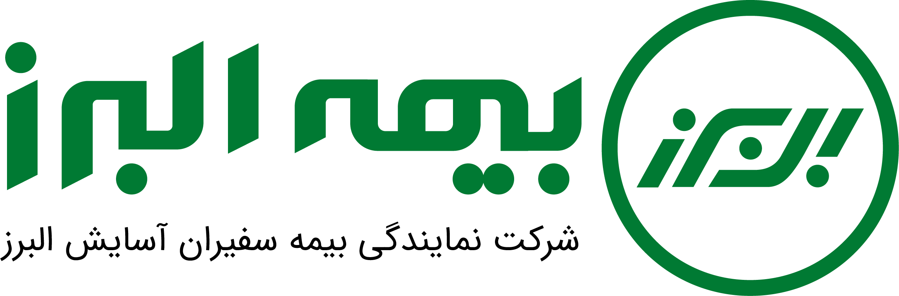

<!doctype html>
<html lang="fa" dir="rtl">
<head>
<meta charset="utf-8">
<meta name="viewport" content="width=device-width,initial-scale=1">

<style id="alborz-classroom-access-style">
html.alborz-class-locked #app{display:none!important}
html.alborz-class-locked{overflow:hidden}
.albz-login{position:fixed;inset:0;z-index:2147483500;overflow:auto;display:grid;place-items:center;padding:20px;background:radial-gradient(circle at 20% 20%,#c5e7d8,transparent 35%),linear-gradient(135deg,#eff6f0,#f6f8f3);direction:rtl;color:#193f33;font-family:Vazirmatn,Tahoma,sans-serif}
.albz-shell{display:grid;grid-template-columns:1fr 1fr;width:min(820px,100%);border:1px solid #cfdfd2;border-radius:25px;overflow:hidden;box-shadow:0 18px 70px #153e3129;background:#fff}
.albz-cover{background:linear-gradient(145deg,#0a3d32,#0b7657);color:#fff;padding:38px;display:flex;flex-direction:column;justify-content:center;min-height:420px;gap:14px}
.albz-cover .albz-symbol{font-size:34px;display:grid;place-items:center;width:70px;height:70px;border-radius:18px;border:1px solid #ffffff50;background:#ffffff19}
.albz-cover small{color:#cfe9dc;font-size:13px;font-weight:800;letter-spacing:.05em}
.albz-cover h1{font-size:28px;line-height:1.75;color:#fff;margin:0}
.albz-cover p{font-size:16px;line-height:2;color:#e0f7ea;margin:0}
.albz-fields{padding:38px 33px;align-self:center}
.albz-fields h2{font-size:25px;margin:0 0 8px;color:#184636}
.albz-fields p{font-size:15px;line-height:1.9;color:#647b6c;margin:0 0 20px}
.albz-fields label{display:block;font-size:14px;font-weight:800;margin:15px 0 7px}
.albz-fields input{box-sizing:border-box;width:100%;min-width:0;border:1.5px solid #c9ddd0;background:#fbfffc;border-radius:11px;font:inherit;font-size:17px;padding:12px 13px;direction:ltr;text-align:left;color:#163e32}
.albz-fields input:focus{outline:3px solid #b5dfc3;border-color:#14744e}
.albz-passrow{display:flex;align-items:center;gap:7px}
.albz-passrow input{flex:1}
.albz-eye{border:1px solid #cbdfd2;border-radius:10px;background:#f0f8f1;color:#235d43;font:800 13px Vazirmatn,Tahoma,sans-serif;padding:12px;cursor:pointer;white-space:nowrap}
.albz-enter{display:block;width:100%;margin-top:21px;background:linear-gradient(140deg,#0e8057,#12513c);color:white;border:0;border-radius:12px;padding:14px 16px;font:800 17px Vazirmatn,Tahoma,sans-serif;cursor:pointer}
.albz-enter:disabled{opacity:.55;cursor:wait}
.albz-status{min-height:27px;margin-top:12px;color:#ab3030;font-size:14px;font-weight:700}
.albz-exit{position:fixed;bottom:15px;left:16px;z-index:998;background:#fff;color:#15553e;border:1px solid #bddaca;border-radius:999px;box-shadow:0 6px 23px #113e302b;padding:9px 15px;font:800 13px Vazirmatn,Tahoma,sans-serif;cursor:pointer}
@media(max-width:670px){.albz-login{padding:11px;align-items:start}.albz-shell{grid-template-columns:1fr;margin:auto 0;border-radius:19px}.albz-cover{min-height:0;padding:24px;gap:8px}.albz-cover h1{font-size:22px}.albz-cover p{font-size:14px}.albz-cover .albz-symbol{width:45px;height:45px;font-size:23px;border-radius:12px}.albz-fields{padding:23px}.albz-fields h2{font-size:22px}}
</style>
<!-- Classroom convenience gate only. GitHub Pages files remain publicly readable. -->
<script id="alborz-classroom-access-script">
(function(){
"use strict";
const KEY="alborz-academy-classroom-session-v4";
const USER="Bimeh.alborz";
const SALT="28990ab5a3fedef8bd9e2856d98bd21f";
const VERIFY="e8b52f3c66f938183a09559ca2f4e43e5d21c13bba0b4809b3d6f6db5ca3a969";
const EXPIRY=4*60*60*1000;
function getLogin(){try{const s=JSON.parse(sessionStorage.getItem(KEY)||"null");return !!(s&&s.v===1&&s.until>Date.now());}catch(_){return false;}}
function saveLogin(){try{sessionStorage.setItem(KEY,JSON.stringify({v:1,until:Date.now()+EXPIRY}));return true;}catch(_){return false;}}
function clearLogin(){try{sessionStorage.removeItem(KEY);}catch(_){}}
const already=getLogin();
if(!already)document.documentElement.classList.add("alborz-class-locked");
async function correct(user,pass){
 // Normalize input from mobile keyboards and pasted text without exposing the password.
 const clean=s=>s.normalize("NFKC").replace(/[\s\u200b-\u200f\u202a-\u202e\u2060-\u2069\ufeff]/g,"");
 const normalizedUser=clean(user).toLowerCase();
 if(normalizedUser!==USER.toLowerCase())return "username";
 const normalizedPass=clean(pass).toLowerCase();
 if(!normalizedPass)return "password";
 // Capitalization of the input must not prevent entry during class.
 const canonicalPass=normalizedPass.charAt(0).toUpperCase()+normalizedPass.slice(1);
 const bytes=new TextEncoder().encode(USER+"\u0000"+canonicalPass);
 const key=await crypto.subtle.importKey("raw",bytes,"PBKDF2",false,["deriveBits"]);
 const salt=new Uint8Array(SALT.match(/../g).map(x=>parseInt(x,16)));
 const bits=await crypto.subtle.deriveBits({name:"PBKDF2",hash:"SHA-256",salt,iterations:180000},key,256);
 const computed=Array.from(new Uint8Array(bits),b=>b.toString(16).padStart(2,"0")).join("");
 return computed===VERIFY?"ok":"password";
}
function addExit(){
 if(document.getElementById("albz-class-exit"))return;
 const btn=document.createElement("button");btn.id="albz-class-exit";btn.type="button";btn.className="albz-exit";btn.textContent="↩ خروج از کلاس";
 btn.addEventListener("click",()=>{clearLogin();location.reload();});document.body.appendChild(btn);
}
function showGate(){
 const screen=document.createElement("section");screen.id="albz-class-login";screen.className="albz-login";screen.setAttribute("aria-label","ورود به آکادمی بیمه البرز");
 screen.innerHTML=`
 <div class="albz-shell">
 <div class="albz-cover"><div class="albz-symbol" aria-hidden="true">✦</div><small>آکادمی ارتباطات بیمه البرز</small><h1>آکادمی ارتباطات اثربخش بیمه البرز</h1><p>دوره اختصاصی رؤسای شعب · ورود به محیط کلاس</p></div>
 <div class="albz-fields"><h2>ورود به کلاس</h2><p>نام کاربری و رمز ارائه‌شده توسط مدرس را وارد کنید.</p><p style="font-size:12px;color:#6a8576;margin:-8px 0 8px">نسخه به‌روزشدهٔ ورود: ۴</p>
 <form id="albz-class-form" autocomplete="off">
 <label for="albz-class-user">نام کاربری</label><input id="albz-class-user" type="text" autocomplete="off" autocorrect="off" autocapitalize="none" spellcheck="false" required placeholder="Bimeh.alborz">
 <label for="albz-class-pass">رمز عبور</label><div class="albz-passrow"><input id="albz-class-pass" type="password" autocomplete="off" autocorrect="off" autocapitalize="none" spellcheck="false" required placeholder="رمز عبور"><button type="button" class="albz-eye" id="albz-class-eye" aria-label="نمایش یا پنهان کردن رمز">نمایش</button></div>
 <button type="submit" id="albz-class-enter" class="albz-enter">ورود به آکادمی ←</button><div class="albz-status" id="albz-class-status" aria-live="polite" role="status"></div>
 </form></div></div>
 `;
 document.body.appendChild(screen);
 document.getElementById("albz-class-eye").addEventListener("click",()=>{
   const pass=document.getElementById("albz-class-pass");pass.type=pass.type==="password"?"text":"password";
   document.getElementById("albz-class-eye").textContent=pass.type==="password"?"نمایش":"پنهان";
 });
 document.getElementById("albz-class-form").addEventListener("submit",async e=>{
  e.preventDefault();const submit=document.getElementById("albz-class-enter");const msg=document.getElementById("albz-class-status");
  submit.disabled=true;msg.textContent="در حال بررسی...";
  try{
    const user=document.getElementById("albz-class-user").value.trim(),pass=document.getElementById("albz-class-pass").value;
    const verdict=await correct(user,pass);
    if(verdict==="ok"){
      if(!saveLogin()){msg.textContent="نشست در مرورگر قابل ذخیره نیست. از مرورگر معمولی استفاده کنید.";return;}
      screen.remove();document.documentElement.classList.remove("alborz-class-locked");document.dispatchEvent(new Event("alborz-classroom-authenticated"));addExit();window.scrollTo(0,0);
    }else{
      msg.textContent=verdict==="username"?"نام کاربری شناسایی نشد؛ دقیقاً Bimeh.alborz را وارد کنید.":"رمز عبور مطابقت ندارد؛ صفحه‌کلید را روی انگلیسی بگذارید و رمز را دوباره وارد کنید.";
      document.getElementById("albz-class-pass").value="";
    }
  }catch(_){msg.textContent="مرورگر باید به‌روز و آدرس با HTTPS باز شده باشد.";}
  finally{submit.disabled=false;}
 });
}
document.addEventListener("DOMContentLoaded",()=>{if(already)addExit();else showGate();});
})();
</script>

<title>آکادمی مهارت‌های ارتباطات اثربخش | بیمه البرز</title>
<style>
:root{--navy:#173d5d;--teal:#168b8b;--bg:#f5f8fa;--ink:#263746;--muted:#6c7a84;--line:#dce7eb;--soft:#eef7f7}
*{box-sizing:border-box}body{margin:0;font-family:Vazirmatn,Tahoma,sans-serif;background:var(--bg);color:var(--ink);line-height:1.95;font-size:18px}a{text-decoration:none;color:inherit}.wrap{max-width:1120px;margin:auto;padding:0 20px}.top{background:#fff;border-bottom:1px solid var(--line);position:sticky;top:0;z-index:20}.topin{height:68px;display:flex;align-items:center;justify-content:space-between;gap:16px}.brand{display:flex;align-items:center;gap:11px}.logo{width:42px;height:42px;border-radius:13px;background:linear-gradient(145deg,var(--navy),var(--teal));color:#fff;display:grid;place-items:center;font-weight:800}.brand b{color:var(--navy)}.brand small{display:block;color:var(--muted);font-size:13px}.nav{display:flex;gap:8px}.utility-nav{display:flex;gap:7px;align-items:center}.utility-btn{display:inline-flex;align-items:center;gap:5px;padding:9px 12px;border:1px solid var(--line);background:#fff;border-radius:9px;font-size:14px;cursor:pointer;font-family:inherit;color:var(--navy)}.utility-btn:hover{background:var(--soft)}.lab-hero{background:#fff;border:1px solid var(--line);border-radius:18px;padding:22px;margin-bottom:16px}.lab-grid{display:grid;grid-template-columns:1fr 1fr;gap:14px}.lab-card{background:#fff;border:1px solid var(--line);border-radius:14px;padding:18px}.lab-card h2{font-size:22px;color:var(--navy);margin:0 0 8px}.lab-label{font-size:13px;color:var(--teal);font-weight:700;margin-bottom:5px}.cta-panel{background:linear-gradient(135deg,#f2f9f9,#fff);border:1px solid #cfe5e5;border-radius:15px;padding:18px;display:flex;justify-content:space-between;align-items:center;gap:14px}.cta-panel h3{margin:0;color:var(--navy);font-size:21px}.cta-panel p{margin:4px 0 0;color:var(--muted);font-size:15px}.nav a{font-size:15px;padding:7px 10px;border-radius:8px}.nav a:hover{background:var(--soft)}.hero{padding:50px 0 34px;background:linear-gradient(#fff,var(--bg))}.hero h1{color:var(--navy);font-size:42px;margin:10px 0}.hero p{max-width:900px;color:var(--muted);margin:0;font-size:18px}.tag{display:inline-block;background:var(--soft);color:var(--teal);border-radius:999px;padding:5px 10px;font-size:13px;font-weight:700}.summary{margin-top:20px;display:flex;gap:9px;flex-wrap:wrap}.pill{background:#fff;border:1px solid var(--line);padding:9px 12px;border-radius:999px;font-size:14px}.section{padding:28px 0}.section h2{color:var(--navy);margin:0 0 7px;font-size:28px}.sub{color:var(--muted);font-size:16px;margin-bottom:18px}.grid{display:grid;grid-template-columns:1fr 1fr;gap:16px}.card{background:#fff;border:1px solid var(--line);border-radius:16px;padding:19px;box-shadow:0 8px 22px rgba(23,61,93,.05);transition:.2s}.card:hover{transform:translateY(-3px);box-shadow:0 12px 30px rgba(23,61,93,.08)}.num{font-size:14px;color:var(--teal);font-weight:700}.card h3{color:var(--navy);font-size:22px;margin:6px 0}.card p{font-size:16px;color:var(--muted);margin:0 0 12px}.topics{display:flex;gap:6px;flex-wrap:wrap}.topic{background:#f2f7f8;border-radius:999px;padding:3px 7px;font-size:13px;color:#506572}.go{display:flex;justify-content:space-between;align-items:center;margin-top:14px;border-top:1px dashed var(--line);padding-top:11px;font-size:14px}.btn{display:inline-flex;align-items:center;gap:6px;border:0;background:var(--navy);color:#fff;padding:11px 16px;border-radius:10px;font-family:inherit;cursor:pointer;font-size:15px}.btn.alt{background:#fff;color:var(--navy);border:1px solid var(--line)}.session{padding:34px 0}.crumb{font-size:14px;color:var(--muted);margin-bottom:10px}.box{background:linear-gradient(135deg,var(--navy),#216c7a);color:#fff;border-radius:20px;padding:25px}.box h1{font-size:34px;margin:6px 0}.box p{color:#dcebf0;margin:0;font-size:18px}.meta{display:flex;gap:7px;flex-wrap:wrap;margin-top:13px}.meta span{background:rgba(255,255,255,.12);padding:6px 10px;border-radius:999px;font-size:13px}.content{display:grid;grid-template-columns:1fr 1fr;gap:15px;margin-top:18px}.panel{background:#fff;border:1px solid var(--line);border-radius:15px;padding:20px}.panel.full{grid-column:1/-1}.panel h2{color:var(--navy);font-size:24px;margin:0 0 10px}.panel ul{padding-right:19px;margin:0}.panel li{margin-bottom:6px}.placeholder{border:1px dashed #b9ccd3;background:#fbfdfd;border-radius:12px;padding:18px;color:var(--muted);font-size:16px}.footer{margin-top:35px;border-top:1px solid var(--line);padding:26px 0;color:var(--muted);font-size:14px}.guide{background:#fff;border:1px solid var(--line);border-radius:15px;padding:20px;margin-bottom:14px}
.ai-grid{display:grid;grid-template-columns:repeat(2,1fr);gap:12px}.ai-card{background:#fff;border:1px solid var(--line);border-radius:14px;padding:16px}.ai-card h3{margin:0 0 7px;color:var(--navy);font-size:20px}.clickable-card{display:block;position:relative;cursor:pointer}.clickable-card:hover{transform:translateY(-2px);box-shadow:0 10px 24px rgba(23,61,93,.08);border-color:#bcd7dc}.clickable-card:after{content:"مشاهده مثال ←";display:block;margin-top:10px;padding-top:8px;border-top:1px dashed var(--line);font-size:10px;color:var(--teal);font-weight:700}.level a{display:block;background:#fff;border:1px solid var(--line);border-radius:12px;padding:13px;transition:.2s}.level a:hover{transform:translateY(-2px);box-shadow:0 10px 24px rgba(23,61,93,.08);border-color:#bcd7dc}.level a:after{content:"مثال ←";display:block;margin-top:8px;font-size:10px;color:var(--teal);font-weight:700}.prompt-link{display:block}.prompt-link .prompt{transition:.2s}.prompt-link:hover .prompt{transform:translateY(-2px);box-shadow:0 10px 24px rgba(23,61,93,.07);border-color:#bcd7dc}.detail-example{background:#f7fbfc;border:1px solid var(--line);border-radius:14px;padding:18px;margin-top:12px}.detail-example h3{margin:0 0 8px;color:var(--navy)}.detail-kicker{font-size:10px;color:var(--teal);font-weight:700}.detail-prompt{margin-top:12px;background:#fff;border:1px solid var(--line);border-radius:12px;padding:15px}.detail-prompt code{font-family:Vazirmatn,Tahoma,sans-serif;white-space:normal}
.detail-page .wrap{max-width:1180px}.detail-page .lab-hero{padding:28px}.detail-page .lab-hero h1{font-size:38px;line-height:1.45}.detail-page .lab-hero p{font-size:17px;line-height:1.9}.detail-page .detail-example{padding:24px}.detail-page .detail-kicker{font-size:13px}.detail-page .detail-example h3{font-size:23px;margin-top:4px}.detail-page .detail-example p,.detail-page .detail-prompt,.detail-page .detail-output{font-size:17px;line-height:2}.detail-page .detail-prompt{padding:19px}.detail-output{margin-top:14px;background:#fff;border:1px solid #cfe2d9;border-radius:12px;padding:19px}.detail-output b{display:block;color:var(--teal);font-size:16px;margin-bottom:7px}.detail-output .output-body{color:#2d4350}.detail-page .btn{font-size:13px;padding:10px 14px}.ai-card p{margin:0;color:var(--muted);font-size:16px}.prompt{background:#f7fbfc;border:1px solid #dce9ed;border-radius:12px;padding:13px;margin-top:9px}.prompt b{display:block;color:var(--teal);margin-bottom:7px;font-size:17px}.prompt code{white-space:normal;font-family:Vazirmatn,Tahoma,sans-serif;color:#354b58;font-size:16px;line-height:2}.level{display:grid;grid-template-columns:repeat(4,1fr);gap:9px}.level>div{background:#fff;border:1px solid var(--line);border-radius:12px;padding:13px}.level b{display:block;color:var(--navy);margin-bottom:5px;font-size:18px}.warn{background:#fff8ec;border:1px solid #ecd7a9;border-radius:12px;padding:14px}.safe{background:#eff9f4;border:1px solid #cce6d9;border-radius:12px;padding:14px}.linkrow{display:flex;gap:8px;flex-wrap:wrap;margin-top:11px}.mini{font-size:15px;color:var(--muted)}
@media(max-width:820px){.ai-grid,.level{grid-template-columns:1fr 1fr}}@media(max-width:560px){.ai-grid,.level{grid-template-columns:1fr}.detail-page .lab-hero h1{font-size:34px}.detail-page .lab-hero p{font-size:18px}.detail-page .detail-example p,.detail-page .detail-prompt,.detail-page .detail-output{font-size:18px}.detail-page .detail-example h3{font-size:24px}.detail-page .btn{font-size:12px}}
@media(max-width:820px){.grid,.content,.lab-grid{grid-template-columns:1fr}.panel.full{grid-column:auto}.hero h1{font-size:34px}.box h1{font-size:29px}.nav{display:none}.utility-nav{display:flex}.utility-btn{padding:7px 9px}}

.s1-stepper{border:1px solid #dbe8df;border-radius:20px;padding:20px;background:linear-gradient(145deg,#fff,#f8fbf9)}
.s1-step-head{display:flex;justify-content:space-between;align-items:center;gap:12px;margin-bottom:14px}.s1-progress{height:8px;background:#e5eee8;border-radius:999px;overflow:hidden;flex:1}.s1-progress>span{display:block;height:100%;background:linear-gradient(90deg,#0d6d4b,#3b9b74);border-radius:999px;transition:.25s}
.s1-step-count{font-size:14px;font-weight:800;color:#557064;white-space:nowrap}.s1-step-q{font-size:21px;font-weight:800;line-height:1.9;color:#173f34;margin:14px 0}
.s1-big-scale{display:grid;grid-template-columns:repeat(5,1fr);gap:8px}.s1-big-scale button{border:1px solid #c7dccd;background:#fff;border-radius:14px;padding:14px 8px;font:inherit;font-size:17px;font-weight:800;cursor:pointer}.s1-big-scale button.selected{background:#0d6d4b;color:#fff;border-color:#0d6d4b}
.s1-step-nav{display:flex;justify-content:space-between;gap:10px;margin-top:16px}.s1-step-nav button{border:1px solid #cbded0;background:#f8fcf9;border-radius:12px;padding:10px 16px;font:inherit;font-weight:800;cursor:pointer}.s1-step-nav button.primary{background:#0d6d4b;color:#fff;border-color:#0d6d4b}.s1-step-nav button:disabled{opacity:.4;cursor:not-allowed}
.s1-accordion{border:1px solid #dbe7df;border-radius:16px;background:#fff;margin:10px 0;overflow:hidden}.s1-accordion summary{cursor:pointer;list-style:none;padding:16px 18px;font-size:18px;font-weight:800;color:#174d3c;display:flex;align-items:center;justify-content:space-between;gap:12px}.s1-accordion summary::-webkit-details-marker{display:none}.s1-accordion summary:after{content:"＋";font-size:20px;color:#0d6d4b}.s1-accordion[open] summary:after{content:"−"}.s1-accordion .inside{padding:0 18px 18px;font-size:16px;line-height:1.95;color:#405b4e}.s1-accordion .inside b{color:#174d3c}
.s1-case-step{border:1px solid #d9e7dd;border-radius:20px;padding:20px;background:#fff}.s1-case-stage{font-size:14px;font-weight:800;color:#5b7266;margin-bottom:6px}.s1-next-case{display:none;margin-top:14px;border:0;background:#0d6d4b;color:#fff;border-radius:12px;padding:10px 18px;font:inherit;font-weight:800;cursor:pointer}.s1-next-case.show{display:inline-block}
.s1-action-cards{display:grid;gap:14px}.s1-action-card{border:1px solid #dbe7df;border-radius:18px;padding:18px;background:#f8fbf9}.s1-action-card h4{margin:0 0 12px;color:#174d3c;font-size:19px}.s1-field{margin:10px 0}.s1-field label{display:block;font-size:14px;font-weight:800;color:#557064;margin-bottom:5px}.s1-field input{width:100%;box-sizing:border-box;border:1px solid #ccdcd2;border-radius:10px;padding:10px;font:inherit;font-size:16px;background:#fff}
.s1-menu-toggle{display:none;border:0;background:#0b4d39;color:#fff;border-radius:14px;padding:10px 14px;font:inherit;font-weight:800;cursor:pointer;align-items:center;gap:8px}
@media(max-width:900px){
 .s1-shell{grid-template-columns:1fr;padding:14px;display:block}
 .s1-menu-toggle{display:flex;position:sticky;top:76px;z-index:997;margin:0 0 12px auto;box-shadow:0 6px 18px rgba(7,60,50,.18)}
 .s1-side{display:none;position:fixed;right:12px;left:12px;top:122px;z-index:999;max-height:68vh;overflow:auto;border-radius:20px}
 .s1-side.open{display:block}
 .s1-side-title{display:block}
 .s1-nav-btn{min-width:0;margin:5px 0}
 .s1-big-scale{grid-template-columns:repeat(5,minmax(48px,1fr))}
 .s1-stepper{padding:16px}
 .s1-step-q{font-size:19px}
}
</style>
<link rel="preload" href="assets/fonts/Vazirmatn.woff2" as="font" type="font/woff2" crossorigin>
<link rel="stylesheet" href="assets/theme.css?v=20261022-1">
<style id="session1-dashboard-theme">
.s1-shell{max-width:1380px;margin:0 auto;padding:24px 26px 50px;display:grid;grid-template-columns:minmax(0,1fr) 250px;gap:24px;direction:ltr}
.s1-main,.s1-side{direction:rtl}.s1-side{position:sticky;top:105px;align-self:start;background:linear-gradient(180deg,#0b4d39,#073c32);border-radius:24px;padding:14px;box-shadow:0 18px 40px rgba(7,60,50,.18);max-height:calc(100vh - 130px);overflow:auto}
.s1-side-title{color:#fff;font-size:14px;font-weight:800;padding:8px 10px 14px;border-bottom:1px solid rgba(255,255,255,.17);margin-bottom:8px}
.s1-nav-btn{width:100%;border:0;background:transparent;color:#e9fff3;border-radius:14px;padding:12px 12px;margin:4px 0;display:flex;align-items:center;gap:11px;text-align:right;font-family:inherit;font-size:16px;font-weight:700;cursor:pointer;transition:.2s}
.s1-nav-btn .ico{width:34px;height:34px;display:grid;place-items:center;background:rgba(255,255,255,.13);border-radius:10px;font-size:19px;flex:0 0 34px}
.s1-nav-btn:hover,.s1-nav-btn.active{background:#fff;color:#0b4d39;transform:translateX(-2px)}.s1-nav-btn.active .ico{background:#e7f6ec}
.s1-hero{background:radial-gradient(circle at 15% 20%,rgba(255,255,255,.16),transparent 28%),linear-gradient(135deg,#0d5e45,#0a4638 64%,#123e35);border-radius:28px;padding:34px;color:#fff;position:relative;overflow:hidden;box-shadow:0 16px 38px rgba(11,77,57,.18);margin-bottom:22px}
.s1-hero:after{content:"💬";position:absolute;left:28px;bottom:-20px;font-size:118px;opacity:.09;transform:rotate(-8deg)}
.s1-eyebrow{display:inline-flex;gap:7px;align-items:center;background:rgba(255,255,255,.13);border:1px solid rgba(255,255,255,.23);padding:6px 12px;border-radius:999px;font-size:15px;font-weight:800}
.s1-hero h1{font-size:38px;line-height:1.55;margin:14px 0 10px;color:#fff}.s1-hero p{font-size:21px;line-height:2;margin:0;max-width:940px;color:#edf9f2}
.s1-meta{display:flex;gap:9px;flex-wrap:wrap;margin-top:18px}.s1-meta span{background:rgba(255,255,255,.12);padding:7px 11px;border-radius:10px;font-size:15px}
.s1-panel{background:#fff;border:1px solid #d9e6dc;border-radius:24px;padding:28px;box-shadow:0 8px 26px rgba(16,62,45,.06);min-height:560px}
.s1-panel-head{display:flex;align-items:center;gap:14px;border-bottom:1px solid #e0ebe3;padding-bottom:18px;margin-bottom:22px}.s1-panel-head .bigico{font-size:34px;width:58px;height:58px;display:grid;place-items:center;border-radius:18px;background:linear-gradient(135deg,#e7f5eb,#f7fbf8)}
.s1-panel-head h2{font-size:30px;color:#143f32;margin:0}.s1-panel-head p{font-size:17px;color:#647a6d;margin:2px 0 0}
.s1-card-grid{display:grid;grid-template-columns:repeat(2,minmax(0,1fr));gap:16px}.s1-card{border:1px solid #dbe8df;background:linear-gradient(145deg,#fff,#f7fbf8);border-radius:18px;padding:20px;position:relative;overflow:hidden}.s1-card h3{font-size:22px;color:#174d3c;margin:0 0 8px}.s1-card p,.s1-card li{font-size:18px;line-height:1.95}.s1-card .mini-emoji{font-size:28px;display:block;margin-bottom:8px}
.s1-accent{border-right:5px solid #c0a35a}.s1-question{font-size:24px;font-weight:900;line-height:1.9;color:#173f34;background:#eff8f1;border:1px solid #d0e7d5;padding:20px;border-radius:18px}
.s1-callout{background:#fff8e7;border:1px solid #ead9a9;border-radius:18px;padding:18px 20px;font-size:19px;line-height:2;margin:16px 0}.s1-callout b{color:#735b1d}
.s1-test-intro{display:grid;grid-template-columns:1.2fr .8fr;gap:16px}.s1-target{background:#eef7f0;border:1px solid #d3e7d7;border-radius:18px;padding:18px}.s1-target label{font-size:16px;font-weight:800;color:#315b49;display:block;margin-bottom:8px}.s1-target select{width:100%;font:inherit;font-size:17px;padding:11px;border-radius:12px;border:1px solid #bfd6c5;background:#fff}
.s1-q{border:1px solid #dde9e1;border-radius:16px;padding:17px;margin:12px 0;background:#fff}.s1-q-title{font-size:18px;font-weight:700;line-height:1.9;margin-bottom:10px}.s1-scale{display:flex;gap:7px;flex-wrap:wrap}.s1-scale label{cursor:pointer;border:1px solid #cbded0;border-radius:10px;padding:7px 11px;background:#f9fcfa;font-size:15px}.s1-scale input{margin-left:4px}
.s1-submit{border:0;background:linear-gradient(135deg,#0d6d4b,#0a503c);color:#fff;border-radius:14px;padding:12px 22px;font:inherit;font-size:18px;font-weight:800;cursor:pointer;margin-top:10px}
.s1-result{display:none;margin-top:22px}.s1-result.show{display:block}
.s1-coach{margin-top:18px;display:grid;grid-template-columns:repeat(3,minmax(0,1fr));gap:14px}
.s1-coach-card{border-radius:18px;padding:18px;border:1px solid #d9e6dc;background:#fff;box-shadow:0 5px 16px rgba(16,62,45,.04)}
.s1-coach-card.strength{background:#eef8f1;border-color:#cfe4d5}.s1-coach-card.risk{background:#fff6eb;border-color:#ead9bd}.s1-coach-card.practice{background:#f0f5ff;border-color:#d6def0}
.s1-coach-card h4{font-size:20px;margin:0 0 10px;color:#174d3c}.s1-coach-card ul{margin:0;padding-right:20px}.s1-coach-card li{font-size:16px;line-height:1.95;margin:5px 0}
.s1-dev-plan{margin-top:16px;border:1px solid #dbe6df;border-radius:18px;padding:18px;background:linear-gradient(135deg,#f8fbf9,#fff)}
.s1-dev-plan h4{font-size:21px;color:#154936;margin:0 0 10px}.s1-dev-plan .step{display:flex;gap:10px;align-items:flex-start;margin:10px 0;font-size:16px;line-height:1.9}.s1-dev-plan .num{width:28px;height:28px;flex:0 0 28px;display:grid;place-items:center;border-radius:50%;background:#0d6d4b;color:#fff;font-weight:800}
@media(max-width:900px){.s1-coach{grid-template-columns:1fr}}.s1-scores{display:grid;grid-template-columns:1fr 1fr;gap:12px}.s1-score{background:#f4faf6;border:1px solid #d4e6d8;border-radius:16px;padding:16px;text-align:center}.s1-score b{display:block;font-size:28px;color:#0c6044}.s1-score span{font-size:15px}
.s1-matrix{margin-top:16px;position:relative;height:360px;display:grid;grid-template-columns:1fr 1fr;grid-template-rows:1fr 1fr;border:2px solid #1b5a43;border-radius:20px;overflow:hidden;background:#fff}.s1-cell{padding:20px;display:flex;flex-direction:column;justify-content:center;align-items:center;text-align:center;font-size:16px;line-height:1.8}.s1-cell b{font-size:19px}.s1-cell:nth-child(1){background:#eef8ef}.s1-cell:nth-child(2){background:#f1f8f4}.s1-cell:nth-child(3){background:#fff8eb}.s1-cell:nth-child(4){background:#f7f3ef}.s1-dot{position:absolute;width:24px;height:24px;background:#d44432;border:4px solid #fff;border-radius:50%;box-shadow:0 3px 12px rgba(0,0,0,.25);transform:translate(50%,50%);transition:.35s}.s1-axis-x,.s1-axis-y{font-size:13px;color:#566b60;font-weight:800}.s1-axis-x{text-align:center;margin-top:6px}.s1-axis-y{position:absolute;right:-90px;top:50%;transform:rotate(-90deg)}
.s1-case{border:1px solid #d9e7dd;border-radius:18px;padding:20px;margin:14px 0;background:#fff}.s1-case h3{font-size:21px;margin:0 0 8px;color:#184c3b}.s1-case p{font-size:18px;line-height:1.95}.s1-options{display:flex;gap:8px;flex-wrap:wrap}.s1-option{border:1px solid #c7dccd;background:#f8fcf9;border-radius:12px;padding:9px 13px;font:inherit;font-size:16px;cursor:pointer}.s1-option:hover{background:#e8f5eb}
.s1-feedback{display:none;margin-top:10px;padding:12px;border-radius:12px;background:#eef8f1;border-right:4px solid #168353;font-size:16px;line-height:1.9}.s1-feedback.show{display:block}
.s1-quote{font-size:23px;font-weight:900;color:#164b3a;padding:24px;background:linear-gradient(135deg,#edf7ef,#fff);border-radius:20px;border-right:6px solid #c1a45a;line-height:2}
.s1-role{display:grid;grid-template-columns:1fr 1fr;gap:14px}.s1-role-card{border-radius:18px;padding:20px;border:1px solid #d8e6dc;background:#fbfefc}.s1-role-card h3{font-size:22px;margin:0 0 8px}.s1-check{display:grid;grid-template-columns:repeat(5,1fr);gap:8px;margin-top:16px}.s1-check div{background:#eef7f0;border-radius:12px;padding:10px;text-align:center;font-size:14px;font-weight:700}
.s1-action-table{width:100%;border-collapse:separate;border-spacing:0 8px}.s1-action-table th{font-size:15px;color:#557064;text-align:right}.s1-action-table td{background:#f7fbf8;padding:10px}.s1-action-table input{width:100%;border:1px solid #d0dfd4;border-radius:9px;padding:9px;font:inherit;font-size:15px}
.s1-pill-row{display:flex;gap:8px;flex-wrap:wrap;margin:12px 0}.s1-pill{background:#edf6ef;border:1px solid #d2e5d6;border-radius:999px;padding:7px 12px;font-size:15px;font-weight:700}
.s1-takeaway{margin-top:16px;background:linear-gradient(135deg,#0d5e45,#0a4638);color:#fff;border-radius:18px;padding:18px 20px;font-size:18px;line-height:1.95;font-weight:700}
.s1-micro{display:grid;grid-template-columns:repeat(3,minmax(0,1fr));gap:12px;margin-top:14px}.s1-micro>div{background:#f7fbf8;border:1px solid #dae7de;border-radius:16px;padding:15px}.s1-micro b{display:block;color:#174d3c;font-size:17px;margin-bottom:6px}.s1-micro span{font-size:15px;line-height:1.8}
.s1-case-note{font-size:14px;color:#667a70;margin-top:8px}
.s1-mini-table{width:100%;border-collapse:collapse;margin-top:14px}.s1-mini-table th,.s1-mini-table td{border:1px solid #dbe7df;padding:10px;font-size:15px;text-align:right}.s1-mini-table th{background:#eef6f0;color:#194a39}
.s1-stage2{margin-top:10px;padding:12px 14px;border-radius:12px;background:#fff8e8;border:1px solid #ead9aa;font-size:16px;line-height:1.9}
.s1-hero-compact{padding:28px 32px;margin-bottom:18px;border-radius:24px}.s1-hero-compact h1{font-size:34px;margin:10px 0 5px;line-height:1.5}.s1-hero-compact p{font-size:18px;line-height:1.8;max-width:760px}.s1-hero-compact .s1-meta{margin-top:12px}.s1-hero-compact .s1-meta span{padding:5px 10px;font-size:13px}
.s1-start{max-width:920px;margin:0 auto}.s1-start .s1-panel-head{margin-bottom:16px;padding-bottom:14px}.s1-start .s1-panel-head .bigico{width:52px;height:52px;font-size:29px}.s1-start .s1-panel-head h2{font-size:28px}.s1-start .s1-panel-head p{font-size:15px}
.s1-start-question{font-size:23px;padding:18px 20px;border-radius:16px;background:linear-gradient(135deg,#edf8f1,#f8fcf9);box-shadow:0 6px 18px rgba(16,62,45,.04)}
.s1-start-goal{display:flex;gap:12px;align-items:flex-start;margin:14px 0;padding:15px 17px;border:1px solid #dce9e0;border-radius:15px;background:#fff}.s1-start-icon{font-size:22px;line-height:1.5}.s1-start-goal b{display:block;color:#174d3c;font-size:17px;margin-bottom:3px}.s1-start-goal p{margin:0;color:#4d6358;font-size:16px;line-height:1.85}
.s1-start-pulse,.s1-start-scenario{margin-top:14px;border:1px solid #dbe7df;border-radius:17px;padding:17px 18px;background:#fbfdfb}.s1-start-kicker{font-size:12px;font-weight:900;color:#0d6d4b;margin-bottom:4px}.s1-start-pulse h3,.s1-start-scenario h3{font-size:18px;line-height:1.75;color:#173f34;margin:0 0 10px}.s1-start-scenario p{font-size:16px;line-height:1.85;color:#53685d;margin:0 0 10px}
.s1-start-choices{display:flex;gap:7px;flex-wrap:wrap}.s1-start-choices button{border:1px solid #cbded0;background:#fff;color:#315b49;border-radius:999px;padding:8px 12px;font:inherit;font-size:14px;font-weight:800;cursor:pointer;transition:.18s}.s1-start-choices button:hover{border-color:#7bb094;background:#f1f8f3}.s1-start-choices button.selected{background:#0d6d4b;color:#fff;border-color:#0d6d4b;box-shadow:0 4px 12px rgba(13,109,75,.16)}.s1-start-choice-note{font-size:13px;color:#6a7d72;margin-top:9px}
.s1-start-scenario details,.s1-start-science{border:1px solid #dce8df;border-radius:13px;background:#fff;overflow:hidden}.s1-start-scenario summary,.s1-start-science summary{cursor:pointer;padding:11px 13px;font-size:14px;font-weight:900;color:#174d3c}.s1-start-scenario details div,.s1-start-science div{padding:0 13px 13px;font-size:15px;line-height:1.9;color:#4b6357}.s1-start-science{margin-top:12px;background:#f8fbf9}
.s1-start-story{max-width:900px}.s1-start-hook{display:flex;align-items:flex-start;justify-content:center;gap:10px;margin:2px 0 16px;padding:18px 22px;border-radius:18px;background:linear-gradient(135deg,#0d5e45,#0a4638);color:#fff;box-shadow:0 10px 26px rgba(11,77,57,.13);font-size:20px;line-height:1.9;text-align:center}.s1-start-hook span{font-size:30px;line-height:1;opacity:.55}.s1-start-hook b{font-weight:800}
.s1-story-card{border:1px solid #d9e7dd;border-radius:20px;background:#fff;overflow:hidden;box-shadow:0 8px 24px rgba(16,62,45,.06)}.s1-story-top{display:flex;align-items:center;gap:10px;padding:15px 18px;background:#f0f7f2;border-bottom:1px solid #dce9e0}.s1-story-top span{background:#0d6d4b;color:#fff;border-radius:999px;padding:4px 9px;font-size:12px;font-weight:900}.s1-story-top b{color:#173f34;font-size:18px}.s1-story-tags{display:flex;gap:7px;flex-wrap:wrap;padding:12px 18px 0}.s1-story-tags span{background:#f8fbf9;border:1px solid #e0ebe3;border-radius:999px;padding:5px 9px;font-size:12px;color:#587064}
.s1-story-body{padding:10px 18px 2px}.s1-story-body p{margin:7px 0;font-size:16px;line-height:1.95;color:#405b4e}.s1-story-line{margin-top:12px!important;padding:11px 13px;border-radius:12px;background:#fff8e8;border-right:4px solid #c1a45a;color:#5c4d25!important}.s1-story-question{padding:14px 18px 8px;color:#173f34;font-size:17px}
.s1-story-options{display:grid;gap:8px;padding:0 18px 18px}.s1-story-options button{width:100%;text-align:right;border:1px solid #cfded4;background:#fbfdfb;border-radius:13px;padding:11px 13px;font:inherit;font-size:14px;line-height:1.8;color:#334f41;cursor:pointer;transition:.18s}.s1-story-options button:hover{background:#eef7f1;border-color:#8db8a0}.s1-story-options button.selected-good{background:#edf8f1;border-color:#168353}.s1-story-options button.selected-bad{background:#fff5f1;border-color:#cf654f}
.s1-story-feedback{display:none;margin:0 18px 18px;padding:12px 14px;border-radius:13px;font-size:14px;line-height:1.9}.s1-story-feedback.show{display:block}.s1-story-feedback.good{background:#edf8f1;border-right:4px solid #168353;color:#285a45}.s1-story-feedback.bad{background:#fff5f1;border-right:4px solid #cf654f;color:#70483f}
.s1-business-start{max-width:960px}.s1-journey-card{border:1px solid #d9e7dd;border-radius:20px;background:linear-gradient(145deg,#fff,#f7fbf8);padding:20px;box-shadow:0 8px 24px rgba(16,62,45,.05)}.s1-journey-title{font-size:20px;font-weight:900;color:#173f34;margin-bottom:14px}
.s1-journey-track{display:grid;grid-template-columns:1fr auto 1fr auto 1fr;gap:10px;align-items:stretch}.s1-journey-node{border:1px solid #dce8df;border-radius:15px;padding:14px;background:#fff;display:flex;flex-direction:column;gap:4px}.s1-journey-node>span{width:28px;height:28px;border-radius:50%;display:grid;place-items:center;background:#edf6ef;color:#0d6d4b;font-weight:900;font-size:13px}.s1-journey-node b{font-size:16px;color:#173f34}.s1-journey-node small{font-size:13px;color:#667a70;line-height:1.7}.s1-journey-node.active{border-color:#79ad91;background:#edf8f1;box-shadow:0 5px 14px rgba(13,109,75,.08)}.s1-journey-node.active>span{background:#0d6d4b;color:#fff}.s1-journey-arrow{display:grid;place-items:center;font-size:24px;color:#83a18f}
.s1-journey-message{margin:16px 0 0;padding:13px 15px;border-radius:14px;background:#0d5e45;color:#fff;font-size:16px;line-height:1.9}.s1-journey-message b{color:#fff}
.s1-core-statement{margin:14px 0;padding:16px 18px;border-radius:17px;background:#fff8e8;border:1px solid #ead8a3;border-right:5px solid #c1a45a;font-size:17px;line-height:1.95;color:#5b4d27}
.s1-business-case{border:1px solid #d9e7dd;border-radius:20px;background:#fff;overflow:hidden;box-shadow:0 8px 22px rgba(16,62,45,.05)}.s1-business-case-head{display:flex;align-items:center;gap:10px;padding:15px 18px;background:#f0f7f2;border-bottom:1px solid #dce9e0}.s1-business-case-head span{background:#0d6d4b;color:#fff;border-radius:999px;padding:4px 9px;font-size:12px;font-weight:900}.s1-business-case-head b{font-size:18px;color:#173f34}.s1-business-case-body{padding:16px 18px 18px}.s1-business-case-body>p{font-size:16px;line-height:1.95;color:#405b4e;margin:0 0 12px}.s1-business-case-q{font-weight:900;color:#173f34!important}
.s1-business-case-options{display:grid;grid-template-columns:1fr 1fr;gap:10px}.s1-business-case-options button{border:1px solid #d5e2d9;background:#fbfdfb;border-radius:15px;padding:14px;text-align:right;font:inherit;cursor:pointer;transition:.18s}.s1-business-case-options button:hover{transform:translateY(-1px);border-color:#8db8a0;box-shadow:0 6px 16px rgba(16,62,45,.05)}.s1-business-case-options button b{display:block;color:#174d3c;font-size:16px;margin-bottom:6px}.s1-business-case-options button span{display:block;font-size:14px;line-height:1.85;color:#52685d}.s1-business-case-options button.chosen-good{background:#edf8f1;border-color:#168353}.s1-business-case-options button.chosen-bad{background:#fff5f1;border-color:#cf654f}
.s1-business-case-feedback{display:none;margin-top:12px;padding:13px 14px;border-radius:13px;font-size:14px;line-height:1.9}.s1-business-case-feedback.show{display:block}.s1-business-case-feedback.good{background:#edf8f1;border-right:4px solid #168353;color:#285a45}.s1-business-case-feedback.bad{background:#fff5f1;border-right:4px solid #cf654f;color:#70483f}
.s1-impact-grid{display:grid;grid-template-columns:1fr 1fr;gap:10px;margin-top:14px}.s1-impact{border-radius:16px;overflow:hidden;background:#fff}.s1-impact.good{border:1px solid #cfe4d5}.s1-impact.risk{border:1px solid #ead9bd}.s1-impact summary{cursor:pointer;padding:13px 15px;font-weight:900;font-size:15px;list-style:none}.s1-impact summary::-webkit-details-marker{display:none}.s1-impact.good summary{color:#1b6345;background:#f1f9f4}.s1-impact.risk summary{color:#7b572f;background:#fff8ef}.s1-impact>div{display:flex;gap:7px;flex-wrap:wrap;padding:13px}.s1-impact>div span{border-radius:999px;padding:6px 9px;font-size:12px;background:#f7faf8;border:1px solid #e1ebe4;color:#4f665a}
.s1-business-takeaway{margin-top:14px;border-radius:16px;padding:15px 17px;background:linear-gradient(135deg,#0d5e45,#0a4638);color:#fff;font-size:16px;line-height:1.95}.s1-business-takeaway b{color:#fff}.s1-open-v2{max-width:1040px}.s1-open-hero{display:grid;grid-template-columns:1.12fr .88fr;gap:16px;margin-bottom:16px}.s1-open-copy{border:1px solid #d9e7dd;border-radius:22px;padding:22px;background:linear-gradient(145deg,#fff,#f4faf6)}.s1-open-badge{display:inline-block;background:#e6f3e9;color:#0d6d4b;border:1px solid #cfe3d5;border-radius:999px;padding:5px 10px;font-size:12px;font-weight:900}.s1-open-copy h3{font-size:27px;line-height:1.65;color:#143f32;margin:10px 0 8px}.s1-open-copy>p{font-size:16px;line-height:1.95;color:#465f52;margin:0}.s1-open-roles{display:flex;gap:7px;flex-wrap:wrap;margin-top:13px}.s1-open-roles span{background:#fff;border:1px solid #d7e5db;border-radius:999px;padding:6px 9px;font-size:12px;font-weight:800;color:#3f5d4e}.s1-open-rule{margin-top:14px;padding:12px 14px;border-radius:14px;background:#0d5e45;color:#fff;font-size:14px;line-height:1.95}.s1-open-rule b{color:#fff}
.s1-open-image{position:relative;min-height:300px;border-radius:22px;overflow:hidden;background:#0d5e45;box-shadow:0 10px 26px rgba(11,77,57,.13)}.s1-open-image>img{width:100%;height:100%;object-fit:cover;position:absolute;inset:0}.s1-open-image-shade{position:absolute;inset:0;background:linear-gradient(180deg,rgba(5,45,34,.1),rgba(5,45,34,.78))}.s1-open-image-label{position:absolute;right:16px;left:16px;bottom:16px;display:flex;align-items:center;gap:10px;color:#fff}.s1-open-image-label img{width:46px;height:46px;object-fit:contain;background:rgba(255,255,255,.92);border-radius:13px;padding:5px}.s1-open-image-label span{font-size:15px;line-height:1.7}.s1-open-image-label b{font-size:19px;color:#fff}
.s1-day-card{border:1px solid #d8e6dc;border-radius:22px;background:#fff;overflow:hidden;box-shadow:0 8px 24px rgba(16,62,45,.05)}.s1-day-head{display:flex;justify-content:space-between;gap:14px;align-items:flex-start;padding:17px 19px;background:#f4faf6;border-bottom:1px solid #dce9e0}.s1-day-head span{font-size:12px;font-weight:900;color:#0d6d4b}.s1-day-head h3{font-size:21px;color:#173f34;margin:2px 0}.s1-day-head p{font-size:13px;color:#62766b;margin:0}.s1-day-counter{background:#0d6d4b;color:#fff;border-radius:999px;padding:6px 10px;font-size:12px;font-weight:900;white-space:nowrap}
.s1-day-tabs{display:grid;grid-template-columns:repeat(3,1fr);gap:0;border-bottom:1px solid #dce9e0}.s1-day-tabs button{border:0;border-left:1px solid #e2ebe5;background:#fff;padding:11px 8px;font:inherit;font-size:14px;font-weight:800;color:#536a5e;cursor:pointer}.s1-day-tabs button:last-child{border-left:0}.s1-day-tabs button.active{background:#0d5e45;color:#fff}.s1-moment{padding:17px 19px}.s1-moment-top{display:flex;gap:10px;align-items:center}.s1-moment-top span{background:#edf6ef;color:#0d6d4b;border-radius:999px;padding:4px 8px;font-size:12px;font-weight:900}.s1-moment-top b{font-size:17px;color:#173f34}.s1-moment-story{font-size:15px;line-height:1.95;color:#445d50;margin:10px 0}.s1-moment-skill{display:inline-block;background:#fff8e8;border:1px solid #ead8a3;border-radius:10px;padding:6px 9px;font-size:12px;color:#6c592c}.s1-moment-q{font-size:14px;font-weight:900;color:#173f34;margin:13px 0 8px}.s1-moment-options{display:grid;grid-template-columns:1fr 1fr;gap:9px}.s1-moment-options button{text-align:right;border:1px solid #d6e3da;background:#fbfdfb;border-radius:13px;padding:11px 12px;font:inherit;font-size:13px;line-height:1.85;color:#40594c;cursor:pointer}.s1-moment-options button:hover{border-color:#8db8a0;background:#f2f8f4}.s1-moment-options button.good{background:#edf8f1;border-color:#168353}.s1-moment-options button.bad{background:#fff5f1;border-color:#cf654f}.s1-moment-feedback{display:none;margin-top:10px;border-radius:12px;padding:10px 12px;font-size:13px;line-height:1.9}.s1-moment-feedback.show{display:block}.s1-moment-feedback.good{background:#edf8f1;border-right:4px solid #168353;color:#285a45}.s1-moment-feedback.bad{background:#fff5f1;border-right:4px solid #cf654f;color:#70483f}
.s1-why-grid{display:grid;grid-template-columns:1fr 1fr;gap:10px;margin-top:14px}.s1-why{border-radius:16px;overflow:hidden;background:#fff}.s1-why.good{border:1px solid #cfe4d5}.s1-why.risk{border:1px solid #ead9bd}.s1-why summary{display:flex;align-items:center;gap:8px;cursor:pointer;list-style:none;padding:13px 14px;font-weight:900;font-size:14px}.s1-why summary::-webkit-details-marker{display:none}.s1-why.good summary{background:#f1f9f4;color:#1b6345}.s1-why.risk summary{background:#fff8ef;color:#7b572f}.s1-why summary span{width:24px;height:24px;border-radius:50%;display:grid;place-items:center;background:#fff}.s1-why>div{display:flex;gap:6px;flex-wrap:wrap;padding:12px}.s1-why>div b{font-size:12px;font-weight:800;background:#f8fbf9;border:1px solid #e0e9e3;border-radius:999px;padding:6px 8px;color:#4b6256}
.s1-open-close{margin-top:14px;border-radius:16px;padding:15px 17px;background:linear-gradient(135deg,#113f34,#0b5b42);color:#fff;font-size:15px;line-height:1.95}.s1-open-close b{color:#fff}
.s1-open-v3{max-width:1040px}.s1-open-v3-hero{display:grid;grid-template-columns:1fr 1.15fr;gap:16px;margin-bottom:14px}.s1-open-v3-copy{border:1px solid #d9e7dd;border-radius:22px;padding:22px;background:linear-gradient(145deg,#fff,#f4faf6);display:flex;flex-direction:column;justify-content:center}.s1-open-v3-copy h3{font-size:26px;line-height:1.65;color:#143f32;margin:10px 0}.s1-open-v3-copy p{font-size:16px;line-height:1.95;color:#465f52;margin:0}
.s1-skill-visual{position:relative;min-height:360px;border-radius:22px;overflow:hidden;background:linear-gradient(145deg,rgba(7,76,55,.94),rgba(16,105,74,.9)),url("assets/alborz-company.jpg") center/cover;box-shadow:0 10px 26px rgba(11,77,57,.14)}.s1-skill-center{position:absolute;left:50%;top:50%;transform:translate(-50%,-50%);width:120px;height:120px;border-radius:50%;background:rgba(255,255,255,.96);display:grid;place-items:center;align-content:center;box-shadow:0 10px 28px rgba(0,0,0,.18);z-index:3}.s1-skill-center img{width:48px;height:48px;object-fit:contain}.s1-skill-center b{font-size:14px;color:#174d3c}.s1-skill-center small{font-size:11px;color:#607369}
.s1-skill-card{position:absolute;width:41%;min-height:112px;background:rgba(255,255,255,.95);border:1px solid rgba(255,255,255,.75);border-radius:16px;padding:13px 14px;box-shadow:0 8px 20px rgba(0,0,0,.12);display:flex;flex-direction:column;gap:3px}.s1-skill-card span{font-size:25px}.s1-skill-card b{font-size:15px;color:#174d3c}.s1-skill-card small{font-size:11px;line-height:1.7;color:#62756a}.s1-skill-card.skill1{right:4%;top:6%}.s1-skill-card.skill2{left:4%;top:6%}.s1-skill-card.skill3{right:4%;bottom:6%}.s1-skill-card.skill4{left:4%;bottom:6%}
.s1-open-v3-rule{margin:0 0 14px;padding:14px 16px;border-radius:15px;background:#fff8e8;border:1px solid #ead8a3;border-right:5px solid #c1a45a;font-size:15px;line-height:1.95;color:#5b4d27}
.s1-moment-diagnosis{margin:12px 0;padding:11px 12px;border-radius:12px;background:#f3f8f4;border:1px solid #dbe7df}.s1-moment-diagnosis span{font-size:12px;font-weight:900;color:#0d6d4b}.s1-moment-diagnosis p{margin:4px 0 0;font-size:13px;line-height:1.85;color:#4c6458}.s1-technique{margin:10px 0;border:1px solid #dce8df;border-radius:12px;background:#fff}.s1-technique summary{cursor:pointer;padding:10px 12px;font-size:13px;font-weight:900;color:#174d3c}.s1-technique div{padding:0 12px 11px;font-size:13px;line-height:1.85;color:#52685d}.s1-moment-options.advanced{grid-template-columns:1fr}.s1-moment-options.advanced button{position:relative;padding-right:43px}.s1-moment-options .opt-num{position:absolute;right:11px;top:11px;width:23px;height:23px;border-radius:50%;display:grid;place-items:center;background:#edf6ef;color:#0d6d4b;font-size:11px;font-weight:900}.s1-moment-feedback b{font-weight:900}
@media(max-width:900px){.s1-open-v3-hero{grid-template-columns:1fr}.s1-skill-visual{min-height:390px}.s1-skill-card{width:43%}.s1-open-v3-copy{padding:17px}.s1-open-v3-copy h3{font-size:23px}}

.s1-session-footer{margin:22px 0 0;text-align:center;color:#708078;font-size:12px;padding:12px}
@media(max-width:900px){.s1-open-hero{grid-template-columns:1fr}.s1-open-image{min-height:220px}.s1-day-head{flex-direction:column}.s1-day-tabs{grid-template-columns:1fr}.s1-day-tabs button{border-left:0;border-bottom:1px solid #e2ebe5}.s1-moment-options,.s1-why-grid{grid-template-columns:1fr}.s1-open-copy h3{font-size:23px}.s1-open-copy{padding:17px}.s1-day-head,.s1-moment{padding:15px}.s1-open-image-label b{font-size:17px}}

@media(max-width:900px){.s1-journey-track{grid-template-columns:1fr}.s1-journey-arrow{transform:rotate(-90deg);height:18px}.s1-business-case-options,.s1-impact-grid{grid-template-columns:1fr}.s1-journey-card{padding:16px}.s1-business-case-head{align-items:flex-start;flex-direction:column}.s1-business-case-body{padding:14px}.s1-core-statement,.s1-business-takeaway{font-size:15px}}

@media(max-width:900px){.s1-start-hook{font-size:18px;padding:16px}.s1-story-top{align-items:flex-start;flex-direction:column;gap:6px}.s1-story-top b{font-size:17px}.s1-story-body p{font-size:15px}.s1-story-options button{font-size:14px}}

@media(max-width:900px){.s1-hero-compact{padding:22px 20px;border-radius:20px}.s1-hero-compact h1{font-size:28px}.s1-hero-compact p{font-size:16px}.s1-start-question{font-size:20px;padding:16px}.s1-start-pulse,.s1-start-scenario{padding:15px}.s1-start .s1-panel-head h2{font-size:25px}}

@media(max-width:900px){.s1-micro{grid-template-columns:1fr}.s1-mini-table{display:block;overflow-x:auto}}
@media(max-width:900px){.s1-shell{grid-template-columns:1fr;padding:16px}.s1-side{position:relative;top:auto;display:flex;overflow:auto;gap:6px;max-height:none;order:-1}.s1-side-title{display:none}.s1-nav-btn{min-width:145px}.s1-hero h1{font-size:31px}.s1-hero p{font-size:19px}.s1-card-grid,.s1-test-intro,.s1-role{grid-template-columns:1fr}.s1-check{grid-template-columns:1fr 1fr}.s1-panel{padding:20px}.s1-panel-head h2{font-size:26px}}
</style>

<style id="alborz-s1-practical-toolkit-theme">
.s1-toolbox{margin-top:22px;border:1px solid #d7e5dc;border-radius:22px;background:linear-gradient(145deg,#f4faf6,#fff);padding:21px;box-shadow:0 8px 22px rgba(20,64,49,.05)}
.s1-tool-head{display:flex;justify-content:space-between;align-items:center;gap:15px;margin-bottom:17px}
.s1-tool-head h3{margin:4px 0 3px;color:#174d39;font-size:23px}.s1-tool-head p{color:#52695d;font-size:16px;margin:0}
.s1-tool-eyebrow{font-size:11px;color:#0e7451;font-weight:900;letter-spacing:.03em}.s1-tool-count{font-size:13px;font-weight:800;border:1px solid #b7d6c2;border-radius:99px;padding:7px 11px;white-space:nowrap;background:#e7f5ea;color:#225642}
.s1-tool-grid{display:grid;grid-template-columns:repeat(2,minmax(0,1fr));gap:12px;align-items:start}
.s1-tool-card{border:1px solid #d9e6de;border-radius:16px;background:#fff;overflow:hidden;box-shadow:0 3px 13px rgba(21,73,48,.03)}
.s1-tool-card>summary{display:flex;align-items:center;gap:10px;padding:15px 13px;cursor:pointer;list-style:none;min-height:82px}
.s1-tool-card>summary::-webkit-details-marker,.s1-tool-script>summary::-webkit-details-marker{display:none}
.s1-tool-card>summary:focus-visible{outline:3px solid #b9dfc6;outline-offset:-3px}
.s1-tool-card>summary b{display:block;color:#174b37;font-size:17px;line-height:1.6}
.s1-tool-card>summary small{display:block;color:#718779;font-size:12px;direction:ltr;text-align:right}
.s1-tool-icon{display:grid;place-items:center;width:41px;height:41px;flex:0 0 41px;border-radius:13px;background:#eaf7ef;font-size:21px}
.s1-tool-arrow{margin-right:auto;color:#0f8158;font-size:21px}.s1-tool-card[open] .s1-tool-arrow{transform:rotate(45deg)}
.s1-tool-card[open]{border-color:#9bcbac;box-shadow:0 9px 22px rgba(16,96,65,.1)}
.s1-tool-inside{padding:0 15px 16px;border-top:1px solid #e4eee7;font-size:15px;line-height:1.9}
.s1-tool-definition{margin:12px 0;color:#345c49}
.s1-tool-context{border-radius:12px;border-right:3px solid #0b8756;background:#eff8f1;padding:12px;margin:10px 0}.s1-tool-context b{font-size:14px;color:#19563d}.s1-tool-context p{margin:4px 0 0;font-size:15px}
.s1-tool-label{font-size:15px;font-weight:900;color:#184b39;margin:12px 0 9px}
.s1-tool-options{display:grid;gap:8px}.s1-tool-options button{width:100%;text-align:right;font-family:inherit;font-size:15px;line-height:1.8;padding:10px 12px;border:1px solid #d3e1d7;border-radius:11px;cursor:pointer;background:#fff;color:#344e3e}
.s1-tool-options button:hover{background:#f1f9f3}.s1-tool-options button.correct{border-color:#4fa372;background:#e8f6ed;color:#194f38}.s1-tool-options button.incorrect{border-color:#d2a38b;background:#fff5eb;color:#784a38}
.s1-tool-feedback{display:none;margin:9px 0 0;padding:11px 12px;border-radius:11px;font-size:14px;line-height:1.85}.s1-tool-feedback.visible{display:block}.s1-tool-feedback.correct{background:#edf8ef;color:#205b3e}.s1-tool-feedback.incorrect{background:#fff6ef;color:#8d5034}
.s1-tool-script{margin-top:10px;border:1px solid #e1e9de;border-radius:11px;background:#fbfefa;padding:0 10px}.s1-tool-script>summary{cursor:pointer;padding:9px 0;color:#166746;font-weight:800;font-size:14px}.s1-tool-script>div{font-size:14px;line-height:1.85}.s1-tool-script p{margin:6px 0 11px}
.s1-tool-source{margin-top:13px;border-top:1px dashed #d8e6dc;padding-top:9px;color:#687e70;font-size:12px}.s1-tool-source a{color:#0a7754;text-decoration:underline;text-underline-offset:3px}.s1-tool-source small{display:block;margin-top:6px;color:#849486;font-size:11px}
.s1-tool-end{margin-top:13px;padding:12px 16px;border-radius:13px;background:#eaf6ed;border:1px solid #cde5d3;color:#27543c;font-size:15px}
@media(max-width:900px){.s1-tool-grid{grid-template-columns:1fr}.s1-toolbox{padding:14px}.s1-tool-head{align-items:start}.s1-tool-head h3{font-size:20px}.s1-tool-count{font-size:12px}.s1-tool-card>summary{min-height:68px}.s1-tool-card>summary b{font-size:16px}}
</style>

<style id="alborz-deep-roleplay-styles">
.s1-dr-hero{padding:20px;border-radius:18px;background:linear-gradient(145deg,#0d5c47,#113a34);color:white;margin:14px 0}
.s1-dr-hero span{color:#d5eddd;font-size:13px;font-weight:900}.s1-dr-hero h3{font-size:23px;color:white;margin:9px 0}.s1-dr-hero p{color:#ebf7ee;font-size:16px;line-height:1.95;margin:0}
.s1-dr-section{border-radius:20px;border:1px solid #d5e6db;padding:17px;background:#fff}
.s1-dr-section>h3{font-size:22px;color:#15543d}.s1-dr-section>p{font-size:16px;line-height:2.1}
.s1-dr-grid{display:grid;grid-template-columns:repeat(2,minmax(0,1fr));gap:13px;margin:15px 0}
.s1-dr-card{padding:17px;border:1px solid #d2e4d8;border-radius:14px;background:#f5faf6;font-size:16px;line-height:2}
.s1-dr-card h4{color:#13583d;font-size:18px;margin:0 0 8px}.s1-dr-card p{margin:6px 0}
.s1-dr-secret{margin:12px 0;border:1px solid #dbd2b2;border-radius:12px;background:#fffaef;padding:10px}
.s1-dr-secret summary{color:#7d5a27;cursor:pointer;font-weight:800}.s1-dr-secret>div{margin:9px 0;line-height:2}
.s1-dr-coach{padding:15px;background:#ecf5fb;border:1px solid #cfe4ee;border-radius:13px;margin:14px 0;font-size:15px;line-height:2}
.s1-dr-coach p{margin:7px 0}
.s1-dr-checklist{padding:16px;border:1px solid #dce7dc;border-radius:14px;background:#fafdfa}
.s1-dr-checklist h4{margin:0 0 10px;font-size:19px;color:#24543c}
.s1-dr-checklist label{display:flex;align-items:flex-start;gap:10px;padding:10px 5px;border-bottom:1px solid #e5ede5;font-size:15px;line-height:1.8;cursor:pointer}
.s1-dr-checklist input{width:18px;height:18px;margin-top:5px;accent-color:#116b4f}
.s1-dr-score{margin-top:12px;padding:11px;border-radius:11px;background:#eaf7ed;color:#255a43;font-size:14px}
.s1-dr-reveal{width:100%;border:0;background:#14684a;color:#fff;cursor:pointer;border-radius:13px;font:900 17px Vazirmatn,Tahoma,sans-serif;line-height:1.8;padding:15px 16px;margin-top:20px}
.s1-dr-reveal:hover{background:#0d513c}
.s1-dr-model[hidden]{display:none!important}.s1-dr-model{margin:19px 0;background:#fff;border:1px solid #cfe3d6;border-radius:20px;overflow:hidden}
.s1-dr-model-head{background:#edf8f0;padding:21px}.s1-dr-model-head span{font-size:13px;color:#26704a;font-weight:800}.s1-dr-model-head h3{margin:6px 0;font-size:23px;color:#174d38}.s1-dr-model-head p{font-size:15px;line-height:1.9}
.s1-dr-act{margin:14px;border:1px solid #d7e6d9;border-radius:13px;overflow:hidden}
.s1-dr-act>summary{cursor:pointer;display:flex;justify-content:space-between;gap:10px;padding:14px;color:#1d573b;background:#f5faf6;font-size:17px}
.s1-dr-act>summary span{font-size:12px;white-space:nowrap;color:#59826c}
.s1-dr-act-inner{padding:14px}.s1-dr-goal{background:#eef6fa;border-right:3px solid #4c8db0;padding:10px;font-size:14px;line-height:1.9}
.s1-dr-lines{display:grid;gap:10px;margin:15px 0}.s1-dr-line{max-width:94%;border-radius:15px;padding:12px 14px;line-height:1.95;font-size:16px}
.s1-dr-line.manager{justify-self:start;background:#e9f6ed;border-right:4px solid #148654}.s1-dr-line.customer{justify-self:end;background:#f5f0e6;border-left:4px solid #b49350}
.s1-dr-person{display:block;font-size:13px;font-weight:900;color:#24543b}.s1-dr-line p{margin:4px 0 0}
.s1-dr-analysis{margin:15px 0 4px;background:#eef4ff;border:1px solid #d4e0f0;padding:14px;border-radius:11px;font-size:15px;line-height:2}
.s1-dr-takeaway{margin:14px;border-radius:14px;background:#fff9e9;padding:16px;border:1px solid #ebdfbd;font-size:15px;line-height:2}
.s1-dr-takeaway h4{font-size:19px;margin:0 0 8px}.s1-dr-takeaway ol{padding-right:24px;margin:0}
@media(max-width:800px){.s1-dr-grid{grid-template-columns:1fr}.s1-dr-line{max-width:100%;font-size:15px}.s1-dr-act>summary{flex-wrap:wrap}.s1-dr-hero h3{font-size:21px}.s1-dr-model-head{padding:15px}}
</style>
<meta name="theme-color" content="#006f3e">
</head>
<body>
<div id="app"></div>
<script>
const sessions=[
{id:0,title:"جلسه صفر | هوش مصنوعی کاربردی برای رؤسای شعب",desc:"شروع عملی با چت‌جی‌پی‌تی؛ ساخت حساب رایگان، مسیر ارتقا، کاربردهای روزمره رئیس شعبه و اصول استفاده امن.",topics:["چت‌جی‌پی‌تی","هوش مصنوعی برای رؤسای شعب","دستوردهی به هوش مصنوعی","محرمانگی"],goal:"رئیس شعبه با یک مسیر ساده و کاربردی وارد استفاده از هوش مصنوعی شود و بداند کجا، چگونه و با چه ملاحظات محرمانگی از چت‌جی‌پی‌تی کمک بگیرد.",outline:["هوش مصنوعی برای رئیس شعبه؛ چه کمکی می‌کند و چه کاری را نباید به آن واگذار کرد","ساخت حساب رایگان چت‌جی‌پی‌تی و شروع کار در chatgpt.com","آشنایی کلی با نسخه رایگان و مسیر ارتقا به پلن‌های پولی متناسب با نیاز","در صورت محدودیت پرداخت: آشنایی با استفاده از واسط پرداخت مانند نامبرلند؛ ترجیح ارتقای حساب شخصی و پرهیز از حساب مشترک یا آماده","کاربردها در شعبه: تهیه پیش‌نویس نامه و پیام، خلاصه‌سازی بخشنامه، گزارش مدیریتی، برنامه جلسه، آموزش و نقش‌آفرینی","کمک به بررسی پرونده‌ها فقط برای خلاصه‌سازی، ساخت فهرست کنترل و کشف نکات قابل بررسی؛ تصمیم نهایی با انسان","اصول دستور متنی نویسی ساده: نقش + مسئله + زمینه + خروجی مورد انتظار","حریم خصوصی و محرمانگی: عدم بارگذاری اطلاعات هویتی، مالی یا پرونده واقعی مشتری بدون مجوز و ناشناس‌سازی","اتصال چت‌جی‌پی‌تی به ابزارهای کاری مانند جیمیل، تقویم گوگل و گوگل‌درایو در صورت دسترسی و اعطای مجوز","تمرین‌های اولیه با سناریوهای فرضی و داده‌های غیرواقعی"]},

{id:1,title:"نقش رئیس شعبه در مدیریت ارتباطات و آداب معاشرت حرفه‌ای",desc:"حضور حرفه‌ای، برداشت اولیه، گرمی و شایستگی و آغاز متناسب ارتباط در کانتکست شعب بیمه البرز.",topics:["حضور حرفه‌ای","گرمی و شایستگی","برداشت اولیه","هوشمندی ذی‌نفعان"],goal:"رئیس شعبه بتواند مخاطب و موقعیت را تشخیص دهد و ارتباط حرفه‌ای را با ترکیب مناسب احترام، گرمی و شایستگی آغاز کند.",outline:["حضور حرفه‌ای رئیس شعبه","ماتریس گرمی × شایستگی","هوشمندی ذی‌نفعان","اولین برداشت و نشانه ارتباطیها","فاصله و آداب حرفه‌ای","سناریو، نقش‌آفرینی و برنامه اقدام"]},
{id:2,title:"آداب معاشرت و تشریفات حرفه‌ای برای رؤسای شعب",desc:"اصول میزبانی، تقدم، معرفی، نشستن و مدیریت بازدیدهای رسمی.",topics:["تشریفات","میزبانی","چیدمان نشست","بازدید رسمی مدیران ارشد"],goal:"رئیس شعبه بتواند موقعیت‌های رسمی و بازدیدهای مهم را حرفه‌ای و منظم مدیریت کند.",outline:["تفاوت آداب حرفه‌ای و تشریفات","استقبال و بدرقه","تقدم و معرفی افراد","نحوه نشستن در جلسات","اصول میزبانی و پذیرایی","آمادگی شعبه برای بازدید رسمی"]},
{id:3,title:"گوش‌دادن فعال، پرسشگری و همدلی حرفه‌ای",desc:"فهم درست مسئله قبل از پاسخ‌دادن و راه‌حل ارائه‌کردن.",topics:["گوش‌دادن فعال","پرسشگری","همدلی","روشن‌سازی"],goal:"رئیس شعبه بتواند با گوش‌دادن و پرسشگری، مسئله و نیاز واقعی مخاطب را بهتر درک کند.",outline:["شنیدن در برابر گوش‌دادن فعال","سؤال‌های باز و بسته","سؤال‌های روشن‌کننده و عمیق‌کننده","بازتاب گفته مخاطب و خلاصه‌سازی","همدلی حرفه‌ای"]},
{id:4,title:"فن بیان مدیریتی، لحن و زبان بدن",desc:"ساخت پیام روشن، مدیریت لحن و استفاده آگاهانه از نشانه‌های غیرکلامی.",topics:["صدا","لحن","زبان بدن","حضور حرفه‌ای مدیر"],goal:"رئیس شعبه بتواند پیام خود را روشن، کوتاه و متناسب با موقعیت منتقل کند.",outline:["وضوح و اختصار در پیام مدیریتی","صدا، لحن و سرعت سخن","تماس چشمی و حالات چهره","وضعیت بدن و حرکات دست","هماهنگی کلام و رفتار","حضور حرفه‌ای"]},
{id:5,title:"ارتباط مؤثر با کارکنان شعبه",desc:"اعتماد، شفاف‌سازی انتظار، بازخورد و گفت‌وگوی عملکردی.",topics:["بازخورد","اعتماد","عملکرد","امنیت روانی"],goal:"رئیس شعبه بتواند گفت‌وگوهای روزمره و عملکردی با کارکنان را اثربخش‌تر مدیریت کند.",outline:["اعتماد و امنیت روانی","شفاف‌سازی انتظار","درخواست و واگذاری کار","بازخورد و پیشنهاد برای آینده","قدردانی و به‌رسمیت‌شناختن","گفت‌وگو با کارکنان کم‌انگیزه یا مقاوم"]},
{id:6,title:"گفت‌وگوهای دشوار، افراد دشوار و مدیریت تعارض",desc:"قاطعیت، کنترل هیجان، کاهش تنش و مرزبندی حرفه‌ای.",topics:["قاطعیت حرفه‌ای","تعارض","کاهش تنش","مرزهای حرفه‌ای"],goal:"رئیس شعبه بتواند در موقعیت‌های دشوار، قاطع و محترمانه باقی بماند.",outline:["رفتار منفعلانه، پرخاشگرانه و قاطعانه","محرکهای هیجانی","کاهش تنش","تفکیک شخص از رفتار","انواع افراد دشوار","مرزبندی حرفه‌ای"]},
{id:7,title:"ارتباط با ستاد، همکاران و سایر شعب",desc:"همکاری بین‌واحدی، پیگیری حرفه‌ای، مخالفت و ارجاع به سطح مسئول بالاتر.",topics:["بین‌واحدی","پیگیری","ارجاع به سطح مسئول بالاتر","هماهنگی"],goal:"رئیس شعبه بتواند تعاملات بین‌واحدی را با وضوح، احترام و پیگیری مؤثر مدیریت کند.",outline:["ارتباط افقی و عمودی","درخواست همکاری","پیگیری حرفه‌ای","بیان مخالفت","ارجاع به سطح مسئول بالاتر صحیح","مستندسازی توافقات"]},
{id:8,title:"ارتباط و مدیریت رابطه با نمایندگان",desc:"اعتمادسازی، مدیریت انتظار، نه گفتن حرفه‌ای و حفظ مرزهای نقش.",topics:["نمایندگان","همکاری","انتظارات","مرزهای حرفه‌ای"],goal:"رئیس شعبه بتواند رابطه‌ای مشارکتی و در عین حال حرفه‌ای با نمایندگان ایجاد کند.",outline:["جایگاه نماینده در شبکه ارتباطی شعبه","اعتمادسازی","مدیریت انتظار","نه گفتن حرفه‌ای","بازخورد به نماینده","نماینده ناراضی یا پرتوقع"]},
{id:9,title:"ارتباط با مشتری، تجربه مشتری و مدیریت شکایت",desc:"فهم نیاز، مدیریت انتظار، مشتری ناراضی و جبران تجربه نامطلوب مشتری.",topics:["تجربه مشتری","شکایت","جبران تجربه نامطلوب مشتری","نیاز"],goal:"رئیس شعبه بتواند نارضایتی و شکایت مشتری را ساختاریافته و حرفه‌ای مدیریت کند.",outline:["لحظات حساس تجربه مشتری","گوش‌دادن برای کشف نیاز","مدیریت انتظار","مشتری عصبانی و ناراضی","عذرخواهی حرفه‌ای","جبران تجربه نامطلوب مشتری"]},
{id:10,title:"مشتری سازمانی، اقناع و مذاکره + ارتباطات دیجیتال",desc:"ارتباط با مشتری سازمانی، کشف نیاز، ارزش‌آفرینی، اعتراض و پیگیری.",topics:["ارتباط بین کسب‌وکارها","اقناع","مذاکره","آداب ارتباطات دیجیتال"],goal:"رئیس شعبه بتواند ارتباط اولیه و جلسه حرفه‌ای با مشتری سازمانی را ساختاریافته مدیریت کند.",outline:["تفاوت ارتباط بین کسب‌وکارها و ارتباط با مصرف‌کننده","آمادگی قبل از جلسه","پرسش‌های کشف نیاز","گفت‌وگوی ارزش‌آفرین","اصول پایه اقناع و مذاکره","آداب تماس تلفنی، واتس‌اپ و رایانامه","پیگیری و ثبت توافقات"]}
];

function header(){return '<header class="top"><div class="wrap topin"><a class="brand" href="?"><span class="logo">ا</span><span><b>آکادمی مهارت‌های ارتباطات اثربخش رؤسای شعب</b><small>بیمه البرز | جلسه صفر + ۱۰ جلسه اصلی</small></span></a><div style="display:flex;align-items:center;gap:10px"><nav class="nav"><a href="?">جلسات</a><a href="?view=guide">راهنما</a></nav><div class="utility-nav"><a class="utility-btn" href="?">⌂ خانه</a><button class="utility-btn" onclick="history.length>1?history.back():location.href=\'?\'">→ برگشت</button></div></div></div></header>'}
function footer(){return '<footer class="footer"><div class="wrap">این نسخه عمداً در سطح کلیات نگه داشته شده است. محتوای تفصیلی، جزوه، تمرین و آزمون هر جلسه در مرحله بعد و به‌صورت جلسه‌به‌جلسه توسعه خواهد یافت.</div></footer>'}
function home(){
document.title="آکادمی مهارت‌های ارتباطات اثربخش | بیمه البرز";
document.getElementById("app").innerHTML=header()+
'<main><section class="hero"><div class="wrap"><span class="tag">نسخه پایه و قابل توسعه</span><h1>مهارت‌های ارتباطات اثربخش و رفتار حرفه‌ای رؤسای شعب بیمه البرز</h1><p>این نسخه فقط معماری کلی دوره را نشان می‌دهد. یک جلسه صفرِ کاربردی درباره هوش مصنوعی، به‌علاوه ۱۰ جلسه اصلی ارتباطات در دسترس‌اند و هر جلسه یک صفحه مستقل دارد. فعلاً داخل هر جلسه فقط نمای کلی و محورهای اصلی قرار گرفته تا در ادامه، جلسه‌به‌جلسه جزوه، تمرین، تست، سناریو و ابزارهای کاربردی را با هم تکمیل کنیم.</p><div class="summary"><span class="pill">جلسه صفر + ۱۰ جلسه اصلی</span><span class="pill">هر جلسه ۲ ساعت</span><span class="pill">مسیر غیرخطی</span><span class="pill">لینک مستقل برای هر جلسه</span><span class="pill">قابل توسعه به ۲ یا ۳ جلسه برای هر ماژول</span></div></div></section><section class="section"><div class="wrap"><h2>جلسات دوره</h2><div class="sub">برای دیدن کلیات هر جلسه روی کارت آن کلیک کنید.</div><div class="grid">'+
sessions.map(s=>'<a class="card" href="?m='+s.id+'"><div class="num">جلسه '+s.id+'</div><h3>'+s.title+'</h3><p>'+s.desc+'</p><div class="topics">'+s.topics.map(t=>'<span class="topic">'+t+'</span>').join('')+'</div><div class="go"><span>مشاهده کلیات جلسه</span><span>←</span></div></a>').join('')+
'</div></div></section></main>'+footer()
}


const labs={
1:{sample:"سناریو: مشتری مهمی بدون وقت قبلی وارد شعبه می‌شود و هم‌زمان نماینده‌ای منتظر دیدار رئیس شعبه است. رئیس شعبه باید نحوه استقبال، معرفی و مدیریت انتظار هر دو نفر را انتخاب کند.",exercise:"در سه دقیقه، برای یک مشتری جدید، یک همکار ستادی و یک نماینده سه شیوه متفاوت برای شروع گفت‌وگو بنویسید.",task:"تا جلسه بعد یک موقعیت واقعی را ثبت کنید که برداشت اولیه روی ادامه رابطه اثر گذاشته است.",note:"هدف تمرین، «تشریفاتی شدن» رفتار نیست؛ هدف، آگاهانه شدن رفتار حرفه‌ای است."},
2:{sample:"سناریو: مدیر ارشد سازمان برای بازدید به شعبه می‌آید و هم‌زمان جلسه‌ای با مشتری سازمانی در جریان است. ترتیب استقبال، معرفی و نشستن را تصمیم‌گیری کنید.",exercise:"چیدمان یک جلسه چهارنفره را برای رئیس شعبه، مدیر ستادی، مشتری و کارشناس شعبه طراحی کنید و دلیل آن را بگویید.",task:"یک فهرست کنترل پنج‌مرحله‌ای برای بازدید رسمی شعبه بسازید.",note:"Protocol خوب باید دیده نشود؛ اگر درست طراحی شده باشد، جریان جلسه طبیعی و بدون سردرگمی پیش می‌رود."},
3:{sample:"سناریو: کارمند می‌گوید «مشتری‌ها خیلی سخت شده‌اند». به‌جای نصیحت، با سه سؤال روشن‌کننده مسئله واقعی را کشف کنید.",exercise:"در دو نفره، یک نفر مسئله‌ای کاری را تعریف کند و نفر دوم فقط سؤال و بازتاب بدهد؛ بدون ارائه راه‌حل.",task:"در یک گفت‌وگوی واقعی این هفته، قبل از پاسخ دادن حداقل یک بار Paraphrase انجام دهید.",note:"Listening یعنی تأخیر انداختن در پاسخ تا وقتی که مطمئن شویم مسئله را درست فهمیده‌ایم."},
4:{sample:"سناریو: باید یک خطای جدی را به کارمند توضیح دهید بدون اینکه پیام مبهم یا تحقیرآمیز شود.",exercise:"یک پیام ۶۰ ثانیه‌ای با ساختار «موضوع → اهمیت → انتظار» آماده و با صدای بلند اجرا کنید.",task:"یک پیام روزمره خود را ضبط کنید و آهنگ بیان، مکث و وضوح آن را خودارزیابی کنید.",note:"در ارتباط مدیریتی، وضوح معمولاً از پیچیدگی اثرگذارتر است."},
5:{sample:"سناریو: کارمند توانمند است اما موعدها را رعایت نمی‌کند. گفت‌وگو را با مدل مشاهده رفتار، اثر و انتظار طراحی کنید.",exercise:"یک بازخورد واقعی را بدون استفاده از برچسب شخصیتی بازنویسی کنید.",task:"در هفته آینده یک به‌رسمیت‌شناختن مشخص و مبتنی بر رفتار به یکی از کارکنان بدهید.",note:"Feedback مؤثر درباره رفتار قابل مشاهده است، نه شخصیت فرد."},
6:{sample:"سناریو: نماینده با لحن تند درخواست استثنا دارد. پاسخ باید هم مرز را حفظ کند و هم رابطه را تخریب نکند.",exercise:"سه پاسخ بنویسید: منفعلانه، پرخاشگرانه و قاطعانه؛ سپس تفاوت آن‌ها را مقایسه کنید.",task:"یک محرک شخصی خود را شناسایی و برای آن یک Pause Routine طراحی کنید.",note:"قاطعیت یعنی احترام هم‌زمان به رابطه و مرز."},
7:{sample:"سناریو: واحد ستادی پاسخ لازم را نداده و مشتری منتظر است. یک پیگیری حرفه‌ای بنویسید که هم فوریت را منتقل کند و هم رابطه را حفظ کند.",exercise:"یک درخواست مبهم را با الگوی چه کسی/چه چیزی/چه زمانی/چرا بازنویسی کنید.",task:"یکی از پیگیری‌های این هفته را با تکمیل حلقه پیگیری کامل کنید و نتیجه را ثبت کنید.",note:"بخش مهم ارتباط بین‌واحدی، بستن حلقه ارتباط و روشن کردن مسئول اقدام بعدی است."},
8:{sample:"سناریو: نماینده‌ای پرتوقع درخواست می‌کند فرآیندی خارج از چارچوب برایش انجام شود. پاسخ حرفه‌ای طراحی کنید.",exercise:"یک «نه» حرفه‌ای در سه مرحله بنویسید: همدلی، مرز، گزینه جایگزین.",task:"یک انتظار مبهم از نمایندگان را به یک توافق روشن و قابل پیگیری تبدیل کنید.",note:"رابطه مشارکتی با نماینده به معنی حذف مرزهای نقش نیست."},
9:{sample:"سناریو: مشتری از تأخیر عصبانی است و می‌گوید دیگر به شعبه اعتماد ندارد. ابتدا پاسخ همدلانه و سپس مسیر ترمیم تجربه نامطلوب مشتری را طراحی کنید.",exercise:"در نقش‌آفرینی دو دقیقه‌ای، فقط بر شنیدن نیاز و مدیریت انتظار تمرکز کنید.",task:"یک شکایت واقعیِ بدون اطلاعات هویتی را به سه بخش «مسئله، انتظار، اقدام بعدی» خلاصه کنید.",note:"در شکایت، سرعت پاسخ مهم است اما وضوح درباره اقدام بعدی مهم‌تر است."},
10:{sample:"سناریو: مشتری سازمانی می‌گوید «قیمت مهم‌ترین معیار ماست». با سؤال‌های Discovery بررسی کنید پشت این موضع چه نیازهایی وجود دارد.",exercise:"برای یک جلسه B2B پنج سؤال Discovery و دو جمله Value Conversation بنویسید.",task:"یک Follow-up کوتاه بعد از جلسه مشتری سازمانی طراحی کنید که تصمیم‌ها و قدم بعدی را ثبت کند.",note:"در مذاکره، قبل از دفاع از پیشنهاد، باید بفهمیم طرف مقابل واقعاً چه چیزی را ارزشمند می‌داند."}
};

function aiExtra(){
return '<section class="panel full"><h2>نقشه کاربرد هوش مصنوعی برای رئیس شعبه</h2><div class="ai-grid">'+
'<a class="ai-card clickable-card" href="?m=0&view=lab&item=use1"><h3>۱. مکاتبات و ارتباطات</h3><p>پیش‌نویس نامه، پیام به کارکنان یا نمایندگان، پاسخ اولیه به مشتری، بازنویسی متن رسمی و کوتاه‌سازی پیام.</p></a>'+
'<a class="ai-card clickable-card" href="?m=0&view=lab&item=use2"><h3>۲. جلسات و مدیریت روزانه</h3><p>طراحی دستور جلسه، استخراج اقدام قابل پیگیری، تهیه صورت‌جلسه، آماده‌سازی پرسش برای جلسه و برنامه پیگیری.</p></a>'+
'<a class="ai-card clickable-card" href="?m=0&view=lab&item=use3"><h3>۳. گزارش و تحلیل مدیریتی</h3><p>تبدیل یادداشت‌های پراکنده به گزارش، ساخت خلاصه مدیریتی، مقایسه چند گزینه و طراحی فهرست کنترل تصمیم.</p></a>'+
'<a class="ai-card clickable-card" href="?m=0&view=lab&item=use4"><h3>۴. پرونده و اسناد</h3><p>خلاصه‌سازی متن‌های غیرمحرمانه یا ناشناس‌سازی‌شده، استخراج موارد قابل بررسی، ساخت چک‌لیست نقص مدارک و پرسش‌های پیگیری.</p></a>'+
'<a class="ai-card clickable-card" href="?m=0&view=lab&item=use5"><h3>۵. مشتری و نماینده</h3><p>تمرین پاسخ به اعتراض، شبیه‌سازی مشتری ناراضی، طراحی گفت‌وگوی حرفه‌ای و آماده‌سازی برای مذاکره.</p></a>'+
'<a class="ai-card clickable-card" href="?m=0&view=lab&item=use6"><h3>۶. توسعه کارکنان</h3><p>نقش‌آفرینی، طراحی سؤال آموزشی، بازخورد روی متن یا سناریو و ساخت تمرین متناسب با مسئله واقعی شعبه.</p></a>'+
'<a class="ai-card clickable-card" href="?m=0&view=lab&item=use7"><h3>۷. یادگیری شخصی مدیر</h3><p>توضیح ساده یک مفهوم، مقایسه روش‌ها، ساخت برنامه مطالعه و تمرین مهارت قبل از موقعیت واقعی.</p></a>'+
'<a class="ai-card clickable-card" href="?m=0&view=lab&item=use8"><h3>۸. مدیریت زمان و کار</h3><p>اولویت‌بندی فهرست کارها، طراحی برنامه روزانه، شکستن یک مسئله پیچیده به قدم‌های کوچک و ساخت قالب پیگیری.</p></a>'+'<a class="ai-card clickable-card" href="?m=0&view=lab&item=use9"><h3>۹. جیمیل و تقویم گوگل</h3><p>خلاصه ایمیل‌های مهم، پیش‌نویس پاسخ، آماده‌سازی جلسه، بررسی زمان‌های آزاد و مدیریت رویدادها؛ در صورت اتصال حساب و اعطای دسترسی.</p></a>'+'<a class="ai-card clickable-card" href="?m=0&view=lab&item=use10"><h3>۱۰. فضای ذخیره‌سازی گوگل و سایر برنامه‌های متصل</h3><p>پیدا کردن فایل، خلاصه‌سازی اسناد، کاربرگ‌ها و اسلایدها و کار با سایر ابزارهای متصل متناسب با دسترسی حساب.</p></a>'+
'</div></section>'+
'<section class="panel full"><h2>چهار سطح استفاده؛ از ساده تا حرفه‌ای</h2><div class="level">'+
'<a href="?m=0&view=lab&item=level1"><b>سطح ۱ | سؤال و متن</b><span class="mini">پرسش، بازنویسی، خلاصه و ایده‌گیری.</span></a>'+
'<a href="?m=0&view=lab&item=level2"><b>سطح ۲ | فایل و تحلیل</b><span class="mini">کار با فایل‌های غیرمحرمانه یا ناشناس‌سازی‌شده، جدول و گزارش.</span></a>'+
'<a href="?m=0&view=lab&item=level3"><b>سطح ۳ | تمرین و شبیه‌سازی</b><span class="mini">مشتری ناراضی، کارمند مقاوم، مذاکره با نماینده یا مشتری سازمانی.</span></a>'+
'<a href="?m=0&view=lab&item=level4"><b>سطح ۴ | دستیار کاری</b><span class="mini">پروژه‌ها، تحقیق عمیق‌تر، پیگیری چندمرحله‌ای و ابزارهای پیشرفته‌تر در پلن‌های مناسب.</span></a>'+
'</div></section>'+
'<section class="panel full"><h2>نمونه دستور متنیهای آماده</h2>'+
'<a class="prompt-link" href="?m=0&view=lab&item=prompt1"><div class="prompt"><b>نمونه ۱ | نامه مدیریتی</b><code>در نقش رئیس شعبه بیمه، این یادداشت خام را به یک نامه رسمی، کوتاه و محترمانه برای واحد ستادی تبدیل کن. لحن قاطع ولی غیرتنش‌زا باشد. در پایان، اقدام مورد انتظار و زمان پاسخ را روشن کن.</code></div></a>'+
'<a class="prompt-link" href="?m=0&view=lab&item=prompt2"><div class="prompt"><b>نمونه ۲ | مشتری ناراضی</b><code>نقش یک مشتری ناراضی بیمه را بازی کن که از تأخیر در رسیدگی ناراحت است. من رئیس شعبه هستم و می‌خواهم پاسخ بدهم. بعد از هر پاسخ من، فقط واکنش مشتری را بده و در پایان روی لحن، همدلی و مدیریت انتظار به من بازخورد بده.</code></div></a>'+
'<a class="prompt-link" href="?m=0&view=lab&item=prompt3"><div class="prompt"><b>نمونه ۳ | بررسی پرونده</b><code>این اطلاعات فرضی و بدون مشخصات هویتی را مرور کن. فقط موارد ناقص، سؤال‌های لازم برای پیگیری و یک فهرست کنترل بررسی را استخراج کن. تصمیم یا تأیید نهایی پرونده را انجام نده.</code></div></a>'+
'<a class="prompt-link" href="?m=0&view=lab&item=prompt4"><div class="prompt"><b>نمونه ۴ | جلسه کارکنان</b><code>برای جلسه ۳۰ دقیقه‌ای تیم شعبه درباره کاهش خطا در پاسخ‌گویی به مشتری، یک دستور جلسه شامل هدف، سه سؤال بحث، تصمیم‌های مورد انتظار و اقدام‌های قابل پیگیریی قابل پیگیری طراحی کن.</code></div></a>'+
'</section>'+
'<section class="panel full"><h2>شروع و ارتقای حساب چت‌جی‌پی‌تی</h2><p>برای شروع، نسخه رایگان برای آشنایی، نوشتن متن، تمرین، جست‌وجو، فایل و بسیاری از کارهای روزمره کافی است. اگر استفاده بیشتر، فایل‌های بیشتر، تحلیل پیشرفته‌تر، Research، پروژه‌ها یا ابزارهای حرفه‌ای‌تر لازم شد، می‌توان پلن‌های پولی مانند Go، Plus یا Pro را بررسی کرد. امکانات و محدودیت‌ها ممکن است تغییر کنند، بنابراین قبل از خرید صفحه رسمی قیمت‌گذاری را ببینید.</p><div class="linkrow"><a class="btn" href="https://chatgpt.com/" target="_blank" rel="noopener">ورود / ساخت حساب چت‌جی‌پی‌تی</a><a class="btn alt" href="https://chatgpt.com/pricing/" target="_blank" rel="noopener">مقایسه پلن‌های رسمی</a></div><div class="warn" style="margin-top:12px"><b>اگر پرداخت مستقیم در دسترس نیست:</b> ممکن است از واسط‌های پرداخت مانند نامبرلند استفاده شود. ترجیح حرفه‌ای این است که <b>اشتراک روی حساب شخصی خود فرد</b> فعال شود؛ از خرید حساب آماده یا اشتراکی و تحویل رمز عبور به اشخاص ثالث پرهیز شود و شرایط سرویس‌دهنده قبل از خرید بررسی شود.</div></section>'+
'<section class="panel full"><h2>خط قرمزهای استفاده در شعبه</h2><div class="safe"><b>اصل ساده:</b> هوش مصنوعی «دستیار» است، نه مرجع نهایی تصمیم. قبل از ارسال هر خروجی، مدیر باید آن را بررسی کند.</div><ul style="margin-top:12px"><li>اطلاعات هویتی، شماره ملی، شماره حساب، شماره بیمه‌نامه، اطلاعات پزشکی، مالی و اطلاعات محرمانه مشتری را بدون مجوز وارد نکنید.</li><li>برای تمرین و آموزش از داده فرضی یا اطلاعات ناشناس‌سازی‌شده استفاده کنید.</li><li>تحلیل هوش مصنوعی جایگزین مقررات، دستورالعمل رسمی، نظر حقوقی یا تصمیم تخصصی بیمه‌ای نیست.</li><li>اعداد، تاریخ‌ها، استنادها و بخشنامه‌ها را قبل از استفاده نهایی کنترل کنید.</li></ul></section>'+
'<section class="panel full"><h2>تمرین پیشنهادی جلسه صفر</h2><div class="placeholder"><b>تمرین ۱۵ دقیقه‌ای:</b> هر رئیس شعبه یک کار واقعی اما غیرمحرمانه از هفته جاری انتخاب کند؛ مثلاً تنظیم یک پیام، آماده‌سازی جلسه، پاسخ به اعتراض یا خلاصه‌سازی یک متن. ابتدا خودش دستور متنی را بنویسد، خروجی را بگیرد، سپس دستور متنی را با «نقش + زمینه + مسئله + خروجی مورد انتظار» بازنویسی کند و تفاوت دو خروجی را مقایسه کند.</div></section>';
}


const aiDetails={
use1:{type:"حوزه کاربرد",title:"مکاتبات و ارتباطات",example:"فرض کنید باید به واحد ستادی درباره تأخیر در پاسخ یک درخواست پیگیری کنید. به‌جای نوشتن متن از صفر، یادداشت خام خود را بدهید و بخواهید آن را رسمی، کوتاه و قاطع بازنویسی کند.",prompt:"این یادداشت خام را به یک پیام رسمی برای واحد ستادی تبدیل کن. لحن محترمانه و قاطع باشد، موضوع، اقدام مورد انتظار و مهلت پاسخ مشخص باشد."},
use2:{type:"حوزه کاربرد",title:"جلسات و مدیریت روزانه",example:"قبل از جلسه صبحگاهی شعبه، سه موضوع پراکنده دارید: شکایت مشتری، هدف فروش و نقص پرونده‌ها. AI می‌تواند آن‌ها را به یک دستور جلسه ۲۰ دقیقه‌ای با زمان‌بندی و اقدام قابل پیگیری تبدیل کند.",prompt:"برای جلسه ۲۰ دقیقه‌ای تیم شعبه با این سه موضوع یک دستور جلسه بساز؛ برای هر موضوع زمان، سؤال اصلی، تصمیم مورد انتظار و مسئول پیگیری مشخص کن."},
use3:{type:"حوزه کاربرد",title:"گزارش و تحلیل مدیریتی",example:"پنج یادداشت کوتاه از عملکرد هفته دارید. می‌توانید آن‌ها را به خلاصه مدیریتی یک‌صفحه‌ای با «وضعیت، مسئله، اقدام، نیاز به تصمیم» تبدیل کنید.",prompt:"این یادداشت‌های هفتگی را به یک گزارش مدیریتی کوتاه با چهار بخش وضعیت، مسئله، اقدام انجام‌شده و نیاز به تصمیم تبدیل کن."},
use4:{type:"حوزه کاربرد",title:"پرونده و اسناد",example:"یک پرونده فرضی و ناشناس‌شده دارید. AI می‌تواند به‌جای تصمیم‌گیری، فقط کمبود مدارک و سؤال‌های لازم برای پیگیری را استخراج کند.",prompt:"این اطلاعات فرضی و ناشناس‌شده را بررسی کن. فقط موارد ناقص، ابهام‌ها و یک فهرست کنترل برای پیگیری بساز. هیچ تصمیم بیمه‌ای یا تأیید نهایی صادر نکن."},
use5:{type:"حوزه کاربرد",title:"مشتری و نماینده",example:"قبل از تماس با یک نماینده ناراضی، می‌توانید از AI بخواهید نقش او را بازی کند تا پاسخ خود را تمرین کنید.",prompt:"نقش نماینده‌ای ناراضی را بازی کن که از زمان پاسخ‌گویی شعبه ناراضی است. من رئیس شعبه هستم. گفت‌وگو را واقعی نگه دار و در پایان به من درباره لحن و مدیریت انتظار بازخورد بده."},
use6:{type:"حوزه کاربرد",title:"توسعه کارکنان",example:"یک کارشناس در پاسخ به مشتری لحن خیلی فنی دارد. با یک نمونه متن فرضی می‌توانید از AI بخواهید نسخه ساده‌تر بسازد و تفاوت دو نسخه را توضیح دهد.",prompt:"این پاسخ فرضی کارشناس را برای مشتری عمومی ساده‌سازی کن. اصطلاحات تخصصی را کم کن و بعد سه نکته آموزشی برای کارشناس بنویس."},
use7:{type:"حوزه کاربرد",title:"یادگیری شخصی مدیر",example:"اگر رئیس شعبه درباره مفهوم «گوش‌دادن فعال» ابهام دارد، می‌تواند ابتدا توضیح ساده بگیرد و بعد یک تمرین کوتاه برای همان روز طراحی کند.",prompt:"گوش‌دادن فعال را برای یک مدیر شعبه در ۵ نکته ساده توضیح بده و یک تمرین ۱۰ دقیقه‌ای برای استفاده امروز پیشنهاد کن."},
use8:{type:"حوزه کاربرد",title:"مدیریت زمان و کار",example:"صبح با ۱۲ کار روبه‌رو هستید. AI می‌تواند با معیار فوریت، اهمیت و وابستگی به دیگران، یک اولویت‌بندی اولیه پیشنهاد دهد.",prompt:"این فهرست ۱۲ کار را بر اساس فوریت، اهمیت و وابستگی دسته‌بندی کن و یک برنامه واقع‌بینانه برای امروز پیشنهاد بده. تصمیم نهایی را به من واگذار کن."},
level1:{type:"سطح استفاده",title:"سطح ۱ | سؤال و متن",example:"یک پیام خام برای کارکنان دارید: «فردا حتماً همه گزارش‌ها رو بدید، تأخیر قابل قبول نیست.» AI می‌تواند آن را حرفه‌ای‌تر و روشن‌تر بازنویسی کند.",prompt:"این پیام را رسمی، روشن و محترمانه بازنویسی کن؛ مهلت و انتظار دقیق را حفظ کن و لحن تهدیدآمیز نداشته باشد."},
level2:{type:"سطح استفاده",title:"سطح ۲ | فایل و تحلیل",example:"یک جدول فرضی از تعداد مراجعات، شکایات و زمان پاسخ‌گویی دارید. AI می‌تواند الگوها و سؤال‌های مدیریتی قابل بررسی را استخراج کند.",prompt:"این جدول فرضی را تحلیل کن و سه الگوی قابل توجه، سه سؤال مدیریتی و دو موردی که نیاز به داده بیشتر دارند مشخص کن."},
level3:{type:"سطح استفاده",title:"سطح ۳ | تمرین و شبیه‌سازی",example:"پیش از گفت‌وگو با کارمند مقاوم، یک نقش‌آفرینی انجام دهید؛ AI نقش کارمند را بازی کند و شما پاسخ بدهید.",prompt:"نقش کارمندی را بازی کن که با تغییر فرآیند جدید مخالف است. من رئیس شعبه هستم. مرحله‌به‌مرحله گفت‌وگو کن و در پایان بازخورد رفتاری بده."},
level4:{type:"سطح استفاده",title:"سطح ۴ | دستیار کاری",example:"برای بهبود تجربه مشتری شعبه، می‌توانید یک پروژه چندمرحله‌ای تعریف کنید: جمع‌آوری مشاهدات، دسته‌بندی مسائل، ایده‌پردازی و ساخت برنامه اقدام.",prompt:"به من کمک کن یک پروژه چهارمرحله‌ای برای بهبود تجربه مشتری در شعبه طراحی کنم. ابتدا فقط مرحله اول و اطلاعاتی که باید جمع کنم را مشخص کن."},
prompt1:{type:"نمونه دستور متنی",title:"نامه مدیریتی",example:"یادداشت خام: «دو بار پیگیری کردیم هنوز جواب نیومده، مشتری منتظره، لطفاً امروز جواب بدید.» خروجی مطلوب: نامه‌ای کوتاه، محترمانه و دارای مهلت مشخص.",prompt:"در نقش رئیس شعبه بیمه، این یادداشت خام را به یک نامه رسمی، کوتاه و محترمانه برای واحد ستادی تبدیل کن. لحن قاطع ولی غیرتنش‌زا باشد. در پایان، اقدام مورد انتظار و زمان پاسخ را روشن کن."},
prompt2:{type:"نمونه دستور متنی",title:"مشتری ناراضی",example:"مشتری فرضی می‌گوید: «سه روزه هر بار تماس می‌گیرم یک جواب متفاوت می‌شنوم.» شما پاسخ می‌دهید و AI ادامه واکنش مشتری را شبیه‌سازی می‌کند.",prompt:"نقش یک مشتری ناراضی بیمه را بازی کن که از تأخیر در رسیدگی ناراحت است. من رئیس شعبه هستم و می‌خواهم پاسخ بدهم. بعد از هر پاسخ من، فقط واکنش مشتری را بده و در پایان روی لحن، همدلی و مدیریت انتظار به من بازخورد بده."},
prompt3:{type:"نمونه دستور متنی",title:"بررسی پرونده",example:"اطلاعات فرضی: تاریخ درخواست ثبت شده، یک مدرک مالی ناقص است و یک تاریخ در دو سند هم‌خوانی ندارد. خروجی فقط باید کمبودها و سؤال‌های پیگیری باشد.",prompt:"این اطلاعات فرضی و بدون مشخصات هویتی را مرور کن. فقط موارد ناقص، سؤال‌های لازم برای پیگیری و یک فهرست کنترل بررسی را استخراج کن. تصمیم یا تأیید نهایی پرونده را انجام نده."},
prompt4:{type:"نمونه دستور متنی",title:"جلسه کارکنان",example:"مسئله جلسه: افزایش خطا در پاسخ‌گویی تلفنی. خروجی می‌تواند شامل هدف جلسه، سه سؤال، تصمیم‌های لازم و مسئول هر اقدام باشد.",prompt:"برای جلسه ۳۰ دقیقه‌ای تیم شعبه درباره کاهش خطا در پاسخ‌گویی به مشتری، یک دستور جلسه شامل هدف، سه سؤال بحث، تصمیم‌های مورد انتظار و اقدام‌های قابل پیگیریی قابل پیگیری طراحی کن."},
use9:{type:"حوزه کاربرد",title:"جیمیل و تقویم گوگل",example:"فرض کنید صبح کاری شما با چند ایمیل مهم و سه جلسه شروع می‌شود. اگر جیمیل و تقویم گوگل به چت‌جی‌پی‌تی متصل و مجوزهای لازم داده شده باشد، می‌توانید از آن بخواهید ایمیل‌های مرتبط با جلسات امروز را پیدا کند، نکات باز را خلاصه کند و برای هر جلسه یک آماده‌سازی کوتاه بسازد.",prompt:"ایمیل‌های مرتبط با جلسات امروز را مرور کن، برای هر جلسه سه نکته مهم، تصمیم باز و اقدام پیگیری را خلاصه کن. سپس تقویم امروز را بررسی کن و برای هر جلسه یک یادداشت آماده‌سازی کوتاه بساز. هیچ ایمیلی ارسال یا رویدادی تغییر نده مگر اینکه من صریحاً تأیید کنم."},
use10:{type:"حوزه کاربرد",title:"فضای ذخیره‌سازی گوگل و سایر برنامه‌های متصل",example:"فرض کنید آخرین گزارش عملکرد شعبه در فضای ذخیره‌سازی گوگل ذخیره شده است. در صورت اتصال فضای ذخیره‌سازی، چت‌جی‌پی‌تی می‌تواند فایل را پیدا کند، نکات کلیدی را استخراج کند و بر اساس همان فایل یک خلاصه مدیریتی یا پیش‌نویس گزارش بسازد. همین منطق برای سایر برنامه‌های متصل متصل نیز قابل استفاده است.",prompt:"آخرین گزارش عملکرد شعبه را در فضای ذخیره‌سازی گوگل پیدا کن، پنج نکته کلیدی، دو ریسک و سه اقدام پیشنهادی را استخراج کن. سپس یک خلاصه مدیریتی یک‌صفحه‌ای بساز. قبل از هر تغییری روی فایل اصلی از من تأیید بگیر."}
};


const aiOutputs={
use1:"<b>موضوع: پیگیری پاسخ درخواست مشتری</b><br>با سلام؛ پیرو مکاتبات قبلی درخصوص درخواست موردنظر، با توجه به انتظار مشتری خواهشمند است نتیجه بررسی حداکثر تا پایان وقت اداری امروز اعلام شود. در صورت نیاز به اطلاعات تکمیلی، لطفاً موارد موردنیاز را اعلام فرمایید تا در اسرع وقت ارسال شود.",
use2:"<b>دستور جلسه پیشنهادی جلسه ۲۰ دقیقه‌ای</b><br>۱) شکایت مشتری — ۶ دقیقه | تصمیم: اقدام اصلاحی و مسئول پاسخ<br>۲) هدف فروش هفته — ۷ دقیقه | تصمیم: اولویت‌های پیگیری<br>۳) نقص پرونده‌ها — ۵ دقیقه | تصمیم: مسئول کنترل و موعد رفع<br>۲ دقیقه پایانی: جمع‌بندی اقدام‌های قابل پیگیری و زمان پیگیری.",
use3:"<b>خلاصه مدیریتی هفتگی</b><br><b>وضعیت:</b> حجم مراجعات ثابت و زمان پاسخ کمی افزایش یافته است.<br><b>مسئله:</b> دو گلوگاه در تکمیل مدارک و پاسخ بین‌واحدی دیده می‌شود.<br><b>اقدام انجام‌شده:</b> مسئول پیگیری مشخص و کنترل روزانه آغاز شد.<br><b>نیاز به تصمیم:</b> تعیین تکلیف درباره اولویت پرونده‌های معوق.",
use4:"<b>فهرست کنترل بررسی اولیه</b><br>☐ مدرک مالی موردنیاز تکمیل نشده است.<br>☐ تاریخ درج‌شده در دو سند نیاز به تطبیق دارد.<br>☐ وضعیت یک تأییدیه مشخص نیست.<br><b>سؤال پیگیری:</b> نسخه معتبر کدام سند است و مدرک تکمیلی تا چه تاریخی قابل ارائه است؟",
use5:"<b>نمونه شروع نقش‌آفرینی</b><br><b>نماینده:</b> «سه بار پیگیری کردم و هنوز جواب مشخص نگرفتم؛ واقعاً این شیوه همکاری قابل قبول نیست.»<br><b>بازخورد پس از پاسخ مدیر:</b> ابتدا نارضایتی را به رسمیت بشناسید، سپس زمان مشخص برای پاسخ بعدی بدهید و از دفاع طولانی درباره فرآیند خودداری کنید.",
use6:"<b>نسخه ساده‌شده برای مشتری</b><br>«برای ادامه بررسی، فقط یک مدرک دیگر لازم است. پس از دریافت آن، پرونده دوباره بررسی و نتیجه به شما اعلام می‌شود.»<br><b>نکات آموزشی برای کارشناس:</b> جمله کوتاه‌تر، حذف اصطلاحات تخصصی، و بیان روشنِ اقدام بعدی.",
use7:"<b>۵ نکته گوش‌دادن فعال</b><br>۱) صحبت مخاطب را قطع نکنید. ۲) نکته اصلی را بازگو کنید. ۳) سؤال روشن‌کننده بپرسید. ۴) احساس یا نگرانی را نام‌گذاری کنید. ۵) قبل از ارائه راه‌حل، جمع‌بندی کنید.<br><b>تمرین امروز:</b> در یک گفت‌وگوی ۱۰ دقیقه‌ای، تا قبل از جمع‌بندی هیچ راه‌حلی پیشنهاد ندهید.",
use8:"<b>اولویت‌بندی پیشنهادی امروز</b><br><b>فوری و مهم:</b> پاسخ پرونده با موعد امروز، تماس مشتری معترض.<br><b>مهم ولی غیرفوری:</b> آماده‌سازی جلسه فردا، مرور گزارش عملکرد.<br><b>قابل واگذاری:</b> جمع‌آوری آمار و هماهنگی‌های اجرایی.<br><b>پیشنهاد زمان:</b> دو بلوک ۴۵ دقیقه‌ای برای کارهای تمرکزی.",
level1:"<b>قبل:</b> «فردا حتماً همه گزارش‌ها رو بدید، تأخیر قابل قبول نیست.»<br><b>بعد:</b> «همکاران محترم، لطفاً گزارش‌های مربوطه را حداکثر تا ساعت ۱۰ فردا ارسال کنید تا جمع‌بندی نهایی به‌موقع انجام شود. در صورت وجود مانع، امروز اطلاع دهید.»",
level2:"<b>نمونه تحلیل جدول فرضی</b><br>۱) زمان پاسخ‌گویی در روزهای پرتراکم افزایش یافته است.<br>۲) بیشترین شکایت مربوط به مرحله تکمیل مدارک است.<br>۳) یک روز خاص نسبت به الگوی عادی انحراف دارد.<br><b>سؤال مدیریتی:</b> آیا افزایش زمان پاسخ با کمبود نیرو یا نوع پرونده مرتبط است؟",
level3:"<b>نمونه گفت‌وگو</b><br><b>کارمند:</b> «این فرآیند جدید فقط کار ما را بیشتر می‌کند.»<br><b>مدیر:</b> «می‌خواهم دقیق‌تر بفهمم کدام بخش برای شما وقت‌گیرتر شده.»<br><b>هوش مصنوعی در نقش کارمند:</b> «ثبت دوباره اطلاعات در دو بخش زمان زیادی می‌گیرد.»<br><b>بازخورد:</b> سؤال مدیر دفاعی نبود و به کشف مسئله واقعی کمک کرد.",
level4:"<b>مرحله اول پروژه: شناخت وضع موجود</b><br>اطلاعات پیشنهادی برای جمع‌آوری: سه شکایت پرتکرار، متوسط زمان پاسخ، نقاط تماس اصلی مشتری، دو مشاهده کارکنان و دو بازخورد نمایندگان.<br><b>خروجی مرحله:</b> یک فهرست اولویت‌بندی‌شده از مسائل تجربه مشتری، بدون ورود زودهنگام به راه‌حل.",
prompt1:"<b>موضوع: پیگیری پاسخ درخواست</b><br>با سلام؛ با توجه به پیگیری‌های انجام‌شده و انتظار مشتری، خواهشمند است نتیجه بررسی درخواست حداکثر تا پایان وقت اداری امروز اعلام شود. در صورت نیاز به مستندات تکمیلی، لطفاً موارد موردنیاز را اعلام فرمایید. با سپاس.",
prompt2:"<b>مشتری:</b> «سه روز است تماس می‌گیرم و هر بار جواب متفاوتی می‌شنوم.»<br><b>پاسخ مناسب مدیر:</b> «حق دارید از این وضعیت ناراضی باشید. اجازه بدهید موضوع را یک‌بار کامل بررسی کنم و تا ساعت ۱۴ امروز نتیجه یا حداقل وضعیت دقیق پیگیری را به شما اعلام کنم.»<br><b>بازخورد:</b> همدلی + مالکیت مسئله + زمان مشخص.",
prompt3:"<b>خروجی نمونه</b><br>• مدرک مالی ناقص است.<br>• تاریخ ثبت‌شده در دو سند یکسان نیست.<br>• وضعیت تأییدیه تکمیلی مشخص نشده است.<br><b>سؤال‌های پیگیری:</b> کدام تاریخ معتبر است؟ مدرک مالی چه زمانی تکمیل می‌شود؟ آیا تأییدیه تکمیلی دریافت شده است؟",
prompt4:"<b>دستور جلسه جلسه ۳۰ دقیقه‌ای</b><br>۵ دقیقه: مرور خطاهای پرتکرار<br>۱۰ دقیقه: کشف علل<br>۱۰ دقیقه: انتخاب دو اقدام اصلاحی<br>۵ دقیقه: تعیین مسئول و موعد<br><b>اقدام قابل پیگیری:</b> تهیه متن استاندارد پاسخ، مرور ۵ تماس نمونه، گزارش نتیجه در پایان هفته.",
use9:"<b>نمونه آماده‌سازی یک روز کاری</b><br><b>جلسه ۹:۳۰ با واحد ستادی:</b> دو ایمیل باز وجود دارد؛ یکی درباره تأیید مدارک و دیگری درباره زمان پاسخ. تصمیم باز: تعیین مسئول پاسخ نهایی.<br><b>جلسه ۱۲:۰۰ با نماینده:</b> آخرین مکاتبه درباره تأخیر در صدور است. پیشنهاد: با یک جمع‌بندی وضعیت و زمان پاسخ مشخص وارد جلسه شوید.<br><b>تقویم:</b> بین ساعت ۱۴ تا ۱۵ بازه خالی برای پیگیری اقدام‌های قابل پیگیری وجود دارد.<br><b>نکته:</b> هیچ ایمیل یا رویدادی بدون تأیید شما تغییر نکرده است.",
use10:"<b>نمونه خروجی از یک پرونده در فضای ذخیره‌سازی</b><br><b>۵ نکته کلیدی:</b> افزایش مراجعات، افت جزئی زمان پاسخ، تکرار نقص مدارک، رشد فروش یک رشته، و افزایش دو نوع شکایت.<br><b>۲ ریسک:</b> تأخیر بین‌واحدی و خطای تکراری در تکمیل مدارک.<br><b>۳ اقدام پیشنهادی:</b> کنترل روزانه پرونده‌های ناقص، استانداردسازی پیام پیگیری و مرور هفتگی شکایات.<br><b>خلاصه مدیریتی:</b> عملکرد کلی پایدار است، اما دو گلوگاه عملیاتی نیازمند اقدام فوری‌اند."
};

function aiDetailPage(key){
const d=aiDetails[key]; if(!d){labPage(0);return}
const out=aiOutputs[key]||"";
const connectedNote=(key==="use9"||key==="use10")?'<div class="warn" style="margin-top:14px;font-size:16px"><b>نکته اتصال:</b> این مثال‌ها فقط زمانی قابل اجرا هستند که برنامه مربوطه در چت‌جی‌پی‌تی برای حساب شما در دسترس باشد، حساب را متصل کرده باشید و مجوزهای لازم را داده باشید. دسترسی به برنامه‌های متصل می‌تواند بر اساس پلن، منطقه، تنظیمات Workspace و سیاست‌های سازمان متفاوت باشد.</div>':"";
document.title=d.title+' | مثال کاربردی';
document.getElementById("app").innerHTML=header()+
'<main class="detail-page"><section class="session"><div class="wrap">'+
'<div style="display:flex;gap:8px;flex-wrap:wrap;margin-bottom:16px"><a class="btn alt" href="?m=0&view=lab">→ بازگشت به فضای تمرین</a><a class="btn alt" href="?m=0">نمای کلی جلسه صفر</a><a class="btn alt" href="?">⌂ خانه آکادمی</a></div>'+
'<div class="lab-hero"><span class="tag">'+d.type+'</span><h1 style="color:var(--navy);margin:8px 0 3px">'+d.title+'</h1><p style="color:var(--muted);margin:0">سناریو، دستور متنی و یک نمونه خروجی تولیدشده؛ برای اینکه کاربرد این بخش در کلاس کاملاً ملموس باشد.</p></div>'+
'<section class="detail-example"><div class="detail-kicker">مثال کاربردی</div><h3>سناریو</h3><p>'+d.example+'</p><div class="detail-prompt"><b>دستور متنی پیشنهادی</b><br><code>'+d.prompt+'</code></div><div class="detail-output"><b>نمونه خروجی تولیدشده</b><div class="output-body">'+out+'</div></div>'+connectedNote+'</section>'+
'</div></section></main>'+footer();
}

function labPage(id){
const s=sessions.find(x=>x.id===id); if(!s){home();return}
document.title='تمرین و مثال | جلسه '+id;
const nav='<div style="display:flex;gap:8px;flex-wrap:wrap;margin-bottom:14px"><a class="btn alt" href="?m='+id+'">→ بازگشت به نمای کلی</a><a class="btn alt" href="?">⌂ خانه آکادمی</a></div>';
let body='';
if(id===0){
  body=aiExtra();
}else{
  const l=labs[id];
  body='<div class="lab-grid">'+
  '<section class="lab-card"><div class="lab-label">نمونه / سناریو</div><h2>یک موقعیت واقعی شعبه</h2><p>'+l.sample+'</p></section>'+
  '<section class="lab-card"><div class="lab-label">تمرین کلاس</div><h2>تمرین کوتاه</h2><p>'+l.exercise+'</p></section>'+
  '<section class="lab-card"><div class="lab-label">تکلیف انتقال یادگیری</div><h2>تا جلسه بعد</h2><p>'+l.task+'</p></section>'+
  '<section class="lab-card"><div class="lab-label">پیام مدرس</div><h2>نکته کلیدی</h2><p>'+l.note+'</p></section>'+
  '</div>';
}
document.getElementById("app").innerHTML=header()+
'<main><section class="session"><div class="wrap">'+nav+
'<div class="lab-hero"><span class="tag">فضای تمرین و مثال‌ها</span><h1 style="color:var(--navy);margin:8px 0 3px">'+s.title+'</h1><p style="color:var(--muted);margin:0">این صفحه عمداً از نمای کلی جدا شده تا محتوای اصلی جلسه خلوت بماند. اینجا محل سناریو، مثال، تمرین، تکلیف و ابزارهای کاربردی است.</p></div>'+
'<div class="content">'+body+'</div>'+
'<div style="display:flex;gap:8px;flex-wrap:wrap;margin-top:18px"><a class="btn alt" href="?m='+id+'">→ بازگشت به نمای کلی</a><a class="btn" href="?">خانه آکادمی</a></div>'+
'</div></section></main>'+footer();
}


const session1Sections=[
 {id:"start",icon:"🏁",label:"شروع جلسه",sub:"ورود به موقعیت"},
 {id:"position",icon:"🧭",label:"ارتباطات من",sub:"ارزیابی رفتار ارتباطی"},
 {id:"presence",icon:"👔",label:"حضور حرفه‌ای",sub:"رفتار و حضور مدیریتی"},
 {id:"matrix",icon:"⚖️",label:"گرمی × شایستگی",sub:"مدل علمی"},
 {id:"stakeholders",icon:"🕸️",label:"ذی‌نفعان",sub:"شناخت مخاطبان"},
 {id:"impression",icon:"👁️",label:"اولین برداشت",sub:"اثر برخورد نخست"},
 {id:"etiquette",icon:"🤝",label:"آداب حرفه‌ای",sub:"فاصله و آداب"},
 {id:"techniques",icon:"🧰",label:"۱۶ تکنیک کاربردی",sub:"همراه با تمرین و کتاب"},
 {id:"cases",icon:"🎭",label:"سناریوها",sub:"آزمایشگاه موقعیت‌ها"},
 {id:"roleplay",icon:"👥",label:"تمرین دونفره پیشرفته",sub:"سناریو و گفت‌وگوی تحلیلی"},
 {id:"action",icon:"✅",label:"جمع‌بندی",sub:"برنامه اقدام"}
];

const s1Questions=[
 {d:"w",t:"وقتی مشتری ناراضی وارد شعبه می‌شود و من هم‌زمان مشغول تماس یا بررسی پرونده دیگری هستم، با تماس چشمی، سلام یا یک جمله کوتاه نشان می‌دهم که او را دیده‌ام و بعد نوبت رسیدگی را روشن می‌کنم."},
 {d:"w",t:"وقتی مشتری یا نماینده با گلایه صحبت می‌کند، قبل از توضیح مقررات یا دفاع از شعبه، ابتدا مسئله و نگرانی او را با یک جمله کوتاه بازتاب می‌دهم تا مطمئن شوم درست فهمیده‌ام."},
 {d:"w",t:"در گفت‌وگو با مشتری، نماینده، کارمند یا مدیر ستادی، لحن و میزان رسمیت خود را متناسب با موقعیت تنظیم می‌کنم؛ نه اینکه با همه به یک شکل صحبت کنم."},
 {d:"w",t:"وقتی پاسخ فوری برای مشتری یا نماینده ندارم، طوری صحبت می‌کنم که احساس نکند مسئله‌اش برای من کم‌اهمیت است یا از او فاصله می‌گیرم."},
 {d:"w",t:"وقتی یکی از کارکنان شعبه اشتباه یا مسئله‌ای را مطرح می‌کند، قبل از قضاوت یا سرزنش، اجازه می‌دهم توضیحش کامل شود و با پرسش روشن‌کننده موضوع را دقیق بفهمم."},
 {d:"c",t:"در شروع یک گفت‌وگوی مهم، معمولاً ظرف یک تا دو دقیقه می‌توانم روشن کنم مسئله اصلی چیست، چه تصمیمی لازم است و قدم بعدی چه خواهد بود."},
 {d:"c",t:"وقتی پاسخ نهایی در اختیار من نیست و موضوع به ستاد یا واحد دیگری وابسته است، مشخص می‌کنم چه کسی پیگیری می‌کند، تا چه زمانی و نتیجه چگونه به مخاطب اعلام خواهد شد."},
 {d:"c",t:"وقتی هم‌زمان چند درخواست فوری از مشتری، کارمند، نماینده یا ستاد دارم، اولویت‌ها را بر اساس فوریت و ریسک تعیین می‌کنم و انتظار بقیه افراد را هم شفاف مدیریت می‌کنم."},
 {d:"c",t:"در شرایط اعتراض یا فشار، از جمله‌هایی مثل «دست من نیست» یا «مربوط به ستاد است» پرهیز می‌کنم و مسئولیت پیگیری مسیر را شفاف بر عهده می‌گیرم."},
 {d:"c",t:"در پایان گفت‌وگوهای مهم، مخاطب معمولاً دقیق می‌داند چه کاری انجام می‌شود، مسئول اقدام چه کسی است و چه زمانی باید منتظر نتیجه یا پاسخ بعدی باشد."}
];

const s1DayMoments={
 customer:{
  time:"۹:۱۰",
  title:"مشتری ناراضی؛ لحن تند، پرونده ناقص",
  story:"مشتری با صدای بلند می‌گوید: «سه هفته است من را می‌فرستید و می‌آورید. اگر قرار نیست خسارت بدهید، واضح بگویید.» شما می‌دانید یک مدرک کلیدی ناقص است، اما مشتری فعلاً در وضعیت دفاعی و عصبانی است.",
  diagnosis:"مسئله فقط نقص مدرک نیست؛ مشتری احساس می‌کند شنیده نشده و کسی مسئولیت پیگیری را نمی‌پذیرد.",
  technique:"تکنیک چهارگام: مکث و تنظیم هیجان ← بازتاب مسئله و احساس ← پرسش روشن‌کننده ← توافق روی گام بعد",
  options:[
   "«طبق مقررات مدارک شما ناقص است. تا کامل نشود، امکان اقدام نداریم.»",
   "«حق دارید ناراحت باشید؛ هر کاری از دستم بر بیاید انجام می‌دهم.»",
   "«می‌فهمم سه هفته پیگیری بدون نتیجه خسته‌کننده است. اجازه بدهید اول دقیق ببینیم کدام مدرک مانده؛ بعد همین‌جا مشخص کنیم چه کاری امروز انجام می‌شود و چه زمانی پاسخ بعدی را از من می‌گیرید.»"
  ],
  correct:2,
  feedback:"این پاسخ هم‌زمان چهار کار می‌کند: هیجان را پایین می‌آورد، تجربه مشتری را بازتاب می‌دهد، مسئله را روشن می‌کند و مسئولیت گام بعد را مشخص می‌سازد. همدلی بدون اقدام کافی نیست؛ توضیح مقررات بدون شنیدن هم تنش را بیشتر می‌کند."
 },
 agent:{
  time:"۱۱:۴۰",
  title:"نماینده کلیدی؛ درخواست فوری خارج از روال",
  story:"نماینده باسابقه می‌گوید اگر امروز پاسخ نگیرد، مشتری سازمانی‌اش را از دست می‌دهد. از شما می‌خواهد کاری خارج از روال عادی انجام دهید و تأکید می‌کند «این مشتری برای شعبه هم مهم است».",
  diagnosis:"فشار اصلی بین حفظ رابطه و حفظ مرز حرفه‌ای است. پاسخ دفاعی رابطه را می‌بندد؛ امتیازدهی بی‌قاعده نیز اعتبار مدیریتی را تضعیف می‌کند.",
  technique:"تکنیک سه‌مرحله‌ای: کشف نیاز پشت درخواست ← بیان شفاف محدودیت ← پیشنهاد گزینه‌های قابل‌اجرا",
  options:[
   "«روال همین است؛ من نمی‌توانم برای شما استثنا قائل شوم.»",
   "«چون مشتری مهمی است، این بار استثنا می‌کنیم؛ بعداً راهش را درست می‌کنیم.»",
   "«قبل از تصمیم، دقیق بگویید اگر امروز پاسخ نگیریم چه چیزی از دست می‌رود. محدودیت روال را داریم؛ اما اگر مسئله را روشن کنیم، می‌توانیم دو مسیر قابل‌اجرا را بررسی کنیم و یکی را همین امروز جلو ببریم.»"
  ],
  correct:2,
  feedback:"پاسخ حرفه‌ای نه «نه خشک» است و نه «بله بی‌ضابطه». رئیس شعبه ابتدا نیاز واقعی را کشف می‌کند، بعد مرز را شفاف می‌گوید و در نهایت گزینه عملی می‌سازد. این همان ترکیب قاطعیت، اقناع و حفظ رابطه است."
 },
 employee:{
  time:"۱۴:۳۰",
  title:"کارمند خطاکرده؛ گزارش دیرهنگام یک اشتباه",
  story:"کارمند با اضطراب می‌گوید چند ساعت قبل در یک مکاتبه مهم اشتباه کرده و از ترس واکنش شما موضوع را دیر گزارش داده است. هنوز احتمال اصلاح بخشی از پیامد وجود دارد.",
  diagnosis:"دو مسئله هم‌زمان وجود دارد: مهار فوری خطا و فهمیدن اینکه چرا کارمند گزارش را به تأخیر انداخته است. حمله به فرد ممکن است خطای دوم یعنی پنهان‌کاری آینده را تقویت کند.",
  technique:"تکنیک چهارمرحله‌ای: تنظیم هیجان ← کشف واقعیت بدون قضاوت ← مهار ریسک فوری ← بازخورد و توافق یادگیری",
  options:[
   "«چرا همان اول نگفتی؟ این اشتباه‌ها قابل قبول نیست. اول برو درستش کن، بعد بیا توضیح بده.»",
   "«نگران نباش، مهم نیست؛ همه اشتباه می‌کنند. خودم حلش می‌کنم.»",
   "«اول بدون قضاوت دقیق بگویید چه اتفاقی افتاده و چه چیزی هنوز قابل اصلاح است. اقدام فوری را مشخص می‌کنیم؛ بعد جداگانه درباره علت تأخیر در گزارش و اینکه دفعه بعد چه کنیم صحبت می‌کنیم.»"
  ],
  correct:2,
  feedback:"این پاسخ هم پاسخ‌گویی را حفظ می‌کند و هم امنیت روانی را. رئیس شعبه فرد را از مسئله جدا می‌کند، ابتدا ریسک را مهار می‌کند و بعد سراغ علت و یادگیری می‌رود. سرزنش فوری ممکن است گزارش‌دادن خطاهای آینده را به تأخیر بیندازد."
 }
};
function s1DayMomentHtml(key){
 const x=s1DayMoments[key];
 return '<div class="s1-moment s1-moment-advanced">'+
  '<div class="s1-moment-top"><span>🕘 '+x.time+'</span><b>'+x.title+'</b></div>'+
  '<p class="s1-moment-story">'+x.story+'</p>'+
  '<div class="s1-moment-diagnosis"><span>🔎 تشخیص موقعیت</span><p>'+x.diagnosis+'</p></div>'+
  '<details class="s1-technique"><summary>🧰 تکنیک پیشنهادی</summary><div>'+x.technique+'</div></details>'+
  '<div class="s1-moment-q">کدام پاسخ، تکنیک را بهتر اجرا می‌کند؟</div>'+
  '<div class="s1-moment-options advanced">'+x.options.map((o,i)=>'<button onclick="s1MomentAnswer(this,'+i+',\''+key+'\')"><span class="opt-num">'+(i+1)+'</span>'+o+'</button>').join("")+'</div>'+
  '<div class="s1-moment-feedback"></div>'+
 '</div>';
}
function s1DayMoment(key,btn){
 const stage=document.getElementById("s1-day-stage");
 if(stage) stage.innerHTML=s1DayMomentHtml(key);
 document.querySelectorAll(".s1-day-tabs button").forEach(b=>b.classList.remove("active"));
 if(btn)btn.classList.add("active");
}
function s1MomentAnswer(btn,choice,key){
 const box=btn.closest(".s1-moment");
 if(!box)return;
 const x=s1DayMoments[key];
 const good=choice===x.correct;
 box.querySelectorAll(".s1-moment-options button").forEach(b=>b.classList.remove("good","bad"));
 btn.classList.add(good?"good":"bad");
 const fb=box.querySelector(".s1-moment-feedback");
 if(!fb)return;
 fb.className="s1-moment-feedback show "+(good?"good":"bad");
 fb.innerHTML=good?"✓ <b>تحلیل:</b> "+x.feedback:"این پاسخ بخشی از مسئله را می‌بیند، اما گره اصلی را کامل باز نمی‌کند. <b>تشخیص موقعیت</b> و <b>تکنیک پیشنهادی</b> را دوباره مرور کنید.";
}


const s1PracticalTechniques=[{"id":"recognition","icon":"👋","name":"آغاز حرفه‌ای ۱۵ ثانیه‌ای","en":"به‌رسمیت‌شناختن Opening","source":"راهنمای گوش‌دادن فعال مرکز رهبری خلاق؛ اقتباس برای شعبه","url":"https://www.ccl.org/articles/leading-effectively-articles/coaching-others-use-active-listening-skills/","definition":"اول حضور فرد را به رسمیت بشناسید؛ سپس زمان یا مسیر پاسخ‌گویی را روشن کنید.","scene":"مشتری برای پیگیری خسارت وارد می‌شود، اما رئیس شعبه مشغول تماس با ستاد است.","options":["به تماس ادامه می‌دهم؛ مشتری بعداً متوجه می‌شود که سرم شلوغ است.","با اشاره‌ای محترمانه حضور او را تأیید می‌کنم و از همکارم می‌خواهم مسیر و نوبت رسیدگی را روشن کند.","بدون اطلاع طرف تماس، تلفن را قطع می‌کنم و فوراً پرونده مشتری را می‌گیرم."],"correct":1,"analysis":"به‌رسمیت‌شناختن حضور مخاطب نیازمند رهاکردن مسئولیت قبلی نیست؛ هماهنگی محترمانه و تعیین مسیر رسیدگی، هر دو طرف را حفظ می‌کند.","script":"«سلام، خوش آمدید. حضورتان را متوجه شدم؛ همکارم الان موضوع و نوبت رسیدگی را مشخص می‌کند.»","practice":"یک آغاز گفت‌وگو پانزده‌ثانیه‌ای برای ورود هم‌زمان مشتری و نماینده تمرین کنید."},{"id":"pia","icon":"👂","name":"بازگویی، پرسش، تأیید","en":"Paraphrase · Inquire · Acknowledge","source":"برنامه مذاکره دانشگاه هاروارد، گوش‌دادن فعال","url":"https://www.pon.harvard.edu/daily/negotiation-skills-daily/listening-skills-for-maximum-success/","definition":"پیش از پاسخ فنی، برداشت خود را از مسئله بازگو کنید، ابهام را بپرسید و نگرانی مخاطب را به رسمیت بشناسید.","scene":"مشتری می‌گوید: «سه هفته است برای خسارت مرا معطل کرده‌اید.»","options":["«مدارک ناقص بوده؛ تقصیر شعبه نیست.»","«کاملاً حق با شماست و همین امروز خسارت را پرداخت می‌کنیم.»","«درست متوجه شدم که سه هفته پیگیری کرده‌اید و هنوز زمان مشخصی برای پاسخ ندارید؟ کدام پیگیری بی‌پاسخ مانده؟ می‌فهمم این بلاتکلیفی ناراحت‌کننده است.»"],"correct":2,"analysis":"پاسخ سوم بدون پذیرش مسئولیتِ اثبات‌نشده یا وعده پرداخت، بازگویی، سؤال روشن‌کننده و توجه به نگرانی را ترکیب می‌کند.","script":"«اگر درست فهمیده باشم، مهم‌ترین نگرانی شما بلاتکلیفیِ زمان پاسخ است؛ درست است؟»","practice":"به‌جای توضیح مقررات، ۳۰ ثانیه فقط بازگویی و یک سؤال روشن‌کننده را تمرین کنید."},{"id":"warmcomp","icon":"⚖️","name":"گرمی همراه با شایستگی","en":"گرمی همراه با شایستگی","source":"فیسک و همکاران، پژوهش گرمی و شایستگی؛ کاربرد آموزشی","url":"https://pubmed.ncbi.nlm.nih.gov/12051578/","definition":"هم‌زمان احترام و توجه را نشان دهید و فرآیند، مسئول و گام بعدی را روشن کنید؛ خوش‌برخوردی به‌تنهایی کافی نیست.","scene":"پاسخ نهایی یک مطالبه نزد واحد ستادی است و مشتری انتظار قطعیت فوری دارد.","options":["«متأسفم، دست ما نیست؛ صبر کنید.»","«نگرانی‌تان درباره زمان پاسخ را درک می‌کنم. وضعیت فعلی را با هم مرور کنیم؛ من مسئول پیگیری هستم و زمان اعلام به‌روزرسانی را مشخص می‌کنم.»","«خیالتان راحت، حتماً تأیید می‌شود.»"],"correct":1,"analysis":"پاسخ دوم گرمی را با تسلط بر فرآیند و Ownership پیگیری پیوند می‌دهد؛ هیچ نتیجه‌ای خارج از اختیار وعده داده نشده است.","script":"«می‌دانم زمان برای شما مهم است؛ الان وضعیت روشن را می‌گویم و مسئولیت پیگیری مرحله بعد را مشخص می‌کنم.»","practice":"جمله «پرونده دست من نیست» را با یک نشانه گرمی و یک نشانه شایستگی بازنویسی کنید."},{"id":"interests","icon":"🔎","name":"نیاز پشت درخواست را کشف کنید","en":"Interests ≠ Positions","source":"برنامه مذاکره دانشگاه هاروارد، مذاکره اصولی","url":"https://www.pon.harvard.edu/daily/negotiation-skills-daily/what-is-negotiation/","definition":"خواسته ظاهری مخاطب را از نیاز واقعی او جدا کنید؛ سپس در چارچوب ضوابط گزینه بدهید.","scene":"نماینده باسابقه می‌خواهد صدور بیمه‌نامه مشتری سازمانی «خارج از روال» تأیید شود.","options":["برای حفظ رابطه، بدون بررسی استثنا قائل می‌شوم.","می‌گویم روال همین است و هیچ توضیحی نمی‌دهم.","می‌پرسم کدام تعهد زمانیِ مشتری در خطر است؛ سپس دو مسیر مجاز برای تکمیل یا ارجاع پرونده بررسی می‌کنم."],"correct":2,"analysis":"به‌جای دوگانه «استثنا یا رد»، علت درخواست روشن می‌شود و راهکار همچنان در محدوده مقررات و اختیار رئیس شعبه باقی می‌ماند.","script":"«اگر امروز پاسخ نگیریم، دقیقاً چه تعهدی برای مشتری‌تان به خطر می‌افتد؟ ببینیم چه مسیر مجازی داریم.»","practice":"برای سه درخواست پرتکرار نمایندگان، نیاز پنهان و گزینه مجاز پاسخ را جدا بنویسید."},{"id":"teachback","icon":"🔁","name":"بازگویی معکوس برای اطمینان از فهم","en":"Teach-Back","source":"آژانس پژوهش و کیفیت خدمات سلامت، بازگویی برای اطمینان از فهم؛ اقتباس میان‌رشته‌ای","url":"https://www.ahrq.gov/teamstepps-program/curriculum/communication/tools/teachback.html","definition":"از مخاطب بخواهید به زبان خود بگوید گام بعد چیست؛ با این هدف که وضوح توضیح خودتان را بسنجید، نه دانش او را.","scene":"بعد از توضیح مدارک لازم برای تکمیل پرونده خسارت، مشتری می‌گوید: «بله، فهمیدم.»","options":["«پس یک آزمون می‌گیرم ببینم یاد گرفتید یا نه.»","«برای اینکه مطمئن شوم من شفاف توضیح دادم، لطفاً بفرمایید مرحله بعد و مدارک لازم را چگونه متوجه شدید؟»","به‌محض شنیدن «فهمیدم»، بدون بررسی از او خداحافظی می‌کنم."],"correct":1,"analysis":"Teach-Back بررسی کیفیت توضیح ارائه‌دهنده است. پرسش غیرتحقیرآمیز و بازگویی به زبان مخاطب می‌تواند سوءتفاهم را آشکار کند.","script":"«می‌خواهم مطمئن شوم توضیحم واضح بود؛ لطفاً بفرمایید امروز چه کاری انجام می‌دهید و بعد چه اتفاقی می‌افتد؟»","practice":"در توضیح یک فرایند ساده بیمه‌ای، یک سؤال Teach-Back غیرامتحانی طراحی کنید."},{"id":"sbi","icon":"🎯","name":"بازخورد مبتنی بر رفتار","en":"Situation · Behavior · Impact","source":"مرکز رهبری خلاق، بازخورد موقعیت، رفتار و اثر","url":"https://www.ccl.org/articles/leading-effectively-articles/sbi-feedback-model-a-quick-win-to-improve-talent-conversations-development/","definition":"موقعیت مشخص، رفتار قابل‌مشاهده و اثر آن را بگویید؛ از قضاوت شخصیت کارمند فاصله بگیرید.","scene":"کارشناس پیشخوان در حضور مراجعه‌کنندگان جزئیات پرونده شخصی را با صدای بلند مطرح کرده است.","options":["در جمع می‌گویم «تو اصلاً حرفه‌ای نیستی».","در گفت‌وگوی خصوصی می‌گویم «امروز هنگام مراجعه مشتری، اطلاعات پرونده با صدای بلند مطرح شد و خطر افشای اطلاعات ایجاد کرد؛ به نظرتان چطور از تکرار آن پیشگیری کنیم؟»","موضوع را نادیده می‌گیرم تا روحیه کارمند خراب نشود."],"correct":1,"analysis":"گفت‌وگوی خصوصی و توصیف موقعیت، رفتار و اثر، احتمال دفاعی‌شدن را کمتر می‌کند و به اصلاح مشخص رفتار راه می‌دهد.","script":"«در مراجعه امروز (موقعیت)، جزئیات پرونده در فضای عمومی بیان شد (رفتار) و محرمانگی به خطر افتاد (اثر). چه تغییری می‌دهیم؟»","practice":"یک بازخورد سرزنش‌آمیز را به سه جمله وضعیت، رفتار و اثر تبدیل کنید."},{"id":"known","icon":"📋","name":"معلوم، نامعلوم، گام بعد","en":"Known · Unknown · Next Update","source":"راهنمای رسیدگی به شکایت بیمه‌ای و ارتباط شفاف در ابهام","url":"https://www.afca.org.au/members/news/turning-complaints-insights-guidance-for-insurers","definition":"مرز اطلاعات تأییدشده را از نامعلوم‌ها جدا کنید و مشخص کنید چه کسی و چه زمانی وضعیت را اعلام می‌کند.","scene":"مشتری درباره نتیجه بررسی خسارت سؤال می‌کند ولی تأیید نهایی از ستاد نیامده است.","options":["«الان مشخص نیست. دوباره تماس بگیرید.»","«تا فردا قطعاً تأیید خواهد شد.»","«مدارک دریافت شده و پرونده در بررسی است؛ نتیجه هنوز تأیید نشده. من تا زمان مشخص، وضعیت پیگیری را به شما اعلام می‌کنم، حتی اگر تصمیم نهایی صادر نشده باشد.»"],"correct":2,"analysis":"قول به‌روزرسانی قابل‌کنترل از وعده نتیجه خارج از اختیار بهتر است. شفافیت و پیگیری منظم از عوامل مهم کاهش ابهام در رسیدگی به شکایت‌های بیمه‌ای‌اند.","script":"«آنچه می‌دانیم این است... آنچه هنوز معلوم نیست این است... زمان اعلام وضعیت بعدی این است...»","practice":"برای یک پرونده معوق، پیام ۴۰ کلمه‌ایِ به‌روزرسانی بدون وعده غیرواقعی بنویسید."},{"id":"etiquette","icon":"🤝","name":"تشریفات بر پایه موقعیت و محرمانگی","en":"Context-Sensitive Etiquette","source":"بسته «زبان بدن» و «مهارت‌های ارتباطی»؛ بازطراحی آموزشی","url":"","definition":"لحن، معرفی، تقدم رسیدگی، حریم شخصی و فاصله را بر اساس وضعیت فرد و حساسیت موضوع تنظیم کنید؛ از ژست‌ها درباره نیت افراد نتیجه قطعی نگیرید.","scene":"هم‌زمان مدیر ستادی برای بازدید و مشتری خسارت‌دیده‌ای با موضوع خانوادگی حساس وارد شعبه شده‌اند.","options":["با هدف احترام به مدیر ستادی، مشتری را در مقابل جمع به توضیح جزئیات وادار می‌کنم.","از مشتری می‌خواهم بدون توضیح منتظر بماند و همه کارکنان را برای استقبال رسمی جمع می‌کنم.","با تقسیم مسئولیت استقبال، برای مراجعه‌کننده فضای محترمانه و محرمانه فراهم می‌کنم و زمان مراجعه مدیر را هم مدیریت می‌کنم."],"correct":2,"analysis":"تشریفات حرفه‌ای به معنی اولویت مطلق افراد صاحب‌سمت نیست؛ شأن مراجعه‌کننده، محرمانگی و مدیریت منصفانه انتظار باید هم‌زمان رعایت شوند.","script":"«خوش آمدید؛ همکارم هماهنگی بازدید را انجام می‌دهد. برای حفظ محرمانگی، موضوع شما را در فضای مناسب بررسی می‌کنیم.»","practice":"برای استقبال از مشتری آسیب‌دیده و مدیر ارشد، دو رفتار مشترک و دو رفتار متفاوت بنویسید."}];
const s1LowndesAdaptations=[{"id":"lowndes-5","icon":"👋","name":"چرخش کاملِ توجه به تازه‌وارد","en":"","bookIndex":5,"source":"برگرفته از تکنیک شماره 5 کتاب «چگونه با هر کسی صحبت کنیم» اثر لیل لوندز","url":"https://books.google.com/books/about/How_to_Talk_to_Anyone.html?id=wH43PObvfugC","definition":"موقع ورود شخص تازه، با جهت بدن و توجه کوتاه نشان دهید که حضورش برای شما مهم است؛ لازم نیست کار جاری را رها کنید.","scene":"رئیس شعبه در حال مشورت با کارشناس خسارت است و مشتری سازمانی به اتاق وارد می‌شود.","options":["بدون قطع مشورت، ورود مشتری را نادیده می‌گیرم.","با سلام و چرخش محترمانه رو به مشتری، جای نشستن و مدت انتظار را روشن می‌کنم و سپس گفت‌وگوی جاری را به پایان می‌رسانم.","برای نشان‌دادن اهمیت مشتری، بدون توضیح کارشناس را از اتاق بیرون می‌کنم."],"correct":1,"analysis":"توجه غیرکلامی همراه با معرفی و مدیریت انتظار، احترام را منتقل می‌کند؛ اما نمایشی یا تحقیرآمیز نیست.","script":"«خوش آمدید، از حضورتان خوشحالم. این گفت‌وگو تا چند دقیقه دیگر تمام می‌شود؛ لطفاً بفرمایید بنشینید.»","practice":"یک ورود هم‌زمان دو مخاطب را شبیه‌سازی کنید و بدون قطع ناگهانی کار اول، به هر دو احترام بگذارید.","limit":"تماس چشمی و جهت بدن به فرهنگ، شرایط جسمی و آسایش مخاطب بستگی دارد؛ نباید به اجبار اجرا شود."},{"id":"lowndes-10","icon":"🎚️","name":"تنظیم آهنگ گفت‌وگو با شرایط مخاطب","en":"","bookIndex":10,"source":"برگرفته از تکنیک شماره 10 کتاب «چگونه با هر کسی صحبت کنیم» اثر لیل لوندز","url":"https://books.google.com/books/about/How_to_Talk_to_Anyone.html?id=wH43PObvfugC","definition":"قبل از ورود به گفت‌وگو، سرعت و رسمیت آن را با وضعیت هیجانی مخاطب هماهنگ کنید؛ تقلید مصنوعی از لحن و حالت او نکنید.","scene":"مشتری خسارت‌دیده با اضطراب از تأخیر پرونده صحبت می‌کند و رئیس شعبه می‌خواهد گفتگو را آرام آغاز کند.","options":["با شوخی و انرژی زیاد تلاش می‌کنم فضا را تغییر دهم.","لحن آرام و جدی انتخاب می‌کنم، زمان کوتاهی برای شنیدن می‌دهم و بعد گفتگو را ساختارمند می‌کنم.","برای نشان‌دادن اقتدار با صدای بلند و محکم پاسخ می‌دهم."],"correct":1,"analysis":"تنظیم لحن با وضعیت فرد، شنیده‌شدن او را تسهیل می‌کند؛ تقلید هیجانی یا خوش‌بینی تحمیلی می‌تواند تنش را تشدید کند.","script":"«می‌بینم موضوع برایتان فوری و نگران‌کننده است؛ اول مسئله را دقیق بشنوم، بعد مسیر پیگیری را روشن کنیم.»","practice":"یک پیام واحد را برای مشتری مضطرب و مدیر ستادیِ عجول با دو لحن حرفه‌ای متفاوت بیان کنید.","limit":"این تکنیک به معنی تقلید مکانیکیِ چهره، صدا یا حرکات نیست."},{"id":"lowndes-17","icon":"🪪","name":"معرفی هدفمندِ افراد","en":"","bookIndex":17,"source":"برگرفته از تکنیک شماره 17 کتاب «چگونه با هر کسی صحبت کنیم» اثر لیل لوندز","url":"https://books.google.com/books/about/How_to_Talk_to_Anyone.html?id=wH43PObvfugC","definition":"در معرفی دو نفر، علاوه بر نام و سمت، یک نقطه ارتباطیِ مرتبط و غیرمحرمانه بگویید تا گفت‌وگو آغاز شود.","scene":"رئیس شعبه کارشناس صدور را به مدیر منابع انسانیِ مشتری سازمانی معرفی می‌کند.","options":["فقط می‌گویم «ایشان کارشناس ما هستند» و جلسه را ترک می‌کنم.","نام، سمت و نقش افراد در موضوع مشترک را کوتاه معرفی می‌کنم و نوبت گفت‌وگو را روشن می‌سازم.","برای گرم‌کردن فضا درباره سابقه شخصی و جزئیات خانوادگی کارشناس توضیح می‌دهم."],"correct":1,"analysis":"معرفی مؤثر به آغاز تعامل کمک می‌کند، بدون افشای داده فردی یا وعده و توافق پیشینی.","script":"«خانم احمدی مسئول پیگیری قراردادهای گروهی هستند؛ آقای نادری هم هماهنگی مزایای کارکنان را برعهده دارند. اجازه دهید از اولویت پوشش شروع کنیم.»","practice":"برای معرفی دو همکار با یک مشتری جدید، جمله‌ای ۲۰ ثانیه‌ای بسازید.","limit":"در اینجا نام‌ها و موقعیت‌ها صرفاً مثال آموزشی فرضی‌اند."},{"id":"lowndes-18","icon":"🔑","name":"واژه‌های کلیدی مخاطب را کشف کنید","en":"","bookIndex":18,"source":"برگرفته از تکنیک شماره 18 کتاب «چگونه با هر کسی صحبت کنیم» اثر لیل لوندز","url":"https://books.google.com/books/about/How_to_Talk_to_Anyone.html?id=wH43PObvfugC","definition":"واژه‌های پرتکرار و معنادار طرف مقابل را تشخیص دهید و یک بار برای روشن‌سازی تکرار کنید؛ به جای تفسیر ذهن یا نسبت‌دادن انگیزه.","scene":"نماینده می‌گوید «برایم مهم است مشتری احساس بلاتکلیفی نکند» اما در ظاهر تقاضای تسریع فرایند دارد.","options":["می‌گویم «همه همین را می‌گویند» و به مقررات ارجاع می‌دهم.","می‌پرسم «وقتی می‌گویید بلاتکلیفی، دقیقاً کدام بخش مسیر پاسخ برای مشتری نامعلوم مانده؟»","با اطمینان می‌گویم «پس مشکل شما صرفاً کمیسیون است»."],"correct":1,"analysis":"گوش‌دادن به کلمات خودِ مخاطب، راهی برای پرسش دقیق است؛ نه ابزار تشخیص پنهانیِ انگیزه.","script":"«از تعبیر «بلاتکلیفی» استفاده کردید؛ لطفاً یک نمونه مشخص از همین ابهام را بفرمایید.»","practice":"در یک گفت‌وگوی تمرینی، دو کلمه کلیدی طرف مقابل را یادداشت و درباره یکی سؤال روشن‌کننده بپرسید.","limit":"تکرار مکانیکی کلمات یا برچسب‌زنی روان‌شناختی توصیه نمی‌شود."},{"id":"lowndes-19","icon":"💡","name":"بازگرداندن کانون گفتگو به مخاطب","en":"","bookIndex":19,"source":"برگرفته از تکنیک شماره 19 کتاب «چگونه با هر کسی صحبت کنیم» اثر لیل لوندز","url":"https://books.google.com/books/about/How_to_Talk_to_Anyone.html?id=wH43PObvfugC","definition":"اگر در گفتگو فقط مدیر سخن می‌گوید، با یک پرسش دقیق فرصت توضیح را به طرف مقابل برگردانید.","scene":"جلسه تمدید بیمه‌نامه یک شرکت صنعتی است و رئیس شعبه ده دقیقه درباره محصولات توضیح داده است.","options":["برای نشان‌دادن تسلط، درباره بقیه محصولات هم توضیح می‌دهم.","صحبت را متوقف می‌کنم و می‌پرسم «در تجربه سال قبل، کدام نقطه پوشش یا رسیدگی برای شما مهم‌تر بود؟»","برای ایجاد صمیمیت از زندگی خصوصی مشتری سؤال می‌کنم."],"correct":1,"analysis":"به جای سخنرانیِ فروش، نیازهای عملی طرف مقابل کشف می‌شود و امکان ارائه پیشنهاد متناسب ایجاد می‌گردد.","script":"«پیش از اینکه من ادامه دهم، کدام تجربه قبلی برای تصمیم امسال شما تعیین‌کننده است؟»","practice":"گفت‌وگوی فروش را از ۸۰ درصد سخن‌گویی مدیر به گفت‌وگویی مبتنی بر سؤال‌های روشن‌کننده تبدیل کنید.","limit":"زمان و سهم سخن‌گویی یک قانون عددی ثابت ندارد؛ به موضوع و موقعیت بستگی دارد."},{"id":"lowndes-20","icon":"🪞","name":"بازتاب کوتاه برای ادامه گفت‌وگو","en":"","bookIndex":20,"source":"برگرفته از تکنیک شماره 20 کتاب «چگونه با هر کسی صحبت کنیم» اثر لیل لوندز","url":"https://books.google.com/books/about/How_to_Talk_to_Anyone.html?id=wH43PObvfugC","definition":"بخشی کوتاه از عبارت مهم مخاطب را با لحن پرسشیِ طبیعی بازتاب دهید تا خودش موضوع را بیشتر روشن کند.","scene":"مشتری می‌گوید «مسئله من صرفاً مبلغ خسارت نیست؛ اعتمادم آسیب دیده» و مکث می‌کند.","options":["با یک جواب طولانی درباره سابقه برند، موضوع را تغییر می‌دهم.","می‌گویم «اعتماد شما آسیب دیده؟» و فرصت می‌دهم مثال مشخصی توضیح دهد.","تکرارِ پشت سر هم هر کلمه مشتری را ادامه می‌دهم."],"correct":1,"analysis":"بازتاب کوتاه در نقطه مناسب، توضیح عمیق‌تر را تسهیل می‌کند؛ افراط در آن، گفتگو را مصنوعی می‌کند.","script":"«اعتماد آسیب دیده؟ ... اگر ممکن است بفرمایید کدام اتفاق بیشترین اثر را داشته؟»","practice":"در یک مکالمه دو دقیقه‌ای، فقط یک بار بازتاب کوتاه را به‌طور طبیعی تمرین کنید.","limit":"این تکنیک جایگزین گوش‌دادن فعال، پرسش روشن یا تحلیل پرونده نیست."},{"id":"lowndes-28","icon":"🫵","name":"پیام را از زاویه منفعت مخاطب بیان کنید","en":"","bookIndex":28,"source":"برگرفته از تکنیک شماره 28 کتاب «چگونه با هر کسی صحبت کنیم» اثر لیل لوندز","url":"https://books.google.com/books/about/How_to_Talk_to_Anyone.html?id=wH43PObvfugC","definition":"به جای آغاز پیام از «من» و «شعبه»، روشن کنید تصمیم یا اقدام شما چه اثری بر مسئله مخاطب دارد؛ بدون وعده خارج از اختیار.","scene":"برای تکمیل مدارک بیمه‌نامه گروهی باید یک فرم جدید از مشتری سازمانی دریافت شود.","options":["«ما این فرم را می‌خواهیم چون سیستممان این‌طور است.»","«برای اینکه پوشش مورد درخواست شما دقیق بررسی شود و رفت‌وبرگشت کمتر شود، لازم است این اطلاعات تکمیل شود؛ اجازه دهید بخش‌های ضروری را مشخص کنم.»","«با پرکردن فرم، صدور و تأیید بیمه‌نامه را تضمین می‌کنم.»"],"correct":1,"analysis":"بیان دلیل مرتبط با نیاز مخاطب به پذیرش فرایند کمک می‌کند؛ وعده نتیجه نهایی مجاز نیست مگر اختیار و مستند کافی وجود داشته باشد.","script":"«با تکمیل این اطلاعات، ابهام‌های مربوط به درخواست شما کمتر می‌شود و می‌توانیم فرایند بررسی را دقیق‌تر پیش ببریم.»","practice":"سه جمله اداریِ «ما باید...» را به «برای اینکه درخواست شما... » تبدیل کنید.","limit":"منفعت مخاطب نباید برای پنهان‌کردن شرایط، محدودیت‌ها یا تعهدات استفاده شود."},{"id":"lowndes-37","icon":"🌱","name":"سپاسگزاری مشخص و متناسب","en":"","bookIndex":37,"source":"برگرفته از تکنیک شماره 37 کتاب «چگونه با هر کسی صحبت کنیم» اثر لیل لوندز","url":"https://books.google.com/books/about/How_to_Talk_to_Anyone.html?id=wH43PObvfugC","definition":"به‌جای تشکر کلیشه‌ای، رفتار یا همکاری مشخص مخاطب و اثر آن را به رسمیت بشناسید؛ بدون چاپلوسی.","scene":"کارشناس شعبه پس از چند تماس دقیق، مغایرت فهرست بیمه‌شدگان قرارداد گروهی را پیش از صدور شناسایی کرده است.","options":["فقط می‌گویم «مرسی» و سریع سراغ کار بعد می‌روم.","می‌گویم «از اینکه مغایرت را پیش از صدور پیگیری کردید متشکرم؛ این دقت از اصلاح پرهزینه بعدی پیشگیری کرد.»","برای قدردانی به او می‌گویم «شما از همه همکاران بهتر هستید»."],"correct":1,"analysis":"تشکر مشخص و مبتنی بر مشاهده، رفتار حرفه‌ای را تقویت می‌کند بدون آنکه با مقایسه و اغراق به دیگران بی‌احترامی شود.","script":"«به خاطر پیگیری دقیق وضعیت این پرونده ممنونم؛ باعث شد اشکال پیش از نهایی‌شدن شناسایی شود.»","practice":"برای یک نماینده یا همکار، تشکر ۲۰ ثانیه‌ای با اشاره به رفتار مشخص و اثر واقعی بنویسید.","limit":"تشکر باید صادقانه و متناسب با واقعیت باشد، نه تکنیک دستکاری رفتار."}];
const s1AllTechniques=s1PracticalTechniques.concat(s1LowndesAdaptations);
function s1TechEscape(v){return String(v).replace(/[&<>"']/g,c=>({"&":"&amp;","<":"&lt;",">":"&gt;",'"':"&quot;","'":"&#39;"}[c]));}
function s1PracticalToolkitHtml(){
 const esc=s1TechEscape;
 const renderCard=(t,i)=>'<details class="s1-tool-card"><summary><span class="s1-tool-icon">'+esc(t.icon)+'</span><span><b>'+esc(t.name)+'</b><small>'+(t.bookIndex?'برگرفته از کتاب لیل لوندز · تکنیک '+t.bookIndex:'ابزار کاربردی برای رئیس شعبه')+'</small></span><span class="s1-tool-arrow">＋</span></summary><div class="s1-tool-inside"><p class="s1-tool-definition"><b>تعریف اجرایی:</b> '+esc(t.definition)+'</p><div class="s1-tool-context"><b>📍 موقعیت واقعی در شعبه</b><p>'+esc(t.scene)+'</p></div><div class="s1-tool-label">اگر شما رئیس شعبه باشید، چه می‌کنید؟</div><div class="s1-tool-options">'+t.options.map((op,j)=>'<button type="button" onclick="s1PracticalPick(this,'+i+','+j+')">'+esc(op)+'</button>').join('')+'</div><div class="s1-tool-feedback" role="status" aria-live="polite"></div><details class="s1-tool-script"><summary>💬 گفتار پیشنهادی و تمرین</summary><div><b>نمونه جمله:</b> '+esc(t.script)+'<p><b>تمرین کوتاه:</b> '+esc(t.practice)+'</p>'+(t.limit?'<p><b>ملاحظه حرفه‌ای:</b> '+esc(t.limit)+'</p>':'')+'</div></details><div class="s1-tool-source">'+(t.url?'<a href="'+esc(t.url)+'" target="_blank" rel="noopener noreferrer">↗ مشاهده مأخذ: '+esc(t.source)+'</a>':'مبنای آموزشی: '+esc(t.source))+'<small>توضیح و موقعیت بیمه‌ای، اقتباس و تألیف آموزشی است؛ نه نقل قول مستقیم از کتاب یا پژوهش.</small></div></div></details>';
 return '<div class="s1-panel-head"><div class="bigico">🧰</div><div><h2>تکنیک‌های کاربردی رئیس شعبه</h2><p>۱۶ تکنیک؛ ۸ ابزار مدیریتی و ۸ اقتباس منتخب از کتاب ۹۲ تکنیک ارتباطی</p></div></div>'+
 '<div class="s1-callout"><b>راهنمای یادگیری:</b> هر تکنیک را باز کنید، تصمیم بگیرید، تحلیل را ببینید و جمله پیشنهادی را با موقعیت واقعی شعبه خود تطبیق دهید. در کلاس قرار نیست همه ۱۶ تکنیک اجرا شوند.</div>'+
 '<section class="s1-toolbox"><div class="s1-tool-head"><div><h3>🎯 بخش اول | ۸ ابزار ارتباط مدیریتی</h3><p>گوش‌دادن، مدیریت انتظار، بازخورد، محرمانگی و ارتباط حرفه‌ای در شعبه.</p></div><span class="s1-tool-count">۸ ابزار</span></div><div class="s1-tool-grid">'+s1PracticalTechniques.map((t,i)=>renderCard(t,i)).join('')+'</div></section>'+
 '<section class="s1-toolbox"><div class="s1-tool-head"><div><h3>📗 بخش دوم | ۸ اقتباس از کتاب لیل لوندز</h3><p>بر پایه شماره‌های واقعی تکنیک‌های کتاب؛ انتخاب و بازطراحی برای مخاطب مدیریتی، همراه با ملاحظات علمی و اخلاقی.</p></div><span class="s1-tool-count">۸ تکنیک منتخب</span></div><div class="s1-tool-grid">'+s1LowndesAdaptations.map((t,i)=>renderCard(t,s1PracticalTechniques.length+i)).join('')+'</div><div class="s1-tool-end"><b>منبع:</b> «چگونه با هر کسی صحبت کنیم: ۹۲ ترفند کوچک برای موفقیت در روابط»، لیل لوندز. این بخش مرور تمام ۹۲ تکنیک نیست. نمونه‌ها مستقل تألیف شده‌اند و توصیه‌های غیردقیق درباره تشخیص نیت از حرکات بدن به‌عنوان حقیقت علمی ارائه نشده‌اند.</div></section>';
}
function s1PracticalPick(btn,i,choice){
 const t=s1AllTechniques[i];if(!t)return;
 const card=btn.closest(".s1-tool-card");if(!card)return;
 card.querySelectorAll(".s1-tool-options button").forEach(b=>b.classList.remove("correct","incorrect"));
 const ok=choice===t.correct;btn.classList.add(ok?"correct":"incorrect");
 const fb=card.querySelector(".s1-tool-feedback");fb.className="s1-tool-feedback visible "+(ok?"correct":"incorrect");
 fb.textContent=(ok?"✓ انتخاب قابل دفاع. ":"↩ این پاسخ بخشی از موقعیت را نادیده می‌گیرد. ")+t.analysis;
}

const s1DeepDialogActs=[{"title":"مرحله اول | آشکارشدن تعارض واقعی","goal":"کاهش تنش بدون تأیید ادعاها؛ کشف نوع خسارت، انتظار مشتری و ریشه بی‌اعتمادی","lines":[["مشتری","من ۲۴ روز است دنبال جواب یک خسارت هستم. امروز دیگر نمی‌خواهم بشنوم «در حال بررسی است». ما برای راه‌اندازی خط تولید منتظریم."],["رئیس شعبه","می‌خواهم ابتدا روشن کنم طی این ۲۴ روز دقیقاً چه مسیری طی شده و شما از امروز چه انتظاری دارید. اگر موافقید گفت‌وگو را در فضای آرام‌تری ادامه دهیم تا جزئیات پرونده محرمانه بماند."],["مشتری","چرا فضای آرام‌تر؟ یعنی اینجا نمی‌توانم اعتراض کنم؟ ما حق بیمه را سر موقع داده‌ایم؛ حالا که خسارت شده کسی پاسخ‌گو نیست."],["رئیس شعبه","حق دارید درباره کیفیت پیگیری سؤال کنید. پیشنهاد فضای جدا برای حفظ اطلاعات شرکت شماست، نه محدودکردن اعتراض. اگر ترجیح می‌دهید همین‌جا بگویید، لطفاً جزئیات مالی و قرارداد را در فضای عمومی مطرح نکنیم."],["مشتری","کارشناس شما دو هفته پیش گفت مدارک کامل است؛ دیروز تلفنی گفته‌اند از واحد رسیدگی مدرک دیگری خواسته‌اند. این تناقض را چه کسی جواب می‌دهد؟"],["رئیس شعبه","پس دو مسئله داریم: یکی اینکه ارزیابی خسارت هنوز قطعی نشده، و مهم‌تر از آن، اطلاع‌رسانی ما درباره تکمیل مدارک متناقض بوده است. درست متوجه شدم؟"],["مشتری","بله، مخصوصاً دومی. شاید خود خسارت واقعاً زمان ببرد؛ اما این‌طور حس می‌کنیم هر بار حرف تازه‌ای به ما می‌زنند."],["رئیس شعبه","این تمایز مهم است. من نمی‌خواهم با یک قولِ پرداخت، ابهام را پنهان کنم. اجازه دهید پیش از نتیجه‌گیری سوابق مکاتبه و آخرین درخواست کتبی واحد مربوط را بررسی کنم."],["مشتری","اگر باز هم بگویید بررسی می‌کنم و خبری نشود چه؟ برای من یک حرف دیگر کافی نیست."],["رئیس شعبه","درست است؛ این بار باید توافقی قابل پیگیری داشته باشیم. ابتدا وضعیت قطعی فعلی را روشن می‌کنیم و بعد زمان و مسئول اطلاع‌رسانی را مشخص می‌کنیم."]],"analysis":"نکته تحلیلی: رئیس شعبه اعتراض را ساکت نکرد؛ میان «نتیجه خسارت» و «کیفیت پاسخ‌گویی» تفاوت گذاشت. همدلی او پذیرش خودکار تعهد بیمه‌ای نیست. دعوت به فضای محرمانه نیز نباید محدودکردن حق اعتراض تعبیر شود."},{"title":"مرحله دوم | فشار برای استثنا و آشکارشدن نقص داخلی","goal":"کشف مسئله پنهان؛ مرزبندی اختیار، پذیرش مسئولیت ارتباطی و پرهیز از مقصریابی","lines":[["مشتری","خیلی خوب. من مسئول مالی هستم و به مدیرعامل قول داده‌ام تا آخر امروز نتیجه بگیرم. می‌توانید همین حالا نامه‌ای بدهید که خسارت تأیید شده است؟"],["رئیس شعبه","برای اینکه جواب درستی بدهم، منظورتان نامه تأیید پوشش و مبلغ خسارت است یا یک گزارش رسمی از وضعیت فعلی بررسی؟ این دو تفاوت جدی دارند."],["مشتری","برای بانک و تأمین‌کننده فرقی نمی‌کند؛ فقط باید بدانند بیمه کنار ماست. اگر نامه تأیید ندهید، تأمین‌کننده ارسال قطعه را متوقف می‌کند."],["رئیس شعبه","فشار زمانی شما را بهتر می‌فهمم. با این حال، تا وقتی نظر مرجع مجاز و مستندات بررسی نهایی روشن نشده، اجازه ندارم پرداخت یا میزان تعهد را تأیید کنم. اما می‌توانیم ببینیم چه تأییدیه‌ای درباره دریافت پرونده یا مرحله رسیدگی، واقعاً قابل صدور است."],["مشتری","این همان ادبیات اداری است! شما می‌گویید نمی‌توانم، ستاد هم می‌گوید شعبه؛ عملاً هیچ‌کس مسئول نیست."],["رئیس شعبه","بیایید دو مسئولیت را از هم جدا کنیم: تصمیم تخصصی درباره خسارت، تابع اختیارات واحد مربوط است. مسئولیت اینکه شما پیام روشن و پیگیری منظم دریافت کنید، چیزی است که من می‌توانم در آن پاسخ‌گو باشم."],["مشتری","پس چرا کارشناس شعبه به ما گفته بود همه چیز کامل است؟ آیا الان حرف او را رد می‌کنید؟"],["رئیس شعبه","بدون دیدن ثبت مکاتبات درباره گفته همکارم قضاوت نمی‌کنم. اگر پیام ناقص یا نادرست منتقل شده باشد، آن را شفاف بررسی و اصلاح می‌کنیم؛ مسئولیت هماهنگی ارتباط با شما را به دوش یک کارشناس تنها نمی‌اندازم."],["مشتری","من دنبال مقصر نیستم. می‌خواهم بدانم امروز چه چیزی کم است و آیا خودتان با واحد خسارت تماس می‌گیرید؟"],["رئیس شعبه","بله، با رضایت و در چارچوب دسترسی مجاز، آخرین مکاتبه رسمی را پیگیری می‌کنیم. می‌خواهم درخواست دقیق واحد رسیدگی به‌صورت مستند مشخص شود؛ نه بر اساس برداشت شفاهی من یا همکاران."],["مشتری","و اگر مدرکی جدید بخواهند که ما همین حالا نداریم؟"],["رئیس شعبه","آن وقت باید روشن کنیم چرا لازم است، مهلت واقعی تهیه آن چیست و آیا راه تکمیل مجاز دیگری وجود دارد. هیچ راه میان‌بُر خلاف مقررات را قول نمی‌دهم."]],"analysis":"نکته تحلیلی: رئیس شعبه میان «نامه وضعیت پیگیری» و «تأیید خسارت» مرز گذاشت؛ نیاز پشت درخواست مشتری (تأمین قطعه و فشار بانک) را کشف کرد، بدون دورزدن ضابطه یا مقصرسازی از کارمند. پذیرش خطای احتمالی ارتباطی با پذیرش تعهد پرداخت یکسان نیست."},{"title":"مرحله سوم | توافق قابل سنجش و حفظ رابطه پس از گفت‌وگو","goal":"تنظیم تعهد قابل‌کنترل، بازگویی برداشت مخاطب، سنجش کیفیت پیگیری","lines":[["مشتری","بسیار خوب؛ من الان باید به مدیرعامل چه بگویم؟ نمی‌توانم با «در حال بررسی» به شرکت برگردم."],["رئیس شعبه","بیایید گزارشی از سه بخش آماده کنیم: چه مدارکی دریافت شده، کدام درخواست جدید به‌صورت رسمی وجود دارد، و مسئول پیگیری تا زمان به‌روزرسانی بعدی چه کسی است. درباره پرداخت فقط وضعیت تأییدشده را بیان می‌کنیم."],["مشتری","می‌خواهم ساعت مشخص بدهید. دفعه پیش گفتند تا عصر تماس می‌گیریم و تماس نگرفتند."],["رئیس شعبه","کاملاً مشخص. من می‌توانم متعهد شوم تا فردا ساعت ۱۲، نتیجه پیگیری یا در صورت نرسیدن پاسخ، وضعیت دقیق اقدامات انجام‌شده را به شماره رسمی ثبت‌شده شرکت اطلاع بدهم؛ نه اینکه نتیجه ارزیابی یا پرداخت را تا آن ساعت تضمین کنم."],["مشتری","اگر تا فردا واحد رسیدگی پاسخ نداد، چه می‌کنید؟ باز هم یک روز عقب می‌افتد؟"],["رئیس شعبه","در آن صورت، سکوت نمی‌کنیم. ثبت پیگیری و علت معطلی را اعلام می‌کنیم و موضوع را از مسیر ارجاع رسمی بالاتر می‌بریم؛ زمان پاسخ بعدی را هم مشخص می‌کنیم. امکان تغییر در نظر کارشناسی یا رعایت‌نکردن تشریفات قانونی نداریم."],["مشتری","این منطقی‌تر است؛ اما من نمی‌خواهم هر بار موضوع را از اول برای یک نفر دیگر توضیح بدهم."],["رئیس شعبه","برای همین یک نفر از شعبه را به‌عنوان هماهنگ‌کننده ارتباط تعیین می‌کنیم و خلاصه مکاتبات را در مسیر مجاز ثبت می‌کنیم. اطلاعات پرونده را هم فقط به افراد دارای اختیار اعلام می‌کنیم."],["مشتری","پس اگر درست فهمیده باشم، امروز آخرین درخواست رسمی را روشن می‌کنید، تا فردا ساعت ۱۲ اطلاع می‌دهید نتیجه پیگیری چه شده، ولی پرداخت را تضمین نمی‌کنید."],["رئیس شعبه","دقیقاً. فقط یک نکته: اول بررسی می‌کنیم آیا آخرین درخواست واقعاً ثبت و ابلاغ شده است؛ اگر روشن نبود، همان عدم قطعیت را به شما گزارش می‌کنیم. از طرف شما چه نکته‌ای هست که از قلم انداخته باشیم؟"],["مشتری","اگر امکان دارد پاسخ کتبی وضعیت پرونده را از کانال رسمی دریافت کنیم؛ تأمین‌کننده ما می‌خواهد بداند واقعاً کاری در جریان است."],["رئیس شعبه","درخواست را ثبت می‌کنم و بررسی می‌کنم کدام نوع پاسخ کتبیِ وضعیت، طبق ضوابط و با تأیید مسئول مجاز قابل ارائه است. اگر امکانش نبود، علت را توضیح می‌دهیم؛ تعهدی خارج از اختیار نمی‌دهم."],["مشتری","تفاوت امروز با تماس‌های قبل همین است که می‌دانم دنبال چه چیزی بگردم. امیدوارم پیگیری هم مطابق صحبت انجام شود."],["رئیس شعبه","معیار قضاوت شما پیگیری واقعی است، نه حرف من. اجازه دهید قبل از پایان گفت‌وگو، نام مسئول پیگیری، روش تماس و زمان به‌روزرسانی را ثبت و با هم مرور کنیم."],["مشتری","ممنون. اگر تا موعد خبری نشد، از همان مسیر رسمی پیگیری می‌کنم."],["رئیس شعبه","حق شماست. از اینکه مسئله را دقیق مطرح کردید سپاسگزارم؛ به‌خصوص تفکیک ابهام ارتباطی از نتیجه پرونده کمک کرد مسیر بعد را روشن‌تر کنیم."]],"analysis":"نکته تحلیلی: تعهد، «اطلاع‌رسانی وضعیت» است نه «تضمین نتیجه». مشتری گام بعد را با زبان خودش بازگو کرد؛ مسئول و مهلت و کانال امن ثبت شد. گفت‌وگو با تعارف تمام نمی‌شود، بلکه با سازوکار قابل پیگیری پایان می‌یابد."}];


function s1DeepRoleplayHtml(){
 const esc=s1TechEscape;
 const turns=s1DeepDialogActs.map((act,i)=>'<details class="s1-dr-act" '+(i===0?'open':'')+'><summary><b>'+esc(act.title)+'</b><span>گشودن گفت‌وگو</span></summary><div class="s1-dr-act-inner"><p class="s1-dr-goal"><b>هدف رفتاری:</b> '+esc(act.goal)+'</p><div class="s1-dr-lines">'+act.lines.map((line,k)=>'<div class="s1-dr-line '+(line[0]==="رئیس شعبه"?"manager":"customer")+'"><span class="s1-dr-person">'+esc(line[0])+' · نوبت '+(k+1)+'</span><p>'+esc(line[1])+'</p></div>').join('')+'</div><div class="s1-dr-analysis"><b>🔍 تحلیل پس از اجرا:</b> '+esc(act.analysis)+'</div></div></details>').join('');
 return '<div class="s1-panel-head"><div class="bigico">🎙️</div><div><h2>کارگاه گفت‌وگوی دونفره</h2><p>تمرین آزاد ابتدا؛ بررسی شبیه‌سازی مفصل و تحلیل در مرحله بعد</p></div></div>'+
 '<div class="s1-dr-hero"><span>تمرین آنلاین · ۲ نقش · ۱ موقعیت پیچیده</span><h3>پرونده خسارت در ابهام؛ اعتماد مشتری در خطر</h3><p>یک موقعیت فرضیِ واقع‌گرایانه برای تمرین قضاوت و رفتار ارتباطی رئیس شعبه؛ نه نمونه واقعی پرونده یا دستورالعمل حقوقی بیمه البرز.</p></div>'+
 '<div class="s1-dr-section"><h3>مرحله اول | فقط تمرین کنید؛ هنوز الگوی پاسخ را نبینید</h3><p><b>وضعیت:</b> مدیر مالیِ یک شرکت صنعتی، ۲۴ روز پس از اعلام خسارت تجهیزات، به شعبه مراجعه کرده است. کارشناس قبلاً گفته بود مدارک کامل است، اما اکنون واحد رسیدگی درخواست تکمیلی مطرح کرده. شرکت تحت فشار تأمین‌کننده و مدیرعامل است. نه احراز پوشش و نه مبلغ پرداخت قطعی نشده؛ اختیار تصمیم نهایی نزد رئیس شعبه فرض نمی‌شود.</p><div class="s1-dr-grid"><div class="s1-dr-card"><h4>🎩 نقش اول | رئیس شعبه</h4><p>هدفتان فقط آرام‌کردن مشتری نیست: باید مسئله واقعی را کشف کنید، مرز اختیارتان را نگه دارید، تضاد اطلاعات را مدیریت و تعهد قابل پیگیری تعریف کنید.</p><p><b>محدودیت:</b> اجازه ندارید پرداخت، پوشش، مبلغ یا زمان تصمیم تخصصی را بدون مستند و اختیار تضمین کنید.</p></div><div class="s1-dr-card"><h4>👤 نقش دوم | مشتری سازمانی</h4><p>مدیر مالی شرکت هستید؛ فشار تولید و اعتبارتان نزد مدیرعامل بالاست. نتیجه فوری می‌خواهید و به پاسخ‌های کلی اعتماد ندارید.</p><details class="s1-dr-secret"><summary>🔒 راهنمای خصوصی نقش مشتری — فقط بازیگر نقش دوم باز کند</summary><div>در دقیقه سوم بگویید کارشناس شعبه قبلاً مدارک را کامل اعلام کرده. در دقیقه ششم نامه کتبی «تأیید خسارت» بخواهید. اگر رئیس شعبه صرفاً مقررات را تکرار کرد، از تجربه پاس‌کاری شکایت کنید. اگر وعده غیرمجاز داد، بپرسید «می‌توانید مکتوب کنید؟». اگر مسئول و زمان روشن داد، به‌تدریج همکاری کنید اما به‌سادگی رضایت قطعی اعلام نکنید.</div></details></div></div>'+
 '<div class="s1-dr-coach"><b>راهنمای مدرس برای اجرای آنلاین</b><p>۲ دقیقه مطالعه نقش‌ها ← ۸ دقیقه گفت‌وگوی آزاد بدون دیدن متن نمونه ← ۳ دقیقه بازخورد همتا ← ۱۰ دقیقه بررسی شبیه‌سازی الگو ← ۵ دقیقه بازاجرای بخش حساس.</p><p><b>نقطه سنجش:</b> در ۹۰ ثانیه نخست، آیا مدیر مسئله اصلی را کشف می‌کند یا صرفاً مقررات را توضیح می‌دهد؟</p></div>'+
 '<div class="s1-dr-checklist"><h4>چک‌لیست ارزیابی گفت‌وگو توسط مشاهده‌گر</h4>'+["بازتاب نگرانی واقعی به جای دفاع فوری","پرسش روشن‌کننده درباره تناقض مدارک","تفکیک اختیار بررسی خسارت از مسئولیت پیگیری","مرزبندی محترمانه در برابر درخواست غیرمجاز","توافق بر مسئول، زمان و کانال اطلاع‌رسانی","پرهیز از افشای اطلاعات و وعده قطعی"].map((x,i)=>'<label><input type="checkbox" class="s1-dr-tick" onchange="s1RoleCount()" /><span>'+esc(x)+'</span></label>').join('')+'<div id="s1-dr-score" class="s1-dr-score">۰ مورد از ۶ رفتار مشاهده شد. این چک‌لیست ابزار بازخورد کلاسی است، نه سنجش استاندارد روان‌سنجی.</div></div>'+
 '<button type="button" class="s1-dr-reveal" onclick="s1RoleReveal()">🔓 تمرین تمام شد؛ نمایش شبیه‌سازی مفصل و تحلیل گفت‌وگو</button></div>'+
 '<section id="s1-dr-model" hidden class="s1-dr-model"><div class="s1-dr-model-head"><span>مرحله دوم · تنها بعد از تمرین آزاد باز شود</span><h3>شبیه‌سازی تحلیلی یک گفت‌وگوی دشوار</h3><p>۳ مرحله، ۳۸ نوبت گفت‌وگوی دونفره. پاسخ‌ها عمداً همه‌چیزدان، فوری یا بیش از حد اطمینان‌بخش نیستند. روی تعارض واقعی، ابهام، مرز اختیار و ترمیم اعتماد تمرکز کنید.</p></div>'+turns+
 '<div class="s1-dr-takeaway"><h4>🧠 گفت‌وگوی عمیق پس از شبیه‌سازی</h4><ol><li>اگر مشتری اصرار کند «امروز نامه تأیید خسارت می‌خواهم»، کدام حد اختیار نباید جابه‌جا شود و چرا؟</li><li>در کدام نوبت رئیس شعبه مسئولیت ارتباطی را پذیرفت، بدون اینکه پرداخت خسارت را تضمین کند؟</li><li>اگر معلوم شود کارشناس شعبه واقعاً اشتباه کرده، چگونه پاسخ‌گویی، محرمانگی و بازخورد به کارمند را از هم تفکیک می‌کنیم؟</li><li>کدام عبارت‌های مدیر، واقعی بودند و کدام می‌توانستند بهتر، کوتاه‌تر یا مستندتر باشند؟</li><li>در بازاجرای ۵ دقیقه‌ای، کدام رفتار قابل مشاهده را تغییر می‌دهید؟</li></ol><p><b>پیوند با ابزارها:</b> بازگویی و پرسش، نیاز پشت درخواست، معلوم/نامعلوم/گام بعد، تنظیم آهنگ گفت‌وگو و بازتاب واژه کلیدی؛ این تکنیک‌ها را در بخش «۱۶ تکنیک کاربردی» باز کنید.</p></div></section>';
}
function s1RoleCount(){
 const all=document.querySelectorAll(".s1-dr-tick");const n=Array.from(all).filter(x=>x.checked).length;
 const out=document.getElementById("s1-dr-score");if(out)out.textContent=n+" مورد از ۶ رفتار مشاهده شد. این چک‌لیست ابزار بازخورد کلاسی است، نه سنجش استاندارد روان‌سنجی.";
}
function s1RoleReveal(){
 const model=document.getElementById("s1-dr-model");if(!model)return;
 model.hidden=false;model.scrollIntoView({behavior:"smooth",block:"start"});
}

function s1SectionHtml(id){
 if(id==="start") return '<div class="s1-start s1-open-v3">'+
 '<div class="s1-panel-head"><div class="bigico">🏁</div><div><h2>شروع جلسه</h2><p>رکن دوم سفر ارتقای رئیس شعبه به رهبر کسب‌وکار</p></div></div>'+
 '<section class="s1-open-v3-hero">'+
   '<div class="s1-open-v3-copy">'+
     '<span class="s1-open-badge">مهارت‌های ارتباطات اثربخش</span>'+
     '<h3>دانش و مقررات، بدون مهارت ارتباطی به نتیجه کامل نمی‌رسند.</h3>'+
     '<p>رئیس شعبه باید بتواند پیام را درست <b>بشنود، بفهمد، منتقل کند و در موقعیت دشوار مدیریت کند</b>. این چهار مهارت، پایه ارتباط حرفه‌ای او با مشتری، کارکنان، نمایندگان و ستاد هستند.</p>'+
   '</div>'+
   '<div class="s1-skill-visual" aria-label="چهار مهارت ارتباطات اثربخش">'+
     '<div class="s1-skill-center"><b>رئیس شعبه</b><small>رهبر کسب‌وکار</small></div>'+
     '<div class="s1-skill-card skill1"><span>👂</span><b>گوش‌دادن فعال</b><small>شنیدن مسئله، احساس و نیاز واقعی</small></div>'+
     '<div class="s1-skill-card skill2"><span>❓</span><b>پرسشگری و روشن‌سازی</b><small>کشف مسئله پیش از ارائه پاسخ</small></div>'+
     '<div class="s1-skill-card skill3"><span>🧠</span><b>هوش هیجانی</b><small>مدیریت هیجان خود و طرف مقابل</small></div>'+
     '<div class="s1-skill-card skill4"><span>🗣️</span><b>بیان و رفتار حرفه‌ای</b><small>لحن، زبان بدن، وضوح و آداب ارتباط</small></div>'+
   '</div>'+
 '</section>'+
 '<div class="s1-open-v3-rule"><b>نکته کلیدی:</b> پاسخ درستِ فنی، اگر با گوش‌دادن ضعیف، لحن نامناسب، پرسش ناکافی یا هیجان کنترل‌نشده منتقل شود، می‌تواند نتیجه‌ای کاملاً نادرست بسازد.</div>'+
 '<div class="s1-callout" style="display:flex;gap:12px;align-items:center;flex-wrap:wrap;justify-content:space-between"><b>🧰 جعبه‌ابزار مستقل: ۱۶ تکنیک کاربردی همراه با ۸ اقتباس از کتاب لیل لوندز</b><button type="button" onclick="s1GoToTechniques()" style="background:#0b754f;color:white;border:0;border-radius:11px;padding:11px 16px;font:800 15px Vazirmatn,Tahoma,sans-serif;cursor:pointer">مشاهده و تمرین ۱۶ تکنیک ←</button></div>'+
 '<section class="s1-day-card s1-day-advanced">'+
   '<div class="s1-day-head"><div><span>کیس تعاملی پیشرفته</span><h3>یک روز، سه موقعیت ارتباطی</h3><p>در هر کیس، مسئله فقط «چه بگوییم» نیست؛ باید تشخیص دهید <b>کدام تکنیک ارتباطی</b> گره را باز می‌کند.</p></div><div class="s1-day-counter">۳ موقعیت واقعی</div></div>'+
   '<div class="s1-day-tabs">'+
     '<button class="active" onclick="s1DayMoment(\'customer\',this)">👤 مشتری ناراضی</button>'+
     '<button onclick="s1DayMoment(\'agent\',this)">🤝 نماینده کلیدی</button>'+
     '<button onclick="s1DayMoment(\'employee\',this)">👥 کارمند خطاکرده</button>'+
   '</div>'+
   '<div id="s1-day-stage">'+s1DayMomentHtml("customer")+'</div>'+
 '</section>'+
 '<div class="s1-why-grid">'+
   '<details class="s1-why good"><summary><span>✓</span> مهارت ارتباطی قوی چه می‌سازد؟</summary><div><b>اعتماد و وفاداری مشتری</b><b>اعتبار برند بیمه البرز</b><b>همکاری کارکنان و نمایندگان</b><b>کاهش تعارض و شکایت</b><b>افزایش احتمال حفظ و توسعه کسب‌وکار</b></div></details>'+
   '<details class="s1-why risk"><summary><span>!</span> ضعف ارتباطی چه هزینه‌ای دارد؟</summary><div><b>تشدید تنش و شکایت</b><b>فرسایش اعتماد</b><b>از دست‌رفتن فرصت تمدید و فروش</b><b>آسیب به تصویر برند</b><b>کاهش امنیت روانی و همکاری تیم</b></div></details>'+
 '</div>'+
 '<div class="s1-open-close"><b>پرسش آغاز جلسه:</b> اگر تصمیم شما از نظر فنی درست باشد اما طرف مقابل آن را نشنود، نپذیرد یا به شما اعتماد نکند، آیا آن تصمیم واقعاً اثربخش بوده است؟</div>'+
 '</div>';

 if(id==="position") return s1PositionHtml();
 if(id==="techniques") return s1PracticalToolkitHtml();

 if(id==="presence") return '<div class="s1-panel-head"><div class="bigico">👔</div><div><h2>حضور حرفه‌ای رئیس شعبه</h2><p>حضور حرفه‌ای = مدیریت نشانه‌های رفتاری</p></div></div>'+
 '<div class="s1-quote">رئیس شعبه قبل از اینکه حرف بزند، پیام فرستاده است.</div>'+
 '<div class="s1-card-grid" style="margin-top:18px"><div class="s1-card"><span class="mini-emoji">🤍</span><h3>اعتماد</h3><p>«موضوع شما برای من مهم است.» حتی اگر پاسخ نهایی هنوز در اختیار شعبه نباشد.</p></div><div class="s1-card"><span class="mini-emoji">🧠</span><h3>شایستگی</h3><p>«مسیر را می‌شناسم و می‌توانم قدم بعد را روشن کنم.»</p></div><div class="s1-card"><span class="mini-emoji">🙏</span><h3>احترام</h3><p>شأن، زمان، عنوان و موقعیت مشتری، نماینده، همکار یا مدیر ستادی دیده می‌شود.</p></div><div class="s1-card"><span class="mini-emoji">🎛️</span><h3>کنترل موقعیت</h3><p>در شلوغی شعبه، فشار مشتری و تماس ستاد، آرامش و نظم تعامل حفظ می‌شود.</p></div></div>'+
 '<div class="s1-callout"><b>موقعیت بیمه البرز:</b> رئیس شعبه فقط خودش را نمایندگی نمی‌کند؛ نشانه‌های او به برداشت مخاطب از «بیمه البرز» تبدیل می‌شوند.</div>'+
 '<div class="s1-case"><h3>⚡ تمرین ۶۰ ثانیه‌ای | چهار نشانه من</h3><p>یک تعامل واقعی هفته گذشته را انتخاب کنید و برای خودتان از ۱ تا ۵ امتیاز بدهید: اعتماد، شایستگی، احترام، کنترل موقعیت. کدام نشانه ضعیف‌تر بود؟</p></div>'+
 '<div class="s1-case"><h3>🧩 سناریو | پاسخ ندارید، اما باید مسلط بمانید</h3><p>مشتری درباره موضوعی سؤال می‌کند که پاسخ دقیق آن نزد واحد ستادی است و شما نمی‌خواهید وعده غیرواقعی بدهید.</p><div class="s1-options"><button class="s1-option" onclick="s1Feedback(this,false)">«این موضوع مربوط به ستاد است؛ من اطلاعی ندارم.»</button><button class="s1-option" onclick="s1Feedback(this,true)">«پاسخ نهایی نزد واحد مربوطه است؛ من وضعیت را پیگیری می‌کنم و تا ساعت مشخص نتیجه یا وضعیت دقیق را اعلام می‌کنم.»</button><button class="s1-option" onclick="s1Feedback(this,false)">برای حفظ اقتدار، یک پاسخ احتمالی می‌دهم.</button></div><div class="s1-feedback">✅ حضور حرفه‌ای یعنی «قطعیت ساختگی» نه؛ یعنی وضوح، مسئولیت‌پذیری در ارتباط و کنترل قدم بعد.</div></div>'+
 '<div class="s1-takeaway">💡 نکته کلیدی: اقتدار حرفه‌ای از دانستن همه جواب‌ها نمی‌آید؛ از مدیریت مطمئنِ مسیر پاسخ می‌آید.</div>';

 if(id==="matrix") return '<div class="s1-panel-head"><div class="bigico">⚖️</div><div><h2>گرمی × شایستگی</h2><p>گرمی و شایستگی</p></div></div>'+
 '<div class="s1-card-grid"><div class="s1-card"><h3>🔥 گرمی</h3><p>آیا مخاطب احساس می‌کند نیت شما نسبت به او مثبت، محترمانه و قابل اعتماد است؟</p></div><div class="s1-card"><h3>🎯 شایستگی</h3><p>آیا مخاطب احساس می‌کند شما توانایی، تسلط و قدرت هدایت وضعیت را دارید؟</p></div></div>'+
 '<div class="s1-callout"><b>نکته حرفه‌ای:</b> هدف «خیلی گرم بودن» در همه موقعیت‌ها نیست؛ هدف <b>شایستگی بالا همراه با گرمی متناسب با موقعیت</b> است.</div>'+
 '<div class="s1-case"><h3>🎯 تمرین کاربردی | بازطراحی جمله</h3><p>جمله «پرونده شما دست من نیست» را طوری بازنویسی کنید که هم گرمی داشته باشد، هم نشانه شایستگی.</p></div>'+
 '<div class="s1-case"><h3>🧩 تشخیص خانه ماتریس</h3><p>رئیس شعبه بسیار خوش‌برخورد است، اما وقتی مشتری درباره مرحله بعد پرونده سؤال می‌کند، پاسخ‌ها مبهم است و چندبار می‌گوید «دست من نیست».</p><div class="s1-options"><button class="s1-option" onclick="s1Feedback(this,false)">حضور حرفه‌ای</button><button class="s1-option" onclick="s1Feedback(this,true)">خوش‌برخورد اما کم‌اثر</button><button class="s1-option" onclick="s1Feedback(this,false)">مسلط اما سرد</button></div><div class="s1-feedback">✅ گرمی بالا دیده می‌شود، اما نشانه شایستگی ضعیف است؛ مسئله روشن‌کردن مسیر و قدم بعد است.</div></div>'+
 '<div class="s1-micro"><div><b>🔁 تمرین تعادل</b><span>یک موقعیت را انتخاب کنید که معمولاً بیش از حد گرم یا بیش از حد رسمی می‌شوید.</span></div><div><b>🧠 سؤال</b><span>اگر فقط یکی از دو بُعد افت کند، مخاطب چه برداشتی می‌سازد؟</span></div><div><b>🎯 اقدام</b><span>برای تعامل بعدی یک نشانه گرمی و یک نشانه شایستگی مشخص کنید.</span></div></div>'+
 '<div class="s1-takeaway">💡 نکته کلیدی: بهترین نقطه، «گرمی حداکثری» نیست؛ گرمی متناسب با موقعیت در کنار شایستگی بالاست.</div>';

 if(id==="stakeholders") return '<div class="s1-panel-head"><div class="bigico">🕸️</div><div><h2>هوشمندی ذی‌نفعان شعبه</h2><p>هوشمندی ذی‌نفعان</p></div></div>'+
 '<div class="s1-callout"><b>قاعده:</b> همه مخاطبان مهم‌اند، اما «انتظار ارتباطی» و «ریسک ارتباطی» آنها یکسان نیست.</div>'+
 '<details class="s1-accordion"><summary>👤 مشتری</summary><div class="inside"><b>انتظار:</b> دیده‌شدن، وضوح مسیر و احترام به زمان.<br><b>ریسک:</b> ابهام، ارجاع مکرر یا احساس بی‌توجهی.<br><b>نشانه مطلوب:</b> به‌رسمیت‌شناختن + وضوح قدم بعد.</div></details>'+
 '<details class="s1-accordion"><summary>🤝 نماینده</summary><div class="inside"><b>انتظار:</b> رابطه حرفه‌ای و دسترسی منطقی.<br><b>ریسک:</b> صمیمیت بی‌مرز یا فاصله افراطی.<br><b>نشانه مطلوب:</b> گرمی + مرزبندی.</div></details>'+
 '<details class="s1-accordion"><summary>👥 کارکنان شعبه</summary><div class="inside"><b>انتظار:</b> ثبات رفتاری، شأن حرفه‌ای و دسترس‌پذیری.<br><b>ریسک:</b> رفتار نوسانی یا دستوری.<br><b>نشانه مطلوب:</b> ثبات + احترام.</div></details>'+
 '<details class="s1-accordion"><summary>🏢 ستاد</summary><div class="inside"><b>انتظار:</b> اختصار، تسلط و پاسخ‌گویی.<br><b>ریسک:</b> دفاعی‌شدن یا توضیح طولانی.<br><b>نشانه مطلوب:</b> اختصار + شایستگی.</div></details>'+
 '<details class="s1-accordion"><summary>🏦 مشتری سازمانی</summary><div class="inside"><b>انتظار:</b> اعتبار، آمادگی و نتیجه‌گرایی.<br><b>ریسک:</b> وعده مبهم یا تأخیر بدون اطلاع.<br><b>نشانه مطلوب:</b> آمادگی + مدیریت انتظار.</div></details>'+
 '<details class="s1-accordion"><summary>🔗 سایر شعب</summary><div class="inside"><b>انتظار:</b> همکاری و وضوح مسئولیت.<br><b>ریسک:</b> پاس‌کاری مسئولیت.<br><b>نشانه مطلوب:</b> همکاری + مرزبندی مسئولیت.</div></details>'+
 '<div class="s1-case"><h3>⏱ سناریوی قدرت، مشروعیت و فوریت</h3><p>هم‌زمان مشتری سازمانی، نماینده باسابقه، یک پرونده فوری داخلی و تماس مدیر ستادی دارید.</p><div class="s1-options"><button class="s1-option" onclick="s1Feedback(this,false)">اول همیشه مدیر ستادی</button><button class="s1-option" onclick="s1Feedback(this,false)">اول همیشه مشتری سازمانی</button><button class="s1-option" onclick="s1Feedback(this,true)">اولویت بر اساس قدرت، مشروعیت و فوریت</button></div><div class="s1-feedback">✅ جایگاه به‌تنهایی کافی نیست؛ فوریت، مشروعیت مطالبه و اثر تصمیم را با هم ببینید.</div></div>'+
 '<div class="s1-case"><h3>✍️ تمرین نقشه ذی‌نفعان</h3><p>سه ذی‌نفع پرتکرار شعبه خود را انتخاب کنید و برای هرکدام بنویسید: «نشانه احترام برای او چیست؟ نشانه تسلط چیست؟»</p></div>'+
 '<div class="s1-takeaway">💡 نکته کلیدی: رفتار یکسان با همه الزاماً عدالت نیست؛ رفتار متناسب و منصفانه با موقعیت حرفه‌ای‌تر است.</div>';

 if(id==="impression") return '<div class="s1-panel-head"><div class="bigico">👁️</div><div><h2>اولین برداشت</h2><p>برداشت اولیه و نشانه‌ها</p></div></div>'+
 '<div class="s1-card-grid"><div class="s1-card"><span class="mini-emoji">🚪</span><h3>۱. ورود مخاطب</h3><p>آیا حضور او دیده و به رسمیت شناخته می‌شود؟</p></div><div class="s1-card"><span class="mini-emoji">👀</span><h3>۲. اولین نگاه</h3><p>نگاه شما «دیدمت» می‌گوید یا «مزاحم شدی»؟</p></div><div class="s1-card"><span class="mini-emoji">💬</span><h3>۳. اولین جمله</h3><p>«بله؟» و «سلام، خوش آمدید؛ بفرمایید» یک نشانه واحد نیستند.</p></div><div class="s1-card"><span class="mini-emoji">🪑</span><h3>۴. اولین رفتار</h3><p>ایستادن، نشستن، قطع یا ادامه تماس، معرفی و دعوت به نشستن.</p></div></div>'+
 '<div class="s1-callout"><b>نکته علمی:</b> برداشت اولیه سریع شکل می‌گیرد، اما الزاماً دقیق نیست؛ بنابراین وظیفه مدیر «نمایش‌دادن» نیست، بلکه کاهش نشانه‌های مبهم و ناسازگار است.</div>'+
 '<div class="s1-case"><h3>🎮 کدام شروع حرفه‌ای‌تر است؟</h3><p>رئیس شعبه در تماس تلفنی است و مشتری وارد می‌شود.</p><div class="s1-options"><button class="s1-option" onclick="s1Feedback(this,false)">مشتری را تا پایان تماس نادیده بگیرد</button><button class="s1-option" onclick="s1Feedback(this,true)">با تماس چشمی و اشاره کوتاه حضور او را به رسمیت بشناسد</button><button class="s1-option" onclick="s1Feedback(this,false)">تماس را ناگهانی قطع کند</button></div><div class="s1-feedback">✅ به‌رسمیت‌شناختن بدون بی‌احترامی به تماس جاری، نشانه حرفه‌ای‌تری است.</div></div>'+
 '<div class="s1-case"><h3>🎙 تمرین آغاز گفت‌وگو</h3><p>سه آغاز گفت‌وگو ۱۵ ثانیه‌ای بسازید: برای مشتری، نماینده و مدیر ستادی. در هر سه، یک جمله انسانی و یک نشانه تسلط وجود داشته باشد.</p></div>'+
 '<div class="s1-micro"><div><b>❌ خطای رایج</b><span>شروع با توضیح فرآیند، قبل از اینکه مخاطب احساس کند دیده شده است.</span></div><div><b>✅ اصلاح</b><span>اول به‌رسمیت‌شناختن، بعد موقعیت، سپس مسیر.</span></div><div><b>🔍 خودسنجی</b><span>اولین جمله واقعی خودتان در شعبه را ضبط ذهنی و بازطراحی کنید.</span></div></div>'+
 '<div class="s1-takeaway">💡 نکته کلیدی: برداشت اولیه را نمی‌توان کاملاً کنترل کرد؛ اما می‌توان نشانه‌هایی را که به آن شکل می‌دهند مدیریت کرد.</div>';

 if(id==="etiquette") return '<div class="s1-panel-head"><div class="bigico">🤝</div><div><h2>آداب حرفه‌ای و فاصله مناسب</h2><p>آداب حرفه‌ای و فاصله مناسب</p></div></div>'+
 '<div class="s1-card-grid"><div class="s1-card"><span class="mini-emoji">🧊</span><h3>رسمیت بیش از حد</h3><p>رسمیت افراطی می‌تواند مدیر را سرد و دور از دسترس نشان دهد.</p></div><div class="s1-card"><span class="mini-emoji">😄</span><h3>صمیمیت بیش از حد</h3><p>صمیمیت افراطی مرز نقش و اعتبار مدیریتی را تضعیف می‌کند.</p></div></div>'+
 '<div class="s1-quote" style="margin-top:16px">گرم، اما نه خودمانی؛ محترمانه، اما نه متکلف؛ قاطع، اما نه آمرانه.</div>'+
 '<details class="s1-accordion"><summary>👋 خطاب و معرفی</summary><div class="inside"><b>کاربرد:</b> عنوان مناسب، معرفی روشن و پرهیز از کوچک‌کردن جایگاه افراد.<br><b>خطای رایج:</b> خطاب بیش از حد رسمی یا صمیمی بدون توجه به موقعیت.<br><b>تمرین:</b> یک آغاز گفت‌وگو برای نماینده باسابقه و یکی برای مدیر ستادی بنویسید.</div></details>'+
 '<details class="s1-accordion"><summary>😄 شوخی و صمیمیت</summary><div class="inside"><b>کاربرد:</b> شوخی زمانی حرفه‌ای است که شأن، رابطه و حضور دیگران را مخدوش نکند.<br><b>خطای رایج:</b> شوخی با کارمند یا نماینده در حضور مشتری.<br><b>تمرین:</b> مرز «گرم بودن» و «خودمانی شدن» را در یک مثال واقعی شعبه مشخص کنید.</div></details>'+
 '<details class="s1-accordion"><summary>🔒 حریم و شأن</summary><div class="inside"><b>کاربرد:</b> موضوع حساس را به فضای مناسب منتقل کنید.<br><b>خطای رایج:</b> مطرح‌کردن مسئله داخلی یا فردی در فضای عمومی شعبه.<br><b>تمرین:</b> یک جمله انتقال محترمانه گفتگو به فضای خصوصی بسازید.</div></details>'+
 '<details class="s1-accordion"><summary>⚖️ چهار موقعیت پرتکرار</summary><div class="inside">نماینده قدیمی: <b>گرمی + مرزبندی</b><br>کارمند جدید: <b>معرفی با شأن و نقش</b><br>مشتری ویژه: <b>به‌رسمیت‌شناختن بدون تبعیض</b><br>موضوع حساس: <b>انتقال گفتگو به فضای مناسب</b></div></details>'+
 '<div class="s1-case"><h3>💬 تصمیم تعاملی | نماینده باسابقه</h3><p>نماینده‌ای که ۱۵ سال با شعبه همکاری دارد، بدون اجازه می‌نشیند، شما را با نام کوچک خطاب می‌کند و جلوی کارمند جدید وارد موضوع داخلی شعبه می‌شود.</p><div class="s1-options"><button class="s1-option" onclick="s1Feedback(this,false)">برای حفظ رابطه، نادیده می‌گیرم</button><button class="s1-option" onclick="s1Feedback(this,false)">جلوی جمع با لحن جدی تذکر می‌دهم</button><button class="s1-option" onclick="s1Feedback(this,true)">گرمی را حفظ و بحث داخلی را به فضای مناسب منتقل می‌کنم</button></div><div class="s1-feedback">✅ مرزبندی حرفه‌ای یعنی حفظ رابطه بدون واگذاری مرز نقش و شأن فضای کاری.</div><div class="s1-stage2"><b>مرحله دوم:</b> اگر همین نماینده دوست شخصی شما هم باشد، کدام بخش می‌تواند صمیمی‌تر شود و کدام مرز نباید تغییر کند؟</div></div>'+
 '<div class="s1-takeaway">💡 نکته کلیدی: آداب حرفه‌ای یعنی مدیریت آگاهانه احترام، مرز و تناسب با موقعیت؛ نه مجموعه‌ای از تعارفات.</div>'+
 '<div class="s1-callout"><b>🧰 تمرین تکمیلی:</b> برای تمرین ۱۶ تکنیک، بخش مستقل «۱۶ تکنیک کاربردی» را در منوی سمت راست باز کنید.</div>';

 if(id==="cases") return s1CaseLabHtml();

 if(id==="roleplay") return s1DeepRoleplayHtml();

 if(id==="action") return '<div class="s1-panel-head"><div class="bigico">✅</div><div><h2>جمع‌بندی و انتقال یادگیری</h2><p>از کلاس به رفتار واقعی شعبه</p></div></div>'+
 '<div class="s1-card-grid"><div class="s1-card"><h3>💬 پیام ۱</h3><p>رئیس شعبه قبل از حل مسئله، باید رابطه را درست آغاز کند.</p></div><div class="s1-card"><h3>⚖️ پیام ۲</h3><p>گرمی بدون شایستگی اعتماد پایدار نمی‌سازد؛ شایستگی بدون گرمی فاصله ایجاد می‌کند.</p></div><div class="s1-card"><h3>🧩 پیام ۳</h3><p>یک مدیر حرفه‌ای با همه یکسان رفتار نمی‌کند؛ با همه منصفانه و متناسب رفتار می‌کند.</p></div><div class="s1-card"><h3>🎯 پیام ۴</h3><p>آداب معاشرت حرفه‌ای یعنی مدیریت آگاهانه احترام، فاصله و موقعیت.</p></div></div>'+
 '<h3 style="font-size:23px;color:#174d3c;margin-top:24px">✍️ ممیزی ارتباطات شخصی</h3>'+
 '<div class="s1-action-cards">'+[1,2,3].map((n)=>'<div class="s1-action-card"><h4>موقعیت '+n+'</h4><div class="s1-field"><label>موقعیت</label><input placeholder="مثلاً ورود نماینده"></div><div class="s1-field"><label>مخاطب</label><input placeholder="مثلاً نماینده"></div><div class="s1-field"><label>نشانه فعلی من</label><input placeholder="مثلاً عجله یا سردی"></div><div class="s1-field"><label>نشانه مطلوب</label><input placeholder="مثلاً احترام + کنترل"></div><div class="s1-field"><label>رفتار جدید</label><input placeholder="یک رفتار مشخص و قابل مشاهده"></div></div>').join('')+'</div>'+
 '<div class="s1-case"><h3>🧠 آزمون خروج ۳ سؤالی</h3><p>۱) اگر گرمی بالا ولی نشانه شایستگی پایین باشد، ریسک اصلی چیست؟<br>۲) در اولین ۳۰ ثانیه چه رفتاری به‌رسمیت‌شناختن را نشان می‌دهد؟<br>۳) یک مثال از متناسب با موقعیت گرمی در شعبه خودتان بزنید.</p></div>'+
 '<div class="s1-question" style="margin-top:18px">از فردا فقط یک رفتار ارتباطی را تغییر می‌دهم: ____________</div>'+
 '<div class="s1-callout"><b>تمرین انتقال یادگیری ۷۲ ساعته:</b> این رفتار را طی سه روز آینده در یک موقعیت واقعی اجرا کنید و جلسه بعد با سه داده برگردید: چه کردید؟ مخاطب چه واکنشی نشان داد؟ دفعه بعد چه چیزی را اصلاح می‌کنید؟</div>'+
 '<div class="s1-takeaway">🎯 خروجی جلسه: یک رفتار مشخص، یک موقعیت واقعی و یک معیار برای مشاهده تغییر.</div>';

 return "";
}


let s1TestIndex=0;
let s1TestAnswers=Array(10).fill(null);
let s1TestTarget="خودم به‌عنوان رئیس شعبه";

function s1PositionHtml(){
 const q=s1Questions[s1TestIndex];
 const selected=s1TestAnswers[s1TestIndex];
 return '<div class="s1-panel-head"><div class="bigico">🧭</div><div><h2>ارتباطات من</h2><p>خودارزیابی رفتار ارتباطی رئیس شعبه در موقعیت‌های واقعی</p></div></div>'+
 '<div class="s1-test-intro"><div class="s1-card"><h3>⚖️ ماتریس گرمی × شایستگی</h3><p>۱۰ سؤال را یکی‌یکی پاسخ دهید. هدف تشخیص الگوی غالب فعلی است، نه برچسب‌زدن شخصیت.</p></div><div class="s1-target"><label>چه کسی را ارزیابی می‌کنید؟</label><select onchange="s1TestTarget=this.value"><option '+(s1TestTarget==="خودم به‌عنوان رئیس شعبه"?"selected":"")+'>خودم به‌عنوان رئیس شعبه</option><option '+(s1TestTarget==="کارکنان شعبه من، به‌طور کلی"?"selected":"")+'>کارکنان شعبه من، به‌طور کلی</option><option '+(s1TestTarget==="رؤسای شعب بیمه البرز، به‌صورت کلی"?"selected":"")+'>رؤسای شعب بیمه البرز، به‌صورت کلی</option></select></div></div>'+
 '<div class="s1-callout"><b>راهنما:</b> رفتار واقعی معمول را بسنجید، نه تصویر ایده‌آل را.</div>'+
 '<div class="s1-stepper"><div class="s1-step-head"><span class="s1-step-count">سؤال '+(s1TestIndex+1)+' از ۱۰</span><div class="s1-progress"><span style="width:'+((s1TestIndex+1)*10)+'%"></span></div></div>'+
 '<div class="s1-step-q">'+q.t+'</div>'+
 '<div class="s1-big-scale">'+[1,2,3,4,5].map(v=>'<button class="'+(selected===v?"selected":"")+'" onclick="answerS1('+v+')">'+v+'</button>').join('')+'</div>'+
 '<div style="font-size:13px;color:#6a7d73;margin-top:8px;display:flex;justify-content:space-between"><span>۱ = تقریباً هرگز</span><span>۵ = تقریباً همیشه</span></div>'+
 '<div class="s1-step-nav"><button onclick="moveS1Question(-1)" '+(s1TestIndex===0?"disabled":"")+'>قبلی</button>'+(s1TestIndex<9?'<button class="primary" onclick="moveS1Question(1)" '+(selected==null?"disabled":"")+'>بعدی</button>':'<button class="primary" onclick="scoreS1()" '+(selected==null?"disabled":"")+'>📍 نمایش نتیجه</button>')+'</div></div>'+
 '<div id="s1-result" class="s1-result"><div class="s1-scores"><div class="s1-score"><b id="s1-wscore">—</b><span>گرمی ارتباطی / ۵</span></div><div class="s1-score"><b id="s1-cscore">—</b><span>شایستگی ادراک‌شده / ۵</span></div></div><div class="s1-matrix" id="s1-matrix"><div class="s1-cell"><b>🌟 حضور ارتباطی حرفه‌ای</b><span>گرم + مسلط</span></div><div class="s1-cell"><b>🧊 مسلط اما سرد</b><span>شایستگی بالا، گرمی پایین</span></div><div class="s1-cell"><b>😊 خوش‌برخورد اما کم‌اثر</b><span>گرمی بالا، شایستگی پایین</span></div><div class="s1-cell"><b>⚠️ ارتباط کم‌اعتماد</b><span>هر دو بعد نیازمند توسعه</span></div><div id="s1-dot" class="s1-dot"></div></div><div class="s1-axis-x">← شایستگی پایین &nbsp;&nbsp; شایستگی ادراک‌شده &nbsp;&nbsp; شایستگی بالا →</div><div id="s1-profile" class="s1-callout"></div></div>';
}
function answerS1(v){s1TestAnswers[s1TestIndex]=v;document.getElementById("s1-content").innerHTML=s1PositionHtml();}
function moveS1Question(delta){const next=s1TestIndex+delta;if(next<0||next>9)return;if(delta>0&&s1TestAnswers[s1TestIndex]==null)return;s1TestIndex=next;document.getElementById("s1-content").innerHTML=s1PositionHtml();}

const s1CaseData=[
 {title:"🏢 سناریو 1 | مشتری مهم یا عدالت ارتباطی؟",scenario:"در حال صحبت با مشتری خسارت هستید. مدیرعامل یک شرکت بزرگ وارد می‌شود و مشخص است عجله دارد.",options:[["گفت‌وگو را قطع و سراغ مدیرعامل می‌روم",false,"این انتخاب Status Bias ایجاد می‌کند و حق مخاطب فعلی را نادیده می‌گیرد."],["ورود او را Recognize می‌کنم، زمان تقریبی می‌دهم و حق مشتری فعلی را حفظ می‌کنم",true,"ترکیب Courtesy و Fairness؛ هم ورود فرد جدید دیده می‌شود، هم رابطه جاری محترم می‌ماند."],["کاملاً نادیده می‌گیرم",false,"نادیده‌گرفتن هم نشانه نامناسبی از بی‌توجهی می‌فرستد."]],stage2:"اگر مدیرعامل برای یک حادثه واقعاً فوری آمده باشد، Urgency می‌تواند اولویت را تغییر دهد."},
 {title:"🤝 سناریو 2 | نماینده باسابقه و مرز نقش",scenario:"نماینده قدیمی و بانفوذ جلوی دیگران از شما می‌خواهد «این یک مورد را استثنا حساب کنید».",options:[["به احترام سابقه‌اش موافقت می‌کنم",false,"صمیمیت یا سابقه نباید معیار تصمیم حرفه‌ای را جابه‌جا کند."],["رابطه را حفظ و معیار تصمیم را شفاف می‌کنم",true,"بهترین پاسخ، حفظ رابطه در کنار مرز روشن و معیار یکسان است."],["سرد و رسمی پاسخ می‌دهم تا مرز روشن شود",false,"مرز روشن لازم است، اما سردی اضافه می‌تواند سرمایه رابطه را تخریب کند."]]},
 {title:"🏛️ سناریو 3 | انتقاد مدیر ستادی در حضور کارکنان",scenario:"مدیر ستادی جلوی کارکنان می‌گوید: «این شعبه همیشه در این موضوع مشکل دارد.»",options:[["همان‌جا دفاع مفصل می‌کنم",false,"دفاع فوری می‌تواند فضا را به تقابل تبدیل کند."],["موضوع را به رسمیت می‌شناسم، آرام می‌مانم و بررسی جزئیات را به گفت‌وگوی مناسب منتقل می‌کنم",true,"در ۳۰ ثانیه اول، شأن، کنترل و Positioning مهم‌تر از حل کامل اختلاف است."],["سکوت کامل می‌کنم",false,"سکوت مطلق ممکن است به پذیرش ضمنی یا فقدان تسلط تعبیر شود."]]},
 {title:"🧑‍💼 سناریو 4 | معرفی کارمند جدید",scenario:"کارمند جدید هنوز در حال یادگیری است و مشتری درباره تجربه او سؤال می‌کند.",options:[["«تازه آمده و فعلاً دارد یاد می‌گیرد.»",false,"این جمله شأن کارمند و نشانه شایستگی شعبه را تضعیف می‌کند."],["نقش او را با شأن معرفی می‌کنم و پشتیبانی تیم را هم روشن می‌کنم",true,"هم شأن فرد حفظ می‌شود و هم اطمینان مخاطب."],["موضوع تجربه او را نادیده می‌گیرم",false,"نادیده‌گرفتن سؤال مشتری، ابهام را بیشتر می‌کند."]]},
 {title:"😠 سناریو 5 | مشتری ناراضی، هنوز مؤدب",scenario:"مشتری می‌گوید: «سه بار آمده‌ام و هر بار جواب متفاوت گرفته‌ام.» هنوز شکایت رسمی نکرده است.",options:[["فرآیند را توضیح می‌دهم تا بداند مشکل از شعبه نیست",false,"شروع دفاعی، تجربه مخاطب را نادیده می‌گیرد."],["ابتدا تجربه او را Recognize می‌کنم و سپس قدم بعد روشن می‌دهم",true,"گرمی و مسئولیت‌پذیری در ارتباط را هم‌زمان حفظ می‌کند."],["او را سریع به واحد مربوطه ارجاع می‌دهم",false,"ارجاع بدون Ownership، احتمالاً احساس پاس‌کاری ایجاد می‌کند."]]},
 {title:"⚡ سناریو 6 | دو اولویت متعارض",scenario:"کارمند برای تصمیم فوری درباره پرونده‌ای پرریسک می‌آید و مشتری سازمانی برای جلسه برنامه‌ریزی‌شده منتظر است.",options:[["همیشه مشتری سازمانی مقدم است",false,"جایگاه مخاطب به‌تنهایی اولویت را تعیین نمی‌کند."],["همیشه مسئله داخلی مقدم است",false,"فوریت مهم است، اما باید انتظار مشتری هم مدیریت شود."],["فوریت و ریسک را سریع ارزیابی و انتظار ذی‌نفع دیگر را مدیریت می‌کنم",true,"مدیر حرفه‌ای علاوه بر اولویت، انتظار طرف دیگر را هم مدیریت می‌کند."]],stage2:"چه جمله‌ای به مشتری سازمانی می‌گویید تا تأخیر کوتاه، نشانه بی‌نظمی ندهد؟"}
];
let s1CaseIndex=0;
function s1CaseLabHtml(){
 const x=s1CaseData[s1CaseIndex];
 return '<div class="s1-panel-head"><div class="bigico">🎭</div><div><h2>آزمایشگاه سناریوها</h2><p>آزمایشگاه سناریوها | یک کیس در هر مرحله</p></div></div>'+
 '<div class="s1-callout"><b>روش کار:</b> تصمیم بگیرید، بازخورد را ببینید، سپس به کیس بعد بروید. هدف قضاوت بهتر است، نه حفظ پاسخ.</div>'+
 '<div class="s1-case-step"><div class="s1-step-head"><span class="s1-step-count">سناریو '+(s1CaseIndex+1)+' از ۶</span><div class="s1-progress"><span style="width:'+(((s1CaseIndex+1)/6)*100)+'%"></span></div></div><div class="s1-case"><h3>'+x.title+'</h3><p>'+x.scenario+'</p><div class="s1-options">'+x.options.map((o,i)=>'<button class="s1-option" onclick="chooseS1CaseOption('+i+',this)">'+o[0]+'</button>').join('')+'</div><div id="s1-case-feedback" class="s1-feedback"></div><div id="s1-case-stage2"></div><button id="s1-next-case" class="s1-next-case" onclick="nextS1Case()">'+(s1CaseIndex<5?"کیس بعدی ←":"پایان آزمایشگاه سناریوها ✓")+'</button></div></div>'+
 '<div class="s1-takeaway">🎯 خروجی آزمایشگاه سناریوها: تشخیص موقعیت، حفظ رابطه، ارسال نشانه مناسب و مدیریت موازنه دشوار.</div>';
}
function chooseS1CaseOption(i,btn){
 const x=s1CaseData[s1CaseIndex],o=x.options[i],box=btn.closest(".s1-case");
 box.querySelectorAll(".s1-option").forEach(b=>{b.style.opacity=".55";b.style.borderColor="#c7dccd"});btn.style.opacity="1";btn.style.borderColor=o[1]?"#168353":"#cf654f";
 const fb=document.getElementById("s1-case-feedback");fb.innerHTML=(o[1]?"✅ ":"↩️ ")+o[2];fb.classList.add("show");
 const s2=document.getElementById("s1-case-stage2");s2.innerHTML=x.stage2?'<div class="s1-stage2"><b>مرحله دوم:</b> '+x.stage2+'</div>':"";
 document.getElementById("s1-next-case").classList.add("show");
}
function nextS1Case(){if(s1CaseIndex<5){s1CaseIndex++;document.getElementById("s1-content").innerHTML=s1CaseLabHtml();}else{s1CaseIndex=0;openS1("action",document.querySelector('[data-s1="action"]'));}}

function toggleS1Menu(){const side=document.querySelector(".s1-side");if(side)side.classList.toggle("open");}

function session1Page(){
 document.title="جلسه اول | نقش رئیس شعبه در مدیریت ارتباطات";
 const nav=session1Sections.map((x,i)=>'<button class="s1-nav-btn '+(i===0?'active':'')+'" data-s1="'+x.id+'" onclick="openS1(\''+x.id+'\',this)"><span class="ico">'+x.icon+'</span><span>'+x.label+'<small style="display:block;font-size:11px;font-weight:500;opacity:.75">'+x.sub+'</small></span></button>').join("");
 document.getElementById("app").innerHTML=header()+
 '<main><div class="s1-shell"><button class="s1-menu-toggle" onclick="toggleS1Menu()">☰ مسیر جلسه</button><section class="s1-main"><div class="s1-hero s1-hero-compact"><span class="s1-eyebrow">جلسه اول | آکادمی مهارت‌های ارتباطات اثربخش رؤسای شعب</span><h1>نقش رئیس شعبه در مدیریت ارتباطات و آداب معاشرت حرفه‌ای</h1><p>رکن دوم سفر ارتقای رئیس شعبه به رهبر کسب‌وکار: توسعه مهارت‌های ارتباطات اثربخش.</p><div class="s1-meta"><span>⏱ ۱۲۰ دقیقه</span><span>🎯 رؤسای شعب بیمه البرز</span></div></div><section class="s1-panel" id="s1-content">'+s1SectionHtml("start")+'</section></section>'+
 '<aside class="s1-side"><div class="s1-side-title">مسیر جلسه اول</div>'+nav+'</aside></div><div class="s1-session-footer">آکادمی مهارت‌های ارتباطات اثربخش رؤسای شعب | بیمه البرز</div></main>';
}
function openS1(id,btn){document.getElementById("s1-content").innerHTML=s1SectionHtml(id);document.querySelectorAll(".s1-nav-btn").forEach(b=>b.classList.remove("active"));if(btn)btn.classList.add("active");const side=document.querySelector(".s1-side");if(side)side.classList.remove("open");window.scrollTo({top:0,behavior:"smooth"});}
function s1GoToTechniques(){
 const b=document.querySelector('[data-s1="techniques"]');openS1("techniques",b);
}
function toggleStartChoice(btn){
 const wrap=btn.closest(".s1-start-choices");
 if(!wrap)return;
 if(btn.classList.contains("selected")){btn.classList.remove("selected");}
 else{
   const selected=wrap.querySelectorAll(".selected");
   if(selected.length>=2) selected[0].classList.remove("selected");
   btn.classList.add("selected");
 }
 const picked=[...wrap.querySelectorAll(".selected")].map(x=>x.textContent.trim());
 const note=document.getElementById("s1-start-choice-note");
 if(note) note.textContent=picked.length===2?"انتخاب شما: "+picked.join(" + ")+" — حالا ببینیم چه رفتارهایی این برداشت را می‌سازند.":"دو گزینه را انتخاب کنید؛ همین انتخاب، نقطه شروع گفت‌وگوی کلاس است.";
}
function s1BusinessCase(btn,choice){
 const wrap=btn.closest(".s1-business-case-options");
 if(!wrap)return;
 wrap.querySelectorAll("button").forEach(b=>b.classList.remove("chosen-good","chosen-bad"));
 const good=choice===2;
 btn.classList.add(good?"chosen-good":"chosen-bad");
 const fb=document.getElementById("s1-business-case-feedback");
 if(!fb)return;
 fb.className="s1-business-case-feedback show "+(good?"good":"bad");
 fb.innerHTML=good
   ?"✓ هر دو رئیس شعبه قانون را درست می‌دانند؛ تفاوت در نحوه تبدیل دانش به اعتماد و اقدام است. این پاسخ هم مرز قانونی را حفظ می‌کند، هم مسئولیت رابطه با مشتری را."
   :"این پاسخ از نظر فنی ممکن است درست باشد، اما می‌تواند برای مشتری به معنای «پاس‌کاری مسئولیت» شنیده شود. نتیجه ممکن است نارضایتی، آسیب به اعتماد و حتی از دست‌رفتن رابطه تجاری باشد.";
}
function s1StartAnswer(btn,correct){
 const wrap=btn.closest(".s1-story-options");
 if(!wrap)return;
 wrap.querySelectorAll("button").forEach(b=>b.classList.remove("selected-good","selected-bad"));
 btn.classList.add(correct?"selected-good":"selected-bad");
 const fb=document.getElementById("s1-story-feedback");
 if(!fb)return;
 fb.className="s1-story-feedback show "+(correct?"good":"bad");
 fb.innerHTML=correct
   ?"✅ شروع حرفه‌ای یعنی قبل از توضیح، حضور مشتری را به رسمیت بشناسید، مسئولیت پیگیری را نشان دهید و قدم بعد را روشن کنید."
   :"↩️ این واکنش ممکن است طبیعی باشد، اما در همان چند ثانیه اول می‌تواند حس «دیده‌نشدن» یا «پاس‌کاری مسئولیت» ایجاد کند. دوباره انتخاب کنید.";
}
function s1Feedback(btn,correct){const box=btn.closest(".s1-case");const fb=box.querySelector(".s1-feedback");box.querySelectorAll(".s1-option").forEach(b=>{b.style.opacity=".55";b.style.borderColor="#c7dccd"});btn.style.opacity="1";btn.style.borderColor=correct?"#168353":"#cf654f";fb.innerHTML=correct?fb.innerHTML:"↩️ این گزینه قابل دفاع است، اما بهترین نشانه را نمی‌فرستد. دوباره موقعیت، احترام و کنترل موقعیت را هم‌زمان ببینید.";fb.classList.add("show");}
function scoreS1(){
 let w=0,c=0,wc=0,cc=0;
 s1Questions.forEach((q,i)=>{
   const v=s1TestAnswers[i];
   if(v==null)return;
   if(q.d==="w"){w+=v;wc++}else{c+=v;cc++}
 });
 if(s1TestAnswers.some(v=>v==null)){alert("لطفاً به هر ۱۰ سؤال پاسخ دهید.");return}
 w=w/wc;c=c/cc;
 document.getElementById("s1-wscore").textContent=w.toFixed(1);
 document.getElementById("s1-cscore").textContent=c.toFixed(1);
 const dot=document.getElementById("s1-dot");
 dot.style.right=((c-1)/4*92+3)+"%";
 dot.style.bottom=((w-1)/4*92+3)+"%";

 let profile="",focus="",strengths=[],risks=[],practices=[],steps=[];

 if(w>=3&&c>=3){
   profile="🌟 الگوی غالب: حضور ارتباطی حرفه‌ای";
   focus="تمرکز توسعه: حفظ تعادل گرمی و شایستگی، به‌ویژه در موقعیت‌های پرفشار و با ذی‌نفعان متفاوت.";
   strengths=[
     "مخاطب معمولاً هم احساس احترام می‌کند و هم احساس می‌کند شما بر موقعیت مسلط هستید.",
     "احتمال بیشتری دارد که در شروع تعامل، اعتماد و همکاری شکل بگیرد.",
     "می‌توانید به‌صورت هم‌زمان Relationship و Result را مدیریت کنید."
   ];
   risks=[
     "ممکن است در فشار کاری، یکی از دو بُعد افت کند؛ معمولاً گرمی در شرایط شلوغی و نشانه شایستگی در شرایط ابهام.",
     "اعتماد به الگوی فعلی می‌تواند باعث شود تفاوت موقعیت مشتری، نماینده، کارکنان و ستاد کمتر دیده شود.",
     "خطر روتین‌شدن رفتار حرفه‌ای وجود دارد؛ یعنی حضور خوب، اما بدون توجه کافی به فرد مقابل."
   ];
   practices=[
     "تمرین «۳۰ ثانیه اول»: هفته‌ای سه تعامل مهم را مرور کنید و ببینید در ۳۰ ثانیه اول چه نشانه‌هایی فرستادید.",
     "تمرین «تغییر ذی‌نفع»: یک پیام واحد را برای مشتری، نماینده و مدیر ستادی با سه آغاز گفت‌وگو متفاوت بازنویسی کنید.",
     "تمرین «فشار»: در یک سناریوی شلوغ شعبه، آگاهانه گرمی را بدون افت سرعت حفظ کنید."
   ];
   steps=[
     "یک رفتار قوی خود را که بیشترین اعتماد می‌سازد مشخص و آگاهانه تثبیت کنید.",
     "در موقعیت‌های پراسترس، قبل از پاسخ فقط ۳ ثانیه روی لحن و اولین جمله تمرکز کنید.",
     "ماهانه از یک همکار قابل اعتماد بخواهید فقط درباره «گرمی» و «تسلط» شما بازخورد بدهد."
   ];
 }else if(w>=3){
   profile="😊 الگوی غالب: خوش‌برخورد اما کم‌اثر";
   focus="تمرکز توسعه: حفظ گرمی فعلی و تقویت وضوح، قاطعیت و نشانه شایستگی.";
   strengths=[
     "مخاطب احتمالاً شما را خوش‌برخورد، در دسترس و قابل صحبت می‌بیند.",
     "فضای اولیه برای همکاری و بیان مسئله به‌خوبی شکل می‌گیرد.",
     "در کاهش تنش اولیه و ایجاد رابطه مزیت دارید."
   ];
   risks=[
     "اگر مسیر، تصمیم یا قدم بعد روشن نباشد، گرمی می‌تواند به‌اشتباه به ضعف مدیریتی تعبیر شود.",
     "توضیح زیاد، تعارف یا تأخیر در جمع‌بندی ممکن است قدرت Positioning شما را کم کند.",
     "ممکن است برای حفظ رابطه، از تعیین مرز یا گفتن «نه حرفه‌ای» اجتناب کنید."
   ];
   practices=[
     "تمرین «یک جمله نتیجه»: پایان هر گفت‌وگو را با یک جمله روشن درباره اقدام بعدی جمع‌بندی کنید.",
     "تمرین «۳۰ ثانیه تصمیم»: بعد از شنیدن مسئله، در ۳۰ ثانیه مسیر اولیه را مشخص کنید: بررسی، ارجاع، تصمیم یا زمان پاسخ.",
     "تمرین «نه حرفه‌ای»: سه موقعیت واقعی را تمرین کنید که باید محدودیت را محترمانه اما قاطع بیان کنید."
   ];
   steps=[
     "در هر تعامل مهم، قبل از شروع مشخص کنید «نتیجه مطلوب این گفت‌وگو چیست؟».",
     "از عبارات مبهم مثل «ببینیم چی می‌شود» یا «دست من نیست» فاصله بگیرید.",
     "گرمی خود را نگه دارید، اما آن را با زمان، مسئول و قدم بعد همراه کنید."
   ];
 }else if(c>=3){
   profile="🧊 الگوی غالب: مسلط اما نسبتاً سرد";
   focus="تمرکز توسعه: حفظ شایستگی و افزودن به‌رسمیت‌شناختن، آغاز گرم و توجه آشکار به تجربه مخاطب.";
   strengths=[
     "مخاطب معمولاً شما را مسلط، جدی و قابل اتکا در تصمیم‌گیری می‌بیند.",
     "احتمالاً در ساختاردهی، کنترل زمان و هدایت گفتگو قوی هستید.",
     "در شرایط پیچیده یا فشرده، نشانه شایستگی خوبی منتقل می‌کنید."
   ];
   risks=[
     "تسلط بالا بدون گرمی ممکن است به سردی، فاصله یا دسترس‌ناپذیری تعبیر شود.",
     "مخاطب ممکن است قبل از اینکه مسئله‌اش کامل بیان شود، احساس کند شما تصمیم خود را گرفته‌اید.",
     "در کارکنان و نمایندگان، این الگو می‌تواند سکوت، احتیاط زیاد یا کاهش بیان مسائل واقعی ایجاد کند."
   ];
   practices=[
     "تمرین «به‌رسمیت‌شناختن»: قبل از ورود به اصل موضوع، یک جمله کوتاه برای به‌رسمیت‌شناختن حضور یا نگرانی مخاطب بگویید.",
     "تمرین «آغاز گرم»: سه آغاز گفت‌وگو حرفه‌ای برای مشتری، نماینده و کارمند طراحی و در هفته استفاده کنید.",
     "تمرین «یک سؤال قبل از پاسخ»: قبل از ارائه راه‌حل، حداقل یک سؤال روشن‌کننده بپرسید."
   ];
   steps=[
     "در شروع تعامل، سرعت ورود به راه‌حل را کمی کم و کیفیت Connection را کمی بالا ببرید.",
     "به‌جای فقط انتقال تصمیم، دلیل یا منطق کوتاه آن را نیز توضیح دهید.",
     "هفته‌ای یک‌بار از خود بپرسید: آیا مخاطب فقط فهمید من چه می‌خواهم، یا احساس کرد او را هم فهمیده‌ام؟"
   ];
 }else{
   profile="⚠️ الگوی غالب: ارتباط کم‌اعتماد";
   focus="تمرکز توسعه: ابتدا ثبات، وضوح و کنترل تعامل؛ سپس تقویت گرمی و شخصی‌سازی.";
   strengths=[
     "مزیت این جایگاه این است که فرصت توسعه در هر دو بُعد واضح و قابل اندازه‌گیری است.",
     "با چند رفتار کوچک و منظم، تغییر ادراک مخاطب می‌تواند نسبتاً سریع اتفاق بیفتد.",
     "خودآگاهی ایجادشده از همین تست، نقطه شروع مهمی برای رشد است."
   ];
   risks=[
     "مخاطب ممکن است هم نسبت به میزان توجه شما و هم نسبت به تسلط شما تردید داشته باشد.",
     "در موقعیت‌های پرفشار، واکنش‌های دفاعی، مبهم یا عجولانه می‌تواند این برداشت را تقویت کند.",
     "نبود الگوی ثابت در شروع و پایان گفتگو باعث می‌شود کیفیت ارتباط وابسته به حال و شرایط روز شود."
   ];
   practices=[
     "تمرین «الگوی ثابت شروع»: سلام + به‌رسمیت‌شناختن + سؤال روشن‌کننده + اعلام مسیر بعد.",
     "تمرین «یک اقدام مشخص»: در پایان هر تعامل فقط یک اقدام بعدی شفاف، همراه با مسئول و زمان تعیین کنید.",
     "تمرین «مرور روزانه ۵ دقیقه‌ای»: هر روز یک تعامل ضعیف را بازنویسی کنید و جمله شروع و پایان بهتر بسازید."
   ];
   steps=[
     "اول روی ثبات رفتاری کار کنید؛ یک آغاز گفت‌وگو و Closing استاندارد برای خود بسازید.",
     "در هفته اول فقط روی وضوح و قدم بعد تمرکز کنید؛ هم‌زمان همه چیز را تغییر ندهید.",
     "بعد از ایجاد ثبات، گرمی را با تماس چشمی، به‌رسمیت‌شناختن و لحن متناسب اضافه کنید."
   ];
 }

 const target=s1TestTarget;
 document.getElementById("s1-profile").innerHTML=
   "<b>"+profile+"</b><br>"+focus+
   "<br><small>مبنای تحلیل: "+target+" | این نتیجه خودارزیابی است، نه آزمون شخصیت یا ارزیابی رسمی.</small>"+
   '<div class="s1-coach">'+
     '<div class="s1-coach-card strength"><h4>💪 نقاط قوت قابل تثبیت</h4><ul>'+strengths.map(x=>"<li>"+x+"</li>").join("")+'</ul></div>'+
     '<div class="s1-coach-card risk"><h4>⚠️ ریسک‌ها و نقاط قابل مراقبت</h4><ul>'+risks.map(x=>"<li>"+x+"</li>").join("")+'</ul></div>'+
     '<div class="s1-coach-card practice"><h4>🏋️ تمرین‌های پیشنهادی</h4><ul>'+practices.map(x=>"<li>"+x+"</li>").join("")+'</ul></div>'+
   '</div>'+
   '<div class="s1-dev-plan"><h4>🎯 برنامه توسعه کوتاه‌مدت</h4>'+steps.map((x,i)=>'<div class="step"><span class="num">'+(i+1)+'</span><span>'+x+'</span></div>').join("")+'</div>';

 document.getElementById("s1-result").classList.add("show");
}

function sessionPage(id){
if(id===1){session1Page();return}
const s=sessions.find(x=>x.id===id); if(!s){home();return}
if(id===0){
 document.title='جلسه صفر | '+s.title;
 document.getElementById("app").innerHTML=header()+
 '<main><section class="session"><div class="wrap"><div class="crumb"><a href="?">خانه آکادمی</a> ← جلسه صفر</div><div class="box"><span class="tag" style="background:rgba(255,255,255,.13);color:#fff">جلسه صفر | پیش‌نیاز کاربردی</span><h1>'+s.title+'</h1><p>'+s.desc+'</p><div class="meta"><span>مدت پایه: ۲ ساعت</span><span>هوش مصنوعی برای رؤسای شعب</span><span>کاملاً کاربردی</span></div></div>'+
 '<div class="content"><section class="panel"><h2>هدف کلی جلسه</h2><p>'+s.goal+'</p></section>'+
 '<section class="panel"><h2>محورهای اصلی</h2><ul>'+s.outline.map(i=>'<li>'+i+'</li>').join('')+'</ul></section>'+
 '<section class="panel full"><div class="cta-panel"><div><h3>مثال‌ها، تمرین‌ها و دستورهای متنی جلسه صفر</h3><p>حوزه‌های کاربرد، سطوح استفاده، نمونه دستور متنی و خروجی‌های تولیدشده بدون کم‌وکاست در فضای تمرین قرار دارند.</p></div><a class="btn" href="?m=0&view=lab">ورود به جلسه صفر ←</a></div></section></div>'+
 '<div style="display:flex;justify-content:space-between;gap:9px;flex-wrap:wrap;margin-top:20px"><a class="btn alt" href="?">خانه آکادمی</a><a class="btn" href="?m=1">جلسه اول ←</a></div></div></section></main>'+footer();
 return;
}
document.title='جلسه '+id+' | '+s.title;
document.getElementById("app").innerHTML=header()+
 '<main><section class="session"><div class="wrap"><div class="crumb"><a href="?">خانه آکادمی</a> ← جلسه '+id+'</div>'+
 '<div class="box"><span class="tag" style="background:rgba(255,255,255,.13);color:#fff">جلسه '+id+' از ۱۰</span><h1>'+s.title+'</h1><p>'+s.desc+'</p></div>'+
 '<div class="content"><section class="panel full" style="text-align:center;padding:42px 28px"><div style="font-size:54px;margin-bottom:12px">🧩</div><h2 style="font-size:30px">این جلسه در مرحله بعد توسعه می‌یابد</h2><p style="font-size:20px;max-width:760px;margin:0 auto;color:var(--muted)">فعلاً فقط عنوان و جایگاه این جلسه در معماری دوره تثبیت شده است. محتوای علمی، سناریوها، تمرین‌ها و ابزارهای تعاملی بعد از نهایی‌شدن هر جلسه اضافه خواهد شد.</p></section></div>'+
 '<div style="display:flex;justify-content:space-between;gap:9px;flex-wrap:wrap;margin-top:20px"><a class="btn alt" href="?m='+(id-1)+'">جلسه قبل</a><a class="btn alt" href="?">خانه آکادمی</a><a class="btn" href="'+(id<10?'?m='+(id+1):'?')+'">'+(id<10?'جلسه بعد':'بازگشت به داشبورد')+'</a></div></div></section></main>'+footer()
}
function guide(){
document.title="راهنمای استفاده | آکادمی مهارت‌های ارتباطات اثربخش بیمه البرز";
document.getElementById("app").innerHTML=header()+
'<main><section class="hero"><div class="wrap"><span class="tag">راهنمای استفاده</span><h1>فعلاً فقط معماری دوره</h1><p>این نسخه برای دیدن جلسه صفر و ساختار ۱۰ جلسه اصلی و کلیات هر ماژول است. مسیر یادگیری خطی و اجباری نیست و هر جلسه لینک مستقل دارد.</p></div></section><section class="section"><div class="wrap"><div class="guide"><b>مرحله فعلی</b><p>عنوان، هدف، محورهای اصلی و صفحه مستقل جلسه صفر و ۱۰ جلسه اصلی آماده است.</p></div><div class="guide"><b>مرحله بعد</b><p>هر بار فقط یک جلسه را انتخاب می‌کنیم و محتوای همان جلسه را کامل می‌کنیم؛ نه جلسه‌های بعدی را.</p></div><div class="guide"><b>خروجی نهایی هر جلسه</b><p>جزوه + نکات کلیدی + تمرین + سناریو + تکنیک + آزمون + بازاندیشی + تکلیف انتقال یادگیری.</p></div></div></section></main>'+footer()
}
function renderAcademyAfterLogin(){
const params=new URLSearchParams(location.search); const hasM=params.has("m"); const m=Number(params.get("m")); const view=params.get("view"); const item=params.get("item");
if(hasM && m===0 && view==="lab" && item)aiDetailPage(item); else if(hasM && view==="lab")labPage(m); else if(hasM)sessionPage(m); else if(view==="guide")guide(); else home();
}
if(!document.documentElement.classList.contains("alborz-class-locked"))renderAcademyAfterLogin();
document.addEventListener("alborz-classroom-authenticated",renderAcademyAfterLogin);
</script>
<!-- publish trigger -->
</body>
</html>
